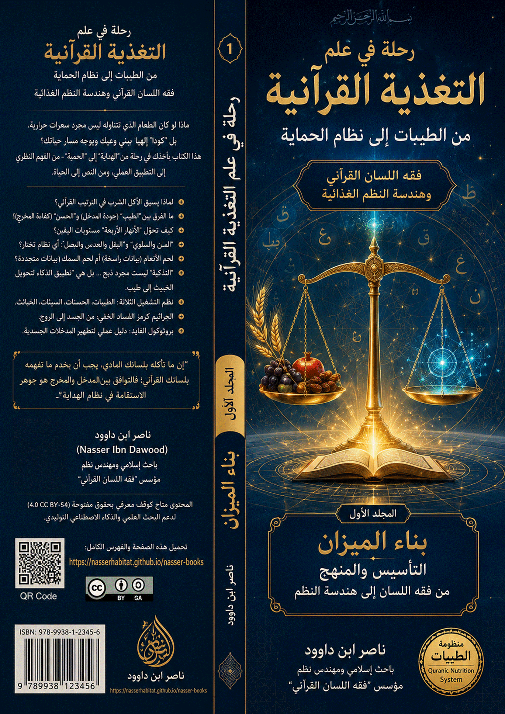
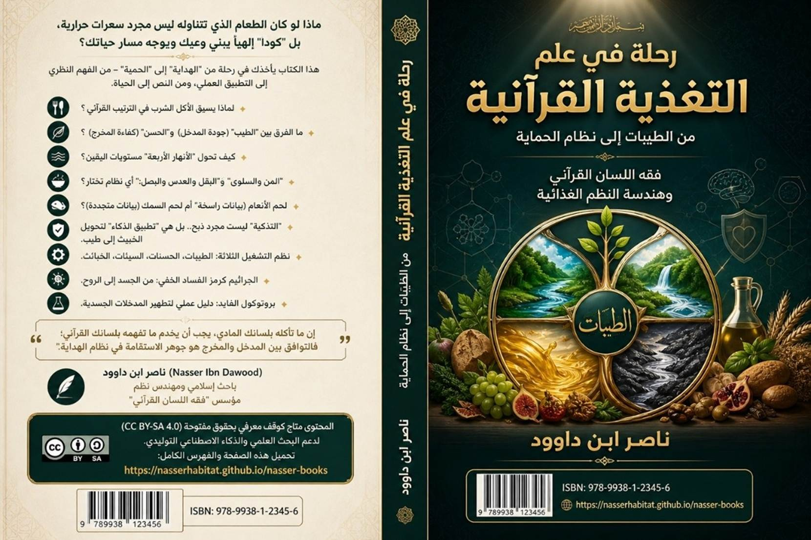
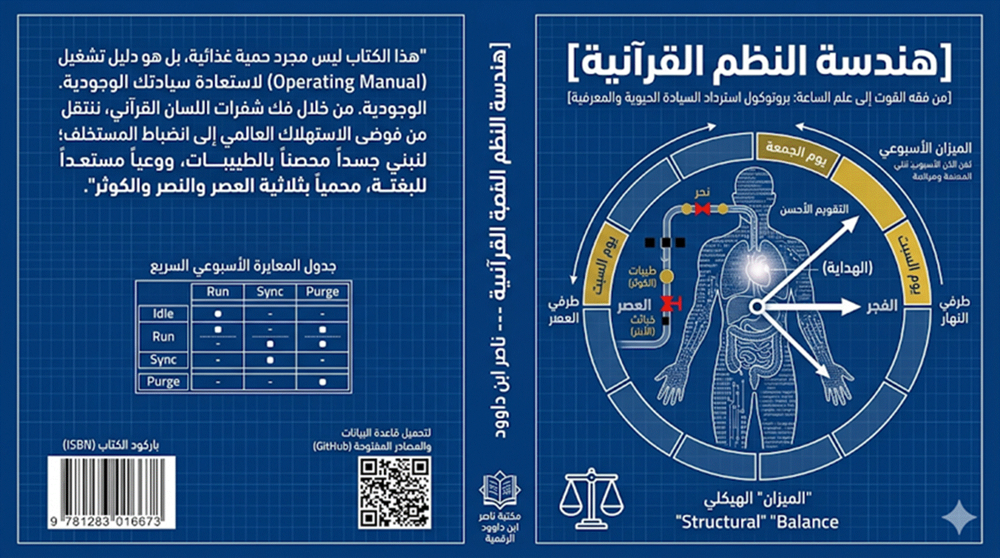
رحلة في
علم التغذية القرآنية
I المجلد الأول: بناء الميزان
التأسيس والمنهج — من فقه اللسان إلى
هندسة النظم
"لقد حاول هذا الكتاب أن ينقل القارئ: من فقه القوت إلى هندسة الملكوت، ومن
الاستهلاك إلى التشغيل، ومن التبعية إلى السيادة، ومن اللقمة إلى البصيرة."
ناصر ابن داوود
رحلة في علم التغذية القرآنية — طبعة 2026
وظيفة هذا المجلد
وفيها:
هذا المجلد يجيب عن:
·
ما هو الغذاء في القرآن؟
·
ما معنى الطيبات؟
·
كيف يعمل فقه اللسان؟
·
ما علاقة الغذاء بالبصيرة؟
ثم:
بعد إنهاء هذا المجلد ستكون قادرًا
على:
- فهم المنهج
- تحليل المفاهيم
- قراءة النظام الغذائي كبنية معرفية
ناصر ابن داوود
https://nasserhabitat.github.io/nasser-books/
I.1 رحلة في علم
التغذية القرآنية
من الطيبات إلى
نظام الحماية
فقه اللسان
القرآني وهندسة النظم الغذائية
هذا العمل ليس كتابًا تقليديًا في التغذية، ولا محاولة لتحويل القرآن إلى وصفة صحية أو حمية غذائية، بل هو مشروع معرفي يسعى إلى إعادة تعريف “الغذاء” ضمن المنظومة القرآنية بوصفه أحد مفاتيح بناء الإنسان: وعيًا، وبصيرةً، وسلوكًا، وحمايةً، واستخلافًا.
وقد جرى تقسيم هذا المشروع إلى ثلاثة مجلدات مترابطة وظيفيًا، تمثل مراحل الانتقال من “فهم النظام” إلى “تشغيله” ثم إلى “الاستعداد لدور الإنسان في عصر الانكشاف”.
I.2 خريطة المجلدات
الثلاثة
I.2.1 المجلد الأول: بناء الميزان
التأسيس والمنهج — من فقه اللسان إلى
هندسة النظم
يركز هذا المجلد على بناء الأساس المفاهيمي والمنهجي لفهم الغذاء في القرآن، وإعادة تعريف مفاهيم الطيبات، والخبائث، والأكل، والشرب، ضمن شبكة اللسان القرآني.
وفيه ينتقل القارئ:
من “الغذاء كمادة” → إلى “الغذاء كنظام إدراك”.
I.2.2 المجلد الثاني: تشغيل النظام
من الأنعام إلى الشفاء — فقه اللحوم
والبروتينات وهندسة الوقاية
يمثل هذا المجلد الجانب التطبيقي والتشغيلي، حيث يتم تفعيل المفاهيم السابقة في أرضية الواقع: الغذاء، اللحوم، التزكية، الوقاية، الأمراض، نظم التشغيل، والصراع الغذائي العالمي.
وفيه ينتقل القارئ:
من “فهم النظام” → إلى “إدارة المدخلات والمخرجات”.
I.2.3 المجلد الثالث: خريطة المستخلف
من علم الساعة إلى الأدوات العملية —
الاستشراف والبصيرة التشغيلية
هذا المجلد هو مرحلة الاكتمال والاستشراف؛ حيث ينتقل المشروع من التغذية إلى سؤال الإنسان نفسه: دوره، وحمايته، ووظيفته، واستعداده لعصر الانكشاف.
وفيه ينتقل القارئ:
من “تشغيل النظام” → إلى “بناء الإنسان المستخلف”.
المسار الكلي
للسلسلة

I.3 مقدمة عامة للكتاب
رحلة في علم التغذية القرآنية
من الطيبات إلى نظام الحماية — فقه اللسان القرآني وهندسة النظم الغذائية
الحمد لله الذي جعل في خلقه ميزانًا، وفي آياته نورًا، وفي سننه نظامًا لا يختل، والصلاة والسلام على من بُعث رحمةً للعالمين، هاديًا إلى صراط مستقيم، وعلى آله وصحبه ومن سار في طريق التدبر والبحث عن الحقيقة.
أما بعد،
فهذا الكتاب ليس كتابًا في التغذية بالمعنى التقليدي، ولا محاولة لإنتاج "حمية قرآنية" تختزل الوحي في قائمة أطعمة أو وصفات صحية، بل هو رحلة معرفية تسعى إلى إعادة اكتشاف مفهوم الغذاء نفسه من داخل القرآن؛ بوصفه جزءًا من منظومة أوسع تشمل الوعي، والهداية، والإدراك، والحماية، والاستخلاف، وهندسة العلاقة بين الإنسان والكون.
I.3.1 أزمة الغذاء في عصر التعقيد: من فوضى المدخلات إلى اختلال الوعي
لقد أصبح الإنسان المعاصر يعيش داخل عالم شديد التعقيد؛ عالم تتحكم فيه الصناعات الغذائية، والدعاية، والخوارزميات، والأنظمة الاقتصادية، والهندسة الإعلامية، حتى لم يعد يأكل فقط ما يختاره، بل ما يُعاد تشكيل وعيه ليقبله ويشتهيه ويعتمد عليه. إنه لم يعد يتناول الطعام بقرار منه، بل يستجيب لمنظومات إعلانية محكمة صُممت لتنتزع منه إرادته، وتعيد برمجة تفضيلاته، وتصنع فيه إدمانًا على أنماط استهلاكية لا علاقة لها باحتياجاته الفطرية الحقيقية.
إن الإنسان اليوم يتعرض لقصف يومي بالصور، والإغراءات، والدراسات الممولة، والترويج المقنع للمنتجات التي تبتعد عن الطبيعة بقدر ما تبتعد عن العقل. وقد بات المطبخ المنزلي محطة أخيرة في سلسلة إمداد عالمية تبدأ من مختبرات الأغذية، وتمر عبر مصانع المعالجة، وتنتهي على رفوف المتاجر في صورة "أطعمة" لا تحمل في جوهرها إلا القليل من القيمة الحقيقية، وتحمل في طياتها الكثير من المواد التي لا يعرفها الجسد، ولا يستطيع هضمها، ولا يملك آليات للتعامل معها.
ومن هنا لم تعد أزمة الغذاء مجرد أزمة سعرات، أو فيتامينات، أو دهون، بل أصبحت أزمة "نظام إدراك"، أزمة علاقة الإنسان بما يدخل جسده وعقله وروحه معًا. إنها أزمة فقدان القدرة على التمييز بين ما يبني وما يهدم، بين ما يغذي وما يسمم، بين ما يقرب إلى الفطرة وما يبعد عنها. إنها أزمة أعمق من أي مختبر، وأوسع من أي استشارة طبية، لأنها تتعلق بجوهر ما يعنيه أن تكون إنسانًا.
I.3.2 الفرضية المركزية: الغذاء ليس مادة بيولوجية فقط
ينطلق هذا الكتاب من فرضية مركزية مفادها أن القرآن لا يتحدث عن الطعام بوصفه مادةً بيولوجية فقط، بل بوصفه "منظومة تشغيل" تؤثر في البصيرة، والسلوك، والوعي، والمناعة، والقدرة على التمييز، والاستقرار النفسي والروحي. فالقرآن الكريم ينظر إلى الغذاء نظرة شمولية تتجاوز حدود الكيمياء الحيوية إلى أبعاد وجودية أعمق؛ فهو يرى في اللقمة مدخلاً إلى النفس، وفي الأكل عبادة تتعلق بالنية والاستقبال، وفي الطعام أثرًا يبقى في القلب قبل أن يبقى في المعدة.
هذا المنظور يختلف جوهريًا عن النظرة المادية التي تختزل الإنسان في معادلات حسابية: مدخلات ومخرجات، سعرات وسعرات، بروتينات ودهون. فالإنسان ـ في المنظور القرآني ـ ليس آلةً عضوية معزولة، بل كيان متعدد الطبقات: جسد، ونفس، وعقل، وروح، وشبكة علاقات معرفية وسلوكية. ولهذا فإن الغذاء، والشراب، والطيبات، والخبائث، والشفاء، والمرض، ليست مجرد مصطلحات صحية، بل مفاتيح لفهم النظام الإنساني كله.
هذا التصور يضع الغذاء في موقعه الصحيح من منظومة الوجود: ليس غاية في ذاته، ولا مجرد وسيلة للإشباع، بل هو أداة من أدوات البناء الوجودي، وجند من جنود التزكية، ومادة خام يدخل في صناعة الإنسان الذي يريد الله له أن يكون "خليفة في الأرض". فمن يسيء فهم الغذاء، يسيء بناء الإنسان. ومن يفصل الطعام عن الوعي، يفصل الجسد عن الروح.
I.3.3 الإعلان التأسيسي للرحلة: تطبيق عملي لفقه اللسان القرآني
إن هذا الكتاب الذي بين يديك ليس مجرد مجموعة نصائح غذائية، ولا محاولة لترميم الجسد وحده، بل هو تطبيق عملي مباشر لمنهج "فقه اللسان القرآني" الذي يؤسس لمشروع أوسع يهدف إلى تحرير المصطلح القرآني وإعادة بناء العلاقة مع النص بوصفه نظام تشغيل حيوي، لا مجرد خطاب وعظي أو تشريعي جامد.
لقد اخترت أن تكون هذه الرحلة في مجال التغذية لأن اللسان القرآني نفسه يضع الغذاء والشراب في مصاف المدخلات النظامية التي لا تبني الأجساد وحدها، بل تشكل الوعي وتوجه السلوك وتحدث التزكية أو تحجبها. وحين يقول الله تعالى: } كُلُوا مِنَ الطَّيِّبَاتِ وَاعْمَلُوا صَالِحًا{ [المؤمنون: 51]، فإنه لا يوصي بطعام صحي فقط، بل يؤسس لعلاقة بنيوية بين المدخل المادي والمخرج السلوكي، بين جودة ما يستهلك وصلاحية ما ينتج.
هذه العلاقة لا تُفهم بالوعظ المجرد، ولا بالمختبرات البيولوجية وحدها، بل عبر فقه اللسان الذي يعيد تعريف المفاهيم: فالطيب ليس صحة غذائية فحسب، بل مدخل متوافق مع الفطرة، طاقة نظيفة لا تترك رواسب في جهاز الوعي. والخبيث ليس مجرد حرام شرعي، بل بيانات ملوثة تعطل معالج النفس وتحجب البصيرة. والأكل ليس بلعًا، بل استيعاب حقيقي لكل ما يدخل إلى الكيان. والشرب ليس ريًّا فحسب، بل سيولة اليقين واستقرار المنهج في الوعي.
I.3.4 موقع الكتاب ضمن مشروع "فقه اللسان القرآني — هندسة الوحي"
لا يأتي هذا الكتاب منعزلاً عن سياقه المعرفي، بل هو أحد روافد مكتبة متكاملة تسير على نفس المنهج البنيوي، والتي تشمل عشرات الكتب والتطبيقات التي تهدف إلى إعادة بناء الفهم القرآني من الحرف الأولي إلى التشغيل الوجودي. وقد أعلنت في غير ما موضع أن جهود هذا المشروع تتوزع على أربعة مجلدات مترابطة وظيفيًا:
أولاً: التأسيس والأدوات — وهو المجلد الذي يحرر الحرف العربي من ركوده ويعيد إليه طاقته التوليدية، ويؤسس منهجية المثاني وقاموس الأزواج الحرفية، ويضع بين يدي القارئ الأداة اللسانية التي تمكّنه من تفكيك النص وتحليل بنيته الدلالية.
ثانيًا: التطبيقات — وهو الميدان الذي تُختبر فيه الأداة على مفاهيم مفصلية (الصلاة، الخلق، القصر، الفتح، الرفق، الجهد...)، ويمثل هذا الكتاب جزءًا هامًا من هذا المجلد، لأنه يطبق أدوات التفكيك اللساني على أرضية التغذية والأشربة.
ثالثًا: النظم والبنية الكلية — وهو المجلد الذي يرسم العلاقة بين بنية الكتاب وبنية الوجود، ويكشف أن القرآن ليس نصوصًا متجاورة، بل نظام موحد يفسر حركة الوجود ويضبط إيقاعها.
رابعًا: من المعنى إلى التشغيل — وهو المجلد الذي يقدم بروتوكولات التشغيل السلوكي وخوارزمية القراءة والنماذج التطبيقية ودليل الضبط اليومي.
إن هذا الكتاب يقع في تقاطع المجلدين الثاني والرابع: فهو يمتحن أداة التفكيك اللساني في أرضية التغذية (تطبيقًا عمليًا)، ويترجم ذلك إلى بروتوكولات حمية يومية (تشغيلًا سلوكيًا).
I.3.5 الإشكالية المعرفية: من اختلال المفهوم إلى تشوّه الوعي
ينطلق هذا العمل من ملاحظة خلل عميق في الوعي الديني المعاصر، لا يرتبط بغياب النص، بل بطريقة التعامل معه. فالقرآن الكريم، بوصفه خطابًا مؤسسًا للوعي الإنساني، لم يُفقد حضوره، ولكن فُقدت آليات قراءته ضمن بنيته اللسانية والنظامية، مما أدى إلى اختزال مفاهيمه الكلية في تطبيقات جزئية، وإعادة توظيفه خارج مجاله الوظيفي.
لقد تحوّل النص القرآني في كثير من القراءات المعاصرة إلى مصدر لتبرير أنماط جاهزة، سواء في السلوك، أو الفكر، أو حتى في مجالات علمية تخصصية كالتغذية والطب، دون وعي بالفارق بين "الهداية" بوصفها نظامًا توجيهيًا، و"المعرفة التطبيقية" بوصفها نتاجًا إنسانيًا تراكميًا. وبهذا، تم نقل المفاهيم القرآنية من مستواها الكلي المنظّم إلى مستوى جزئي مبتور، فاختلّ المعنى، وتشوّش المنهج، وانعكس ذلك على الوعي والممارسة.
إن مفاهيم مثل "الطيبات" و"الخبائث"، أو "الأكل" و"الشرب"، أو "الماء" و"الإنبات"، لم تعد تُقرأ ضمن شبكتها القرآنية، بل جرى تفكيكها وإعادة إسقاطها على سياقات ضيقة، فتم اختزال "الطيب" في الغذاء الصحي، و"الخبيث" في الضار جسدياً، وتحول "الماء" إلى مجرد عنصر مادي أو رمز روحي معزول، بينما أُفرغت هذه المفاهيم من وظيفتها الأصلية بوصفها عناصر في نظام بناء الإنسان.
مخطط
الانهيار المعرفي:
اختلال المفهوم ← تجزئة الدلالة ← إسقاطات غير منضبطة ← تشوش المنهج ← تشوه الوعي ← انحراف الممارسة
الإشكالية المركزية: كيف يمكن إعادة بناء فهم المفاهيم القرآنية ضمن بنيتها اللسانية، بما يحررها من الاختزال الجزئي، ويعيد توظيفها في بناء وعي إنساني منضبط؟
I.3.6 المنهج التأصيلي: فقه اللسان القرآني والتحليل البنيوي للمفاهيم
يقوم هذا العمل على اعتبار اللسان القرآني نظامًا دلاليًا متماسكًا، لا يُفهم عبر جمع معاني المفردات، بل من خلال تحليل العلاقات التي تربط بينها داخل الخطاب. فالمفهوم في القرآن لا يعمل بوصفه وحدة معجمية مستقلة، بل بوصفه عنصرًا في شبكة، يكتسب معناه من موقعه ووظيفته داخل هذه الشبكة.
وبناءً على ذلك، فإن القراءة المعتمدة هنا لا تسعى إلى استبدال التفسير التقليدي، ولا إلى نفي المعنى الحسي للنص، بل إلى إعادة ترتيب مستويات الفهم، بحيث يُنظر إلى المعنى الحسي باعتباره الطبقة الأولى الحاملة للدلالة، لا غايتها النهائية. فالقرآن لا يُلغي الواقع، بل يوظّفه، ولا ينفي الحس، بل يجعله مدخلاً لفهم أعمق.
مستويات
الفهم الأربعة:
أولاً:
المعنى الحسي — الدلالة المباشرة المرتبطة بالواقع (مثال: الماء،
الطعام، الأرض).
ثانيًا: المعنى
الوظيفي — الدور الذي يؤديه المفهوم داخل النظام القرآني
(مثال: الإحياء، التغذية، التكوين).
ثالثًا: القراءة
البنيوية — تحليل العلاقات بين المفاهيم داخل شبكة دلالية
(مثال: ربط الماء بالأنهار الأربعة).
رابعًا: التأويل — الاجتهاد البشري لربط هذه المستويات ضمن رؤية متكاملة (مثال: استخلاص
"البروتوكولات" الوظيفية).
ولا يدّعي هذا العمل تقديم معانٍ قطعية نهائية، بل يتحرك في إطار تحليل بنيوي وتأويل منضبط، يستند إلى النص، ويخضع له، دون أن يُسقط عليه أنماطًا خارجية جاهزة. كما يُستأنس أحيانًا بالبنية الصوتية أو الحرفية لبعض الألفاظ بوصفها مؤشرات دلالية مساعدة، لا مصادر مستقلة للمعنى، إذ يبقى السياق القرآني هو المرجع الحاكم في تحديد الدلالة.
بروتوكول
التحليل الثابت (5 خطوات):
- عرض التعريف الشائع للمفهوم في الخطاب الديني أو الثقافي.
- كشف مناطق الاختزال أو الالتباس في هذا التعريف.
- تحليل استعمال المفهوم داخل السياق القرآني.
- إعادة بناء تعريف تأصيلي منضبط.
- بيان الأثر المنهجي لهذا التعريف على الفهم والسلوك.
والغاية من هذا المنهج ليست إنتاج تأويلات جديدة بقدر ما هي إعادة تفعيل المفاهيم القرآنية بوصفها أدوات لبناء الوعي، لا مجرد موضوعات للفهم النظري.
I.3.7 من إثبات النص بالعلم إلى بناء النموذج المعرفي القرآني
قبل الشروع في تفكيك شفرات الغذاء، لا بد من ضبط "معايير القياس" المعرفية. إن المنهج الذي نتبناه في هذا البحث يتجاوز محاولات "المصالحة التقليدية" بين النص والعلم، لينتقل بنا إلى مرحلة استعادة السيادة المعرفية للوحي. في هذه الوقفة، نحدد بروتوكول الانتقال من "الإسقاط العلمي" المربك، إلى "التأصيل السنني" الذي يجعل من القرآن منظومة تشغيل حاكمة على المختبر، لا محكومة به.
نقد
منهج "الإسقاط العلمي" التقليدي
يعتمد المنهج التقليدي السائد على "إسقاط" النظريات العلمية الحديثة على الآيات القرآنية للبحث عن نقاط تطابق، وهو مسلك محفوف بالمخاطر المنهجية:
- ارتهان النص للمتغير: ربط معنى الآية بنظرية علمية قد تتغير أو تُدحض بعد سنوات يجعل صدقية النص مرتبطة بمتغير بشري، مما قد يؤدي إلى اهتزاز الثقة بالوحي عند سقوط تلك التأويلات.
- العلم كحاكم: في هذا المنهج، يتحول المختبر إلى سلطة فوق النص تقرر صحة "الإعجاز" من عدمه، بدلاً من أن يكون القرآن هو الميزان القيمي الذي يقوّم مسارات العلم.
- التعويض الحضاري: نشأ هذا الخطاب غالبًا كآلية دفاعية لإثبات أن "الوحي سبق العلم الحديث"، مما حول القرآن من كتاب هداية إلى مخزن للتبرير العلمي.
منهج
التأصيل السنني (الرؤية البديلة)
على النقيض من الإسقاط، يتحرك هذا الكتاب وفق منهجية "فقه اللسان" التي تنطلق من داخل النص نحو الواقع عبر الخطوات التالية:
- التحليل اللساني البنيوي: تحليل المفهوم القرآني في سياقه اللغوي الأصيل، بعيدًا عن التجزئة الحرفية.
- استخراج الشبكة الدلالية: ربط المفردة بكافة سياقاتها القرآنية لبناء مفهوم كلي متكامل.
- تحديد البنية السننية: استخلاص "القوانين الكلية" (السنن) التي تحكم الظاهرة المعالجة.
- الاختبار في الواقع والعلوم: جعل هذه السنن مجالاً لاختبار المعارف البشرية والعلوم الكونية، وليس العكس.
القرآن
كـ "منظومة توليد معرفي"
القرآن في هذه الرؤية ليس مجرد قاموس ألفاظ أو كتاب مواعظ، بل هو "نظام تشغيل" للوعي الإنساني: هو بنية تنتج طريقة رؤية الإنسان للعالم، ولجسده، وللغذاء، وللموت. تعمل السنن القرآنية كجسر يربط بين النص، والكون، والجسد، والتاريخ. والقرآن لا يقدم المعرفة كمعلومات جامدة، بل كقوانين تشغيلية؛ فإذا اختل المفهوم (مثل مفهوم الطعام)، اختل معه الإدراك ثم السلوك، وصولاً إلى اختلال العمران الحضاري.
تحرير
العلم من التزييف
إن تبني النموذج المعرفي القرآني لا يعني الخصومة مع العلم، بل يعني وضعه في مكانه الصحيح: القرآن يكشف "المقاصد" والعلل الغائية، بينما يكشف العلم والكون "الآليات" والوسائل المادية. ويعارض القرآن تحويل العلم إلى أداة للهيمنة أو وسيلة لتغيير "خلق الله" وفق أهواء السوق. والعودة إلى القرآن تعني إعادة تأسيس المختبر على رؤية أخلاقية وفطرية، تحمي الإنسان من أن يتحول إلى مجرد مادة استهلاكية.
خلاصة الفصل: إن الهدف من هذا العمل ليس "إثبات القرآن بالعلم"، بل "بناء نموذج معرفي قرآني يعيد تنظيم فهم الإنسان للعلم نفسه". وبهذا، يتحول الدين من قراءة تجريدية منفصلة عن الكون إلى إدارة حكيمة لحركة الإنسان والحياة وفق سنن الخالق.
I.3.8 السقوط من النظام المعرفي إلى البيولوجيا: نقد النزعة المادية
لقد حُبس الخطاب الإسلامي المعاصر حول التغذية في قوالب "المختبرات البيولوجية"، حيث اختُزلت الآيات التي تتحدث عن الطيبات والأطعمة في مجرد "قائمة طعام" طبية تبحث عن السعرات الحرارية والفوائد العضوية. إن هذا الاختزال يمثل سقوطًا من سعة الرسالة الكونية إلى ضيق القراءة المادية؛ فالقرآن حين يذكر العسل أو الزيتون أو النخيل، لا يقدم وصفة طبية لمجرد ترميم الجسد الفاني، بل يقدم "أكوادًا كونية" تهدف إلى ضبط مسار الإنسان وهدايته الشاملة. إن حصر "الطيبات" في البعد الغذائي فقط هو تغييب للمقصد الأسمى الذي يربط بين غذاء الجسد وطهارة الوعي.
عندما نقرأ الآية: {وَأَوْحَى رَبُّكَ إِلَى النَّحْلِ أَنِ اتَّخِذِي مِنَ الْجِبَالِ بُيُوتًا وَمِنَ الشَّجَرِ وَمِمَّا يَعْرِشُونَ} [النحل: 68]، ثم نقرأ: {يَخْرُجُ مِنْ بُطُونِهَا شَرَابٌ مُخْتَلِفٌ أَلْوَانُهُ فِيهِ شِفَاءٌ لِلنَّاسِ} [النحل: 69]، فإننا أمام أكثر من مجرد "منتج طبيعي مفيد". نحن أمام منظومة متكاملة: وحي، ونحل، وزهور، ورحيق، وتحويل داخلي، ثم خروج شفاء. هذه المنظومة تعليمية قبل أن تكون غذائية. إنها نموذج مصغر لكيفية تحويل المادة الخام (الرحيق) إلى جوهر نافع (العسل) عبر عملية معالجة داخلية. وكذلك الإنسان مدعو لأن يحول مدخلاته (الخامات المعرفية والغذائية) إلى شفاء وحياة طيبة عبر وعيه وتدبره.
I.3.9 القرآن كنظام تشغيل للإنسان: إعادة تعريف المدخلات والمخرجات
في هذا الكتاب، نتعامل مع القرآن الكريم باعتباره "نظام تشغيل" سياديًا صممه الخالق لضبط كيان "الإنسان القرآني". ضمن هذا النظام، لا تُعد الأطعمة والأشربة مجرد مواد استهلاكية، بل هي "مدخلات نظام" مصممة بعناية فائقة لتتوافق مع "برمجة" النفس والروح والعقل. إن كل "ثمرة" أو "شراب" ذُكر في النص الإلهي يمثل "بروتوكولًا وظيفيًا"؛ فالعسل هو بروتوكول الشفاء المصفى، والماء هو ناقل المعلومات والحياة، والاعتدال {وَلَا تُسْرِفُوا} هو صمام الأمان الذي يمنع انهيار النظام أو خروجه عن المعايرة الصحيحة.
هذا التصور الهندسي للقرآن يفتح أمامنا آفاقًا جديدة لفهم العلاقة بين الوحي والواقع. فليس المقصود من الآيات أن تكون "دليل تعليمات" جامدًا، بل أن تكون "معمارًا إدراكيًا" يعيد تشكيل وعي الإنسان بالطريقة التي ينظر بها إلى كل شيء: إلى جسده، إلى طعامه، إلى مرضه، إلى دوائه، إلى موته، إلى حياته. إنها نقلة نوعية من السؤال التقليدي: "ماذا قال الله؟" إلى السؤال الهندسي: "كيف يعمل هذا الذي قاله الله داخل نظامي؟" ومن هنا تأتي أهمية الجمع بين فقه اللسان (لفهم النص) وهندسة النظم (لفهم التشغيل).
I.3.10 فرضية الكتاب: استعادة "سلطان البصيرة" المعرفي
تقوم فرضية هذا البحث على ضرورة استعادة "سلطان البصيرة"، وهي الحالة التي ينتقل فيها الإنسان من الاستهلاك العشوائي (المادي والمعرفي) إلى "الحمية" الواعية التي ترشدها الهداية. إننا نسعى لتفكيك "الأخطاء الإملائية والمفهومية" التي تراكمت في الأذهان حول العلاقة بين القرآن والتغذية، لنعيد بناء العلاقة مع "مائدة الوحي" كمنظومة ترميم معرفي وجسدي متكاملة. الهدف ليس مجرد تحسين الصحة العامة، بل الوصول إلى حالة "اليقين" و"السلام" التي لا تتحقق إلا عندما تتناغم مدخلات الإنسان مع فطرة الله التي فطر الناس عليها.
إن "سلطان البصيرة" هو القدرة على رؤية ما وراء المادة، وفهم الإشارات الكامنة في الظواهر، واستخلاص السنن من الأحداث. وهو ليس موهبة فطرية فقط، بل هو نتيجة تراكمية لصفاء المدخلات (غذائيًا ومعرفيًا) واستقامة المنهج (توجيهيًا وسلوكيًا). فالبصيرة لا تنمو في أرض ملوثة، ولا تضيء في جو مظلم. ولهذا فإن استعادة هذا السلطان تتطلب تطهيرًا شاملاً لكل ما يدخل إلى الكيان الإنساني، بدءًا من اللقمة وانتهاءً بالفكرة.
خلاصة
المقدمة في جدول سريع:
|
العنوان |
الجوهر |
|
نقد النزعة المادية |
القرآن ليس وصفة طبية، بل أكواد كونية للهداية. |
|
القرآن كنظام تشغيل |
الأطعمة مدخلات، والثمار بروتوكولات، والإسراف صمام أمان. |
|
فرضية الكتاب |
استعادة سلطان البصيرة: من الاستهلاك العشوائي إلى الحمية الواعية. |
I.3.11 "رحلة في علم التغذية القرآنية" وعلم الأغذية: تكامل لا تعارض
ربما يتساءل القارئ الكريم: هذا الكتاب الذي بين يدي يتحدث عن "الطيبات" و"الخبائث"، ويصف "العسل" بأنه بروتوكول شفاء، و"الأنعام" بأنها بيانات تأسيسية، و"الأسماك" بأنها معلومات متجددة... أليس هذا مجرد تشبيهات أدبية تتعارض مع علم الأغذية الحديث؟ هل يريد الكاتب أن نستغني عن معرفة السعرات الحرارية والفيتامينات والبروتينات؟
الإجابة المختصرة: لا، لا تعارض، بل تكامل عمودي.
هذا الكتاب لا يقع في مستوى علم الأغذية، بل يقع في مستوى ما وراء التغذية، أو تأويل الغذاء في منظومة الهداية القرآنية. وهو لا ينكر الحقائق العلمية الثابتة ولا يحاول استبدالها، بل يفترضها ويبني عليها، ثم يضيف إليها بعدًا دلاليًا ووظيفيًا وروحيًا يجعل من عملية الأكل عبادة وفقهًا وهندسة للوعي.
مقارنة
بين المستويين:
|
المحور |
علم الأغذية (الحديث) |
منهج فقه اللسان القرآني |
|
الموضوع |
تركيب الغذاء (كربوهيدرات، بروتينات، دهون، سعرات) |
دلالات الغذاء والشرب في النص كمدخلات لنظام الإنسان المتكامل |
|
المستوى |
مادي، كمي، يُقاس في المختبر |
دلالي، وظيفي، هدائي (البصيرة، التزكية، والسلوك) |
|
المنهج |
تجريبي، إحصائي، متغير بتغير الأدلة |
تأويلي بنيوي، يستنبط «بروتوكولات» من النص، ويسندها بالعلم اليقيني |
|
الغاية |
الصحة الجسدية، والوقاية من أمراض سوء التغذية |
الحياة الطيبة، التزكية، والشفاء الشامل (جسد + نفس + فكر) |
دليل
التكامل من داخل الكتاب نفسه:
أولاً: الإقرار بالمبادئ الطبية الأربعة — مبادئ: التوازن، التنوع، الاعتدال، الكفاية — وهي أركان علم التغذية الحديث — لا تتعارض مع {وَلَا تُسْرِفُوا} و {وَمَا جَعَلَ عَلَيْكُمْ فِي الدِّينِ مِنْ حَرَجٍ}، بل هي ترجمة هندسية لهما.
ثانيًا: العسل: مثال حي — علم الأغذية يقول: العسل يحتوي على سكريات، إنزيمات، مضادات أكسدة، وله فوائد مضادة للبكتيريا. الكتاب يقول: العسل هو «بروتوكول الشفاء المصفى»، و«الوعي المقطر»، و«كود ترميم الأعطال». المعنيان لا يتعارضان؛ أحدهما يشرح التركيب، والآخر يشرح الغائية والمكانة في نظام الهداية.
ثالثًا: اللحوم والأسماك — الكتاب يقر بأن الأنعام مصدر بروتين وطاقة، لكنه يضيف تمييزًا وظيفيًا: لحم الأنعام = «بيانات تأسيسية راسخة»، ولحم السمك = «بيانات متجددة ومرنة». هذا التمييز لا ينفي حاجة الجسم إلى البروتين، بل يوجه القارئ إلى التوازن بين الرسوخ والسيولة في اختيار مصادره.
رابعًا: تحذير صريح من منع الخضروات — في بروتوكولنا الخاص بالأمراض نؤكد أن منع الخضروات (كما في بعض الأنظمة المنحرفة) هو «كارثة لمرضى السكري والنساء». ونذكر الأسباب العلمية: الألياف، البوتاسيوم، مضادات الأكسدة، ودورها في توازن الأستروجين. وهذا دليل على أن الكتاب لا يتجاهل الحقائق العلمية، بل يُحذّر من مخالفتها.
خامسًا: الاستعانة بشهادات الأطباء — نستشهد في الملحق النقدي بكلام الدكتور محمد فايد (مهندس وأخصائي أغذية) والدكتور نوار علي (طبيب)، مما يثبت أن الكتاب منفتح على الحوار العلمي ولا ينغلق على التأويل وحده.
I.3.12 لغة البروتوكولات والأكواد: لماذا هذه الصياغة؟
إذا سأل القارئ: لماذا نستخدم لغة «البروتوكولات» و«الأكواد» و«البيانات»؟
فهذه لغة تعليمية وتقريبية، هدفها ترجمة المعاني القرآنية إلى خطاب معاصر يخاطب العقل الهندسي الذي تربى على مفاهيم النظم والمدخلات والمخرجات. وهي لا تعني أن القرآن كتاب فيزياء حاسوب، بل تعني أن الهداية الإلهية تسير وفق سنن ونظم يمكن دراستها وتفعيلها. فالتشبيه بالبروتوكولات والبرامج إنما هو لتوضيح الدقة والترابط والوظيفية في الخطاب القرآني، وليس لتقليل القرآن إلى مجرد كود حاسوبي.
إن هذا الأسلوب ليس بدعة في الفكر الإسلامي؛ فكثير من العلماء استخدموا التشبيهات العلمية في عصورهم (كالغزالي في تشبيهه للعقل بالمرآة، وابن سينا في تشبيهه للنفس بالجوهر المجرد). ونحن اليوم نستخدم لغة العصر التي يفهمها المهندس والطبيب والباحث، لنقول: القرآن ليس كتاب سكون، بل كتاب حركة وتشغيل ونظام.
I.3.13 ما الذي يمنعه الكتاب قطعًا؟
توضيحًا للمنزعجين، أؤكد أن هذا الكتاب:
- لا يمنع استشارة الطبيب، بل يحث عليها، خاصة لمرضى الأمراض المزمنة.
- لا يمنع الأخذ بالأسباب العلمية (تحاليل، أدوية، علاجات طبيعية)، بل يعتبرها جنودًا لله.
- لا يحرم ما لم يحرمه الله، بل يوسع دائرة الطيبات ويدعو إلى الاعتدال.
- لا يقدس أي نظام غذائي أو أي شخص؛ فهو ناقد لأصحاب الأنظمة المنحرفة حتى لو رفعوا شعار «قرآني».
إن هذا الكتاب ليس بديلاً عن الطب، وليس فتوى مقدسة، وليس وصية ملزمة. إنه اجتهاد في الفهم، ومحاولة للربط، ودعوة للتفكير، وأداة للتمييز. فمن وجد فيه خيرًا فليأخذ به، ومن رأى فيه خطأً فليصححه بالحجة والبرهان، ومن اختلف معه فليتفق على الأصول: أن القرآن هو الميزان، وأن العقل نور، وأن الجسد أمانة، وأن الشفاء من الله وحده.
I.3.14 نصيحة للقارئ: كيف تتعامل مع هذا الكتاب؟
قبل أن تشرع في قراءة هذا الكتاب، أرجو أن تتذكر النقاط التالية:
- اقرأ هذا الكتاب بجانب معرفتك الأساسية بعلم الأغذية، لا بدلاً منها.
- استشر طبيبك قبل تطبيق أي بروتوكول علاجي، خاصة إذا كنت تتناول أدوية.
- استفد من التفكيك اللساني لفهم العمق الدلالي للأغذية والأشربة في القرآن، لكن لا تلغِ الحقائق المادية الثابتة (مثل: الماء ضروري، الألياف مفيدة، السكر الأبيض ضار).
- لا تتحمس لأي نظام غذائي قبل أن تختبره على جسدك، وتسمع رأي مختص، وتقارنه مع حالتك الصحية الفردية.
- تذكر دائمًا أن الغاية من كل هذا ليست الجسم المثالي، بل العقل الصافي، والقلب السليم، والروح الواعية، والجسد الذي يعينك على طاعة الله وعمارة الأرض.
الخلاصة النهائية:
«رحلة في علم التغذية القرآنية» لا يصطدم بعلم الأغذية، بل يرقى معه ضمن مستويات متكاملة. علم الأغذية يخبرك «ماذا تحتاج خلاياك»، وعلم التغذية القرآنية — كما نطرحه — يخبرك «كيف تدير مدخلاتك (مادة وفكرًا) لتحقق التزكية والصحة والسلوك الحسن». والآية التي جمعت بين المستويين هي {يَا أَيُّهَا الرُّسُلُ كُلُوا مِنَ الطَّيِّبَاتِ وَاعْمَلُوا صَالِحًا} (المؤمنون: 51).
I.3.15 الخاتمة: نحو رحلة تحرر وبناء
هذه الرحلة ليست دعوة إلى الخوف، ولا إلى الانعزال، ولا إلى تحويل الدين إلى هوس غذائي، بل دعوة إلى الوعي، والبصيرة، والتحرر من الاستلاب، وإعادة بناء العلاقة بين الإنسان وما يستهلكه: جسدًا، وعقلًا، وروحًا.
إنها دعوة لاستعادة السؤال الحقيقي: ليس "ماذا آكل؟" فقط، بل "كيف يؤثر ما آكله في رؤيتي للحياة؟" و"كيف يشكل ما أشربه علاقتي بخالقي؟" و"كيف تغير اللقمة التي أضعها في فمي بصيرتي، ومناعتي، وقدرتي على التمييز؟"
أسأل الله أن يجعل هذا العمل نافعةً بصائره، صادقةً مقاصده، وأن يفتح به بابًا من أبواب التدبر والهداية.
وما كان فيه من صواب فمن الله، وما كان فيه من خطأ أو قصور فمن نفسي ومن محدودية الفهم البشري.
والله من وراء القصد، وهو يهدي السبيل.
ناصر
ابن داوود
المجلد التطبيقي — فقه
اللسان القرآني — طبعة 2026
مكتبة ناصر ابن داوود
الرقمية: https://nasserhabitat.github.io/nasser-books/
تم تحديث وتوسيع المقدمة بتاريخ 16 مايو 2026
I.4 خريطة المجلدات الثلاثة
رحلة في علم التغذية القرآنية
من الطيبات إلى نظام الحماية
فقه اللسان القرآني وهندسة النظم
الغذائية
هذا العمل ليس كتابًا تقليديًا في التغذية، ولا محاولة لتحويل القرآن إلى وصفة صحية أو حمية غذائية، بل هو مشروع معرفي يسعى إلى إعادة تعريف “الغذاء” ضمن المنظومة القرآنية بوصفه أحد مفاتيح بناء الإنسان: وعيًا، وبصيرةً، وسلوكًا، وحمايةً، واستخلافًا.
وقد جرى تقسيم هذا المشروع إلى ثلاثة مجلدات مترابطة وظيفيًا، تمثل مراحل الانتقال من “فهم النظام” إلى “تشغيله” ثم إلى “الاستعداد لدور الإنسان في عصر الانكشاف”.
خريطة المجلدات الثلاثة
المجلد الأول: بناء الميزان
التأسيس والمنهج — من فقه اللسان إلى
هندسة النظم
يركز هذا المجلد على بناء الأساس المفاهيمي والمنهجي لفهم الغذاء في القرآن، وإعادة تعريف مفاهيم الطيبات، والخبائث، والأكل، والشرب، ضمن شبكة اللسان القرآني.
وفيه ينتقل القارئ:
من “الغذاء كمادة” → إلى “الغذاء كنظام إدراك”.
المجلد الثاني: تشغيل النظام
من الأنعام إلى الشفاء — فقه اللحوم
والبروتينات وهندسة الوقاية
يمثل هذا المجلد الجانب التطبيقي والتشغيلي، حيث يتم تفعيل المفاهيم السابقة في أرضية الواقع: الغذاء، اللحوم، التزكية، الوقاية، الأمراض، نظم التشغيل، والصراع الغذائي العالمي.
وفيه ينتقل القارئ:
من “فهم النظام” → إلى “إدارة المدخلات والمخرجات”.
المجلد الثالث: خريطة المستخلف
من علم الساعة إلى الأدوات العملية —
الاستشراف والبصيرة التشغيلية
هذا المجلد هو مرحلة الاكتمال والاستشراف؛ حيث ينتقل المشروع من التغذية إلى سؤال الإنسان نفسه: دوره، وحمايته، ووظيفته، واستعداده لعصر الانكشاف.
وفيه ينتقل القارئ:
من “تشغيل النظام” → إلى “بناء الإنسان المستخلف”.
المسار الكلي للسلسلة

I.5 الفهرس
I.2.1
المجلد الأول: بناء الميزان
I.2.2
المجلد الثاني: تشغيل النظام
I.2.3
المجلد الثالث: خريطة المستخلف
I.3.1
أزمة الغذاء في عصر التعقيد: من فوضى المدخلات إلى اختلال الوعي
I.3.2
الفرضية المركزية: الغذاء ليس مادة بيولوجية فقط
I.3.3
الإعلان التأسيسي للرحلة: تطبيق عملي لفقه اللسان القرآني
I.3.4
موقع الكتاب ضمن مشروع "فقه اللسان القرآني — هندسة الوحي"
I.3.5
الإشكالية المعرفية: من اختلال المفهوم إلى تشوّه الوعي
I.3.6
المنهج التأصيلي: فقه اللسان القرآني والتحليل البنيوي للمفاهيم
I.3.7
من إثبات النص بالعلم إلى بناء النموذج المعرفي القرآني
I.3.8
السقوط من النظام المعرفي إلى البيولوجيا: نقد النزعة المادية
I.3.9
القرآن كنظام تشغيل للإنسان: إعادة تعريف المدخلات والمخرجات
I.3.10
فرضية الكتاب: استعادة "سلطان البصيرة" المعرفي
I.3.11 "رحلة في علم التغذية القرآنية" وعلم
الأغذية: تكامل لا تعارض
I.3.12
لغة البروتوكولات والأكواد: لماذا هذه الصياغة؟
I.3.13
ما الذي يمنعه الكتاب قطعًا؟
I.3.14
نصيحة للقارئ: كيف تتعامل مع هذا الكتاب؟
I.3.15
الخاتمة: نحو رحلة تحرر وبناء
I.7
الباب التمهيدي: هندسة الإغواء والاختراق الهيكلي
I.7.1 الفصل الأول: من "شجرة التفاح" إلى "تغيير
خلق الله" (قراءة في ضوء سورة العصر)
I.7.2 الفصل الثاني: بوصلة القرآن: قراءة في فقه التمييز بين
اليقين والخرافة في زمن فوضى العلوم
I.8 الأطلس البصري
للسلسلة ( 18 صورة)
I.9 الباب
الأول: ميكانيكا الاستيعاب والسريان (الأكل والشرب)
I.9.1
الفصل الأول: نمط التغذية في القرآن: من المادة إلى هندسة الإمداد
I.9.2 الفصل
الثاني: التغذية بين تزكية النفس وتفعيل الجسد
I.9.3 الفصل
الثالث: "الطيبات" كمنظومة بنيوية وليست مجرد قائمة غذائية
I.9.4
الفصل الرابع: من وهم السيطرة إلى فقه العلاقة
I.9.5
الفصل الخامس: المنع بوصفه كشفًا — من فوضى الإشارات إلى استعادة الوعي الغذائي
I.9.6 الفصل
السادس: قانون خفض الوساطة – من الضجيج إلى الوضوح
I.9.7 الفصل
السابع: الأكل المعرفي وتدبر البيانات (لماذا يسبق الأكل الشرب؟)
I.9.8 الفصل
الثامن: الشرب.. تدفق اليقين واستقرار المنهج في الوعي
I.9.9 الفصل
التاسع: فقه "الطيبات" و"الخبائث" كمعايير لجودة النظام
I.10 الباب
الثاني: هندسة المعايير (حلالاً، طيباً، خبيثاً)
I.10.1 الفصل
الأول: حلالاً.. الأمر بالتحليل (حَلِّلُوا) وفك شفرات النص
§ إباحة الأطعمة والأشربة في القرآن الكريم – ضوابط
منهجية
I.10.2 الفصل
الثاني: طيباً.. جودة المخرجات وصلاحية التشغيل
I.10.3 الفصل
الثالث: الخبيث.. شفرات العجز والفساد والبيانات الملوثة
I.10.4 الفصل
الرابع: هندسة الفرق بين "الطيّب" و"الحسن" (المدخلات
والمخرجات)
I.11 الباب
الثالث: شفرات الثمار والمنظومات البرمجية
I.11.1 الفصل
الأول: النخلة.. منظومة المؤمن الوظيفية واستدامة العطاء
I.11.2 الفصل
الثاني: التين والزيتون.. هندسة الإيثار ومصادر الضياء النوري
I.11.3 الفصل
الثالث: الرمان والعنب.. الانتظام الوظيفي ووفرة المخرجات المعرفية
I.11.4 الفصل
الرابع: اليقطين.. بروتوكول الاحتواء والترميم بعد الأزمات الكبرى
I.11.5 الفصل
الخامس: الحيوان كرمز للتحدي والإعجاز – تجاوز الخوارق إلى السنن الباطنة
I.6 الإعلان السامي للسلسلة: فقه اللسان القرآني – هندسة الوحي»مشروع إعادة بناء الفهم القرآني: من الحرف الأولي إلى التشغيل الوجودي«
تنتظم هذه السلسلة في أربعة مجلدات مترابطة وظيفيًا، صُممت لتنقل القارئ في رحلة تصاعدية من “تفكيك الأداة” إلى “إدارة الحياة”، بحيث لا يبقى القرآن موضوعًا للقراءة فحسب، بل يتحول إلى نظامٍ مُشغِّلٍ للوعي.
1. المجلد الأول: التأسيس والأدوات (بناء الأداة)
- الشعار: «أنت الآن تمتلك المفتاح».
- الوظيفة: هو المختبر اللغوي الذي يحرّر الحرف العربي من ركوده، ويعيد إليه طاقته التوليدية.
- المحتوى المركزي: كشف البنية الدلالية لأسماء الحروف، تأسيس منهجية المثاني، وبناء “قاموس الأزواج الحرفية” بوصفه قاعدة تشغيل أولية.
- الناتج: انتقال القارئ من مستهلكٍ للمعنى إلى “مهندس دلالي” قادر على تفكيك البنية اللفظية واستكشاف طاقتها الحركية ذاتيًا.
2. المجلد الثاني: التطبيقات (تدريب عملي)
- الشعار: «كيف يعمل المفتاح في الأقفال المعقدة؟».
- الوظيفة: الميدان التطبيقي الذي تُختبر فيه الأداة على مفاهيم مفصلية.
- المحتوى المركزي: مباحث تطبيقية واسعة (الصلاة، الخلق، القصر، الفتح، الرفق، الجهد…) تُفكَّك فيها المفاهيم السائدة وتُعاد صياغتها وفق منطق اللسان.
- الناتج: تمكين القارئ من إدراك “المنطق الداخلي” للنص القرآني بوصفه بنيةً محكومة بعلاقات دقيقة، لا سردًا متفرقًا.
3. المجلد الثالث: النظم والبنية الكلية (الرؤية الشاملة)
- الشعار: «رؤية الماكينة الكلية للكون والقرآن».
- الوظيفة: برج المراقبة الذي يربط بين بنية الكتاب وبنية الوجود.
- المحتوى المركزي: هندسة المثاني في بعدها الكلي، فهم “أم الكتاب” كمصفوفة تشغيل، واستكشاف العلاقة بين النظام القرآني والنظام الكوني.
- الناتج: إدراك أن القرآن ليس نصوصًا متجاورة، بل نظامٌ موحّد يفسّر حركة الوجود ويضبط إيقاعها.
4. المجلد الرابع: من المعنى إلى التشغيل (الموسوعة الكبرى)
- الشعار: «تحويل الوحي إلى نظام تشغيل داخلي».
- الوظيفة: غرفة التحكم وقمة الهرم المعرفي.
- المحتوى المركزي: بروتوكولات التشغيل السلوكي، خوارزمية القراءة، النماذج التطبيقية، ودليل الضبط اليومي.
- الناتج: انتقال القرآن من موضوعٍ للدراسة إلى قوةٍ محركة تُعيد تشكيل الإدراك والقرار والاستجابة.
الخاتمة المنهجية
بهذا البناء، لا تعود هذه السلسلة أعمالًا منفصلة، بل تتحول إلى منظومة واحدة:
تأسيس الأداة
↓
تشغيلها على المفاهيم
↓
بناء الشبكة الكلية
↓
تفعيلها في الواقع
ومن ثمّ، فإن هذه المكتبة ليست نهاية القول، بل بدايته؛ إذ لا تدّعي امتلاك الحقيقة، بقدر ما تسعى إلى تحرير مسار الوصول إليها، وبناء منهجٍ قابلٍ للتعلّم والتطبيق والتراكم.
كلمة ختامية
«هذه السلسلة محاولة لإخراج العقل من طور التلقي إلى طور التشغيل؛ وضعنا الأداة، وفتحنا مسار التدريب، وبنينا الرؤية، وها نحن نؤسس لإمكان التفعيل. فالقرآن لا يعمل بالكلمات الساكنة، بل بالأنظمة الحية التي تُستدعى داخل الوعي فتُعيد ترتيب العالم من الداخل قبل الخارج.»
I.7 الباب التمهيدي: هندسة الإغواء والاختراق الهيكلي
I.7.1 الفصل الأول: من "شجرة التفاح"
إلى "تغيير خلق الله" (قراءة في ضوء سورة العصر)
في المنظومة القرآنية، لا يمثل
الصراع مع الشيطان مجرد معركة أخلاقية، بل هو "صراع نظم تشغيل" (Operating Systems). الشيطان لا يسعى فقط لارتكاب
الإنسان للخطيئة، بل يهدف إلى إحداث "عطل هيكلي" في الجهاز البشري لضمان
استمرار "الخسر" الذي حذرت منه سورة العصر.
1. الاختراق الأول:
"الشجرة" كبوابة لتغيير المنظومة
لم تكن الخطيئة الأولى في الجنة مجرد
"أكل لتفاحة" أو ثمرة، بل كانت أول عملية "اختراق لنظام
الاستخلاف" (System Breach).
في فقه اللسان، تمثل الشجرة المحرمة
"شفرة بيانات" غير متوافقة مع الفطرة الأصلية (أحسن تقويم). لقد أدرك
الشيطان أن تغيير سلوك الإنسان يبدأ بتغيير "مدخلاته الحيوية". عندما
أكل الإنسان من الشجرة، لم يقع في معصية وحسب، بل أدخل إلى نظامه الحيوي والمعرفي
"كوداً غريباً" أدى إلى انكشاف السوءات (انهيار جدار الحماية الفطري)
والهبوط من حالة "اليسر" إلى حالة "الكدح" والعسر.
2. استراتيجية "تغيير خلق
الله": الهندسة العكسية للفطرة
بعد الهبوط، أعلن الشيطان عن
استراتيجيته التقنية الشاملة: {وَلَآمُرَنَّهُمْ
فَلَيُغَيِّرُنَّ خَلْقَ اللَّهِ}.
- ميكانيكا التغيير: تغيير الخلق ليس
مقتصراً على التشويه الجسدي الظاهر، بل هو "هندسة عكسية" (Reverse Engineering) للمنظومة الحيوية. يبدأ هذا
التغيير من التدخل في "شفرات البذور" (الهندسة الوراثية)، وتلويث
"الطيبات" وتحويلها إلى "خبائث" مصنعة، وصولاً إلى العبث
بالجينات.
- الهدف الهندسي: يهدف الشيطان من هذا
التغيير إلى فصل الإنسان عن "الكوثر" (المدد السنني المتصل)، وجعله
"أبتر"؛ يعتمد على أنظمة غذائية وطبية ميتة تستهلك طاقته، وتضيق
"سعة" وعيه، وتمنعه من استقبال آيات الله.
3. سورة العصر وميزان المواجهة
(الزمن كساحة معركة)
يقسم الله بـ "العصر"
ليعلن أن الزمن هو ميدان هذا الاختراق. إذا استطاع الشيطان تشتيت تركيز الإنسان
(ميكانيكا الدقيقة) وإغراقه في استهلاك "الخبائث" الجسدية والفكرية،
فإنه يوقعه في "الخسر" المطلق (التحلل البيولوجي والمعرفي).
4. شروط النجاة الأربعة: بروتوكول
الحماية من "الخسر"
لم تترك سورة العصر المستخلف أعزلاً
أمام هذا الاختراق، بل قدمت "بروتوكول نجاة" يتكون من أربع مراحل
تشغيلية متتابعة، لا يكتمل النظام الحيوي والمعرفي إلا بها:
- الإيمان (تأسيس الاتصال الأصلي): هو
هندسياً "الوصل" بمصدر البيانات النقي. إنه تنصيب "نظام
التشغيل" الفطري الذي يرفض شفرات الشيطان، ويحمي الوعي من فيروسات
الغفلة.
- العمل الصالح (جودة المخرجات الحيوية): هو الترجمة المادية للبيانات الصحيحة. في سياق المواجهة، العمل
الصالح هو تفعيل "نظام الطيبات"؛ أي إدخال الوقود النقي للجسد
وإنتاج أفعال تتوافق مع "التقويم الأحسن"، مما يمنع التحلل
البيولوجي ويعيد الجسد إلى حالة المعايرة السليمة.
- التواصي بالحق (نظام تصحيح الأخطاء - Error Correction): لا ينجو الفرد بمعزل عن
المجموع. التواصي بالحق هو تأسيس "شبكة مجتمعية" تقوم بـ
"مطابقة البيانات" باستمرار. هو الجهد الجماعي لرفض
"الخبائث" المقنعة، وكشف زيف النظام العالمي، لضمان بقاء بوصلة
المجتمع نحو الفطرة.
- التواصي بالصبر (مقاومة الانهيار - System
Resilience): بما أن مشروع "تغيير خلق الله" ممتد ويمارس ضغوطاً
هائلة على البشر، يأتي الصبر كـ "مُعامل مقاومة". إنه الثبات على
"التردد السنني"، وتحمل الضجيج والضغوط التي تمارسها هندسة الجوع
والمرض لإجبار المستخلف على الاستسلام.
خلاصة:
إن معركة "الشجرة" لم
تنتهِ في الجنة، بل اتسعت لتشمل كل ما يدخل جوف الإنسان وعقله. وما يفعله النظام
العالمي اليوم من عبث بالحرث والنسل هو امتداد حرفي لعهد الشيطان الأول. ولا نجاة
للمستخلف إلا بامتلاك "وعي العصر"، وتفعيل بروتوكول النجاة الرباعي
(الإيمان، العمل، الحق، الصبر) كدرع سيادي يحمي الجسد والوعي من الرد إلى
"أسفل سافلين".
I.7.2 الفصل الثاني: بوصلة القرآن: قراءة في فقه التمييز بين اليقين والخرافة في زمن فوضى العلوم
تمهيد:
أزمة الحقيقة في عصر التداخل
في خضم ما يُعرف بعصر "انفجار المعلومات"، لم يعد الخوف مقتصرًا على "ندرة المعرفة"، بل انتقل إلى آفة أشد خطرًا: فوضى المعرفة؛ حيث اختلط اليقين بالظن، والبصيرة بالوهم، وصار العقل مطارَحًا بين نقيضين متناقضين: "النموذج العلمي المطلق" الذي يُقدّس كمصدر وحيد لا يخطئ، و"العلم الزائف" الذي يلبس ثوب الحقيقة ويستبطن الخرافة.
إن مشكلة الإنسان المعاصر ليست في غياب المعلومة، بل في فقدانه "ميزانًا" يزن به صحة هذه المعلومة ومدى انسجامها مع الفطرة والنص والعقل.
ومن هنا يأتي القرآن الكريم ليكون هو "الميزان" و"البوصلة" في هذا الزمن المتلاطم. ليس لأنه كتاب فيزياء أو مختبر علمي، بل لأنه نظام هداية وتفريق؛ كما قال تعالى: {تَبَارَكَ الَّذِي نَزَّلَ الْفُرْقَانَ عَلَىٰ عَبْدِهِ لِيَكُونَ لِلْعَالَمِينَ نَذِيرًا} (الفرقان: 1). والفرقان هو أداة التمييز بين الحق والباطل، والطيب والخبيث، واليقين والخرافة.
أولاً:
ظاهرة "العلوم الزائفة" — حين تلبس الخرافة ثوب العلم
يُعرِّف مفهوم "العلم الزائف" (Pseudo-science) تلك النظريات أو الممارسات التي تتبنى لغة المصطلحات العلمية ومظهرها، لكنها تفتقر إلى المنهجية العلمية الصارمة، ولا تخضع للاختبار والتكرار والتفنيد (Falsifiability)، وهو المعيار الذي وضعه فيلسوف العلم كارل بوبر للتمييز بين العلم الحقيقي والزائف.
وقد حذّر الباحثون من أن هذه الظاهرة لا تقتصر على الدجل والخرافات الساذجة، بل قد تمتد إلى مؤسسات وإعلام، وتنتج عواقب خطيرة على الصحة العامة والوعي الجمعي. مثال ذلك، الدعاية المغرضة المعادية للقاحات التي اعتمدت على دراسات علمية زائفة ومدسوسة، ما تسبب في عودة أمراض كانت في طريقها إلى الاندثار.
ويضيف الفيلسوف توماس كون أن المجتمع العلمي، رغم قواعده، ليس بمنأى عن التأثيرات الاجتماعية والصراعات حول السلطة والنماذج الفكرية السائدة، ما قد يجعله يتبنى نموذجًا معينًا لمجرد أنه "سائد"، لا لأنه "أصدق" بالضرورة. وهذا يفتح بابًا للتأمل في بعض المسلمات العلمية التي تُقدّس دون تمحيص.
ثانيًا:
مجالات الخطورة — حيث ينتشر العلم الزائف
تتعدد مجالات اختراق العلم الزائف للوعي العام، ومن أبرزها:
- علم الفلك ونماذج الكون: كمحاولة تقديم صورة ذهنية للكون تتعارض مع المشاهدة الحسية والعقل الفطري.
- التاريخ والآثار: عبر تزوير الحفريات والادعاء باكتشاف "حلقات مفقودة" تخدم أجندات فكرية معينة، كحادثة احتيال "إنسان بلتداون" التي خدعت العالم لعقود.
- الطب والتغذية: حيث تنتشر الأنظمة الغذائية "المقدسة" التي تخلط جزءًا من الحقيقة بثلاثة أرباع الوهم، مثل نظام "الطيبات" المنحرف الذي حذّرنا منه في قادم فصول الكتاب.
ثالثًا:
الجسر إلى النموذج المعرفي القرآني
هنا يظهر الفرق الجوهري بين "العلم الحقيقي" و"العلم الزائف" من جهة، وبين "نظام الهداية القرآني" من جهة أخرى:
- العلم الحقيقي يُقرّ بقصوره النسبي وإمكانية تطوّره وتفنيده ذاتيًا. إنه لا يدّعي امتلاك الحقيقة المطلقة، بل يركّب نموذجًا تفسيريًا يظل مفتوحًا للنقد والمراجعة.
- العلم الزائف يدّعي احتكار الحقيقة ويُقدّم تفسيراتٍ ساحرةً وسهلة، لا تقبل النقد والتجريب.
- أما القرآن، فليس بديلًا عن العلم، بل هو المنظومة القيمية والمعيار الأخلاقي الذي يصحح مسار البحث ويحمي الفطرة. إنه "الميزان" الذي لا يخطئ، لأنه صادر عن العليم الخبير.
الإطار المعرفي للمقارنة
|
المعيار |
العلم الحقيقي |
العلم الزائف |
النموذج القرآني (البوصلة) |
|
مصدر المعرفة |
الملاحظة، التجربة، الاستدلال |
مزيج من حقائق جزئية وخرافات |
الوحي الإلهي والعقل الفطري |
|
اليقينية |
نسبي، قابل للتفنيد |
مطلق، لا يقبل الجدل |
يقين مطلق في مجال الهداية، لا في التفاصيل التشغيلية |
|
الهدف |
فهم الآليات والظواهر |
تقديم حلول سريعة ومريحة |
بناء الإنسان المستخلف وتزكيته |
|
الخطاب |
لغة الاحتمالات ومراجعة الذات |
لغة القطع والجزم، ونظريات المؤامرة |
لغة التذكير والتبصير والتفريق |
رابعًا:
القرآن ليس كتاب فيزياء، لكنه الميزان
إن أكثر المغالطات شيوعًا لدى خصوم المنهج القرآني هي اتهام المتدبر بأنه يريد تحويل القرآن إلى "كتاب فيزياء" أو "دليل علمي جاهز". وهذا فهم قاصر. فالقرآن لم ينزل ليشرح لنا قوانين نيوتن أو ميكانيكا الكم، بل نزل ليهدي إلى التي هي أقوم (الإسراء: 9).
ومعناه: أنه يزوّدنا بالمنظور الصحيح، والرؤية الكلية، والميزان الذي نزن به كل المعارف والخبرات. فعندما يخبرنا الله أن الأرض "مَهَادًا" (النبأ: 6) و"فِرَاشًا" (البقرة: 22) و"دَحَاهَا" (النازعات: 30)، فالمقصود الأول هو بيان نعمة الاستقرار والتمكين، وإقامة الحجة على الإنسان بأن له خالقًا مدبرًا، وليس تقديم "نظرية فيزيائية" حول شكل الأرض. ذلك أن الحق سبحانه يخاطب الناس على اختلاف مستوياتهم، بلغتهم الفطرية، وبما يصل إلى عقولهم وقلوبهم.
قاعدة
منهجية: التفريق بين "المعنى الحسي" و"المعنى الوظيفي"
لقد قررنا في هذا الكتاب
أن فهم القرآن يتم عبر مستويات متكاملة: المعنى الحسي (الدلالة المباشرة)، والمعنى
الوظيفي (الدور في بناء الإنسان)، والقراءة البنيوية (تحليل العلاقات)، والتأويل
(الاجتهاد في الربط). ومن يخلط بين هذه المستويات، أو يكتفي بالحرفية المادية
المطلقة، قد يقع في فخ تحويل النص إلى دليل علمي جامد، وهو ما يُخرج النص من
وظيفته الأساسية كهداية ورحمة.
خامسًا:
"الربع مشكل" — آلة توليد العلم الزائف
من أبرز ما كشفته رحلة نقدنا للعلوم الزائفة، هي آلية "الربع مشكل" (Quarter-problem)؛ أي أخذ ربع معلومة صحيحة، وخلطها مع ثلاثة أرباع هراء وتأويلات دينية أو تاريخية، لإنتاج "حقيقة جديدة" تبدو مقنعة.
تطبيق على أنظمة التغذية المنحرفة (مثال العوضي):
- الربع الصحيح: الخضروات تحتوي على مادة "السليلوز" التي لا يملك الجسم البشري الإنزيمات اللازمة لهضمها بالكامل (معلومة علمية صحيحة).
- الاستنتاج المغلوط: إذن، "الخضروات لا تُهضم" ← إذن "الخضروات غير مفيدة" ← إذن "الخضروات ضارة" ← إذن "منع الخضروات هو من الطيبات".
- تفكيك المغالطة: الألياف (السليلوز) لا تُهضم لكنها ضرورية لصحة القولون، وتغذية البكتيريا النافعة، ومنع الإمساك، وخفض الكوليسترول، وإبطاء امتصاص السكر. عدم الهضم لا يعني عدم النفع؛ بل هو جوهر النفع في هذه الحالة.
هذه الآلية (الربع مشكل) هي ما يجعل العلم الزائف لذيذًا ومقنعًا: إنه يقدم لك ما تريد أن تسمعه (حل سهل، عدو واضح، يقين مطلق)، مستخدمًا في ذلك قشور العلم الحقيقي لتلميع باطله.
خلاصة:
إلى القارئ المُشغِّل
هذا الحوار ليس دعوة إلى الشك المطلق، ولا إلى رفض كل شيء، ولا إلى انغلاق على الذات. بل هو دعوة إلى "امتلاك الميزان"؛ ميزان فقه اللسان الذي يميز بين الحقيقة والوهم، وميزان العقل الناقد الذي يفحص الادعاءات قبل قبولها، وميزان الفطرة السليمة التي تستشعر الخير والصلاح.
فالقرآن هو البوصلة التي تهدينا إلى الطريق، وتُبصّرنا بعلامات الخطر على جوانبه. أما التفاصيل العلمية الدقيقة، فهي ميدان للاجتهاد البشري والخبرة المتراكمة، وليس لعبة شد وحبل بين "مؤمن مطمئن" و "كافر ضال". القرآن يبني اليقين، والعلم يكشف الآليات. وكلاهما، في منظومة المؤمن الواعي، نعمة من الله ووسيلة لتحقيق الاستخلاف في الأرض.
{سَنُرِيهِمْ آيَاتِنَا فِي الْآفَاقِ وَفِي أَنْفُسِهِمْ حَتَّىٰ يَتَبَيَّنَ لَهُمْ أَنَّهُ الْحَقُّ ۗ أَوَلَمْ يَكْفِ بِرَبِّكَ أَنَّهُ عَلَىٰ كُلِّ شَيْءٍ شَهِيدٌ} (فصلت: 53)
آمل أن تكون هذه الإضافة الاقتراحية قد استوفت الهدف من تلخيص حوارنا وتأصيله منهجيًا، وأن تكون إضافة قيّمة في طبعتك القادمة. أنا مستعد لأي تعديل أو تطوير تراه مناسبًا.
I.8 الأطلس البصري للسلسلة ( 18 صورة)
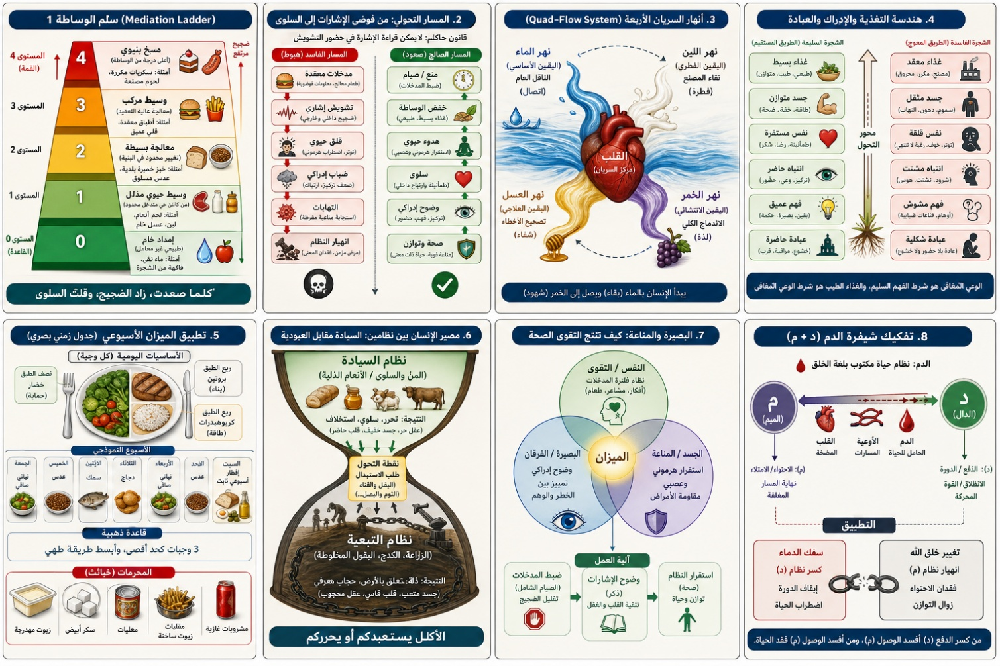
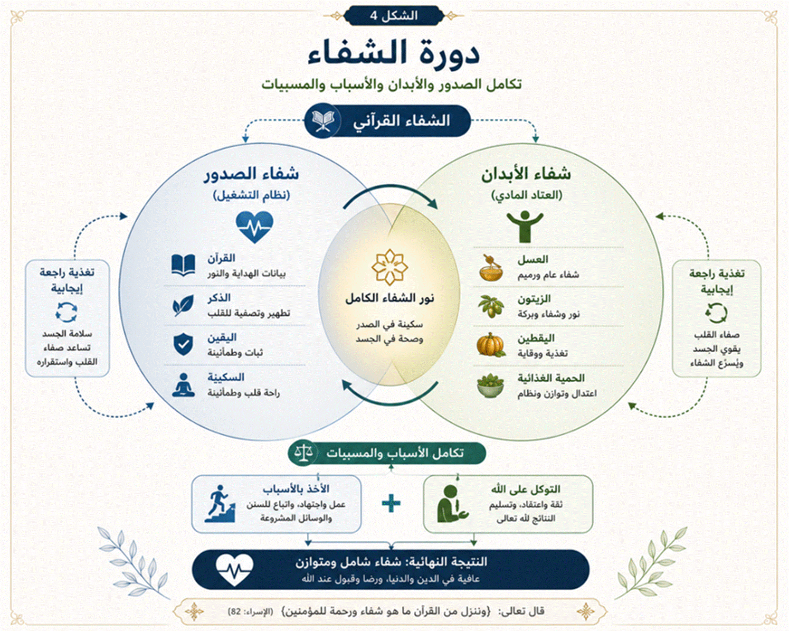
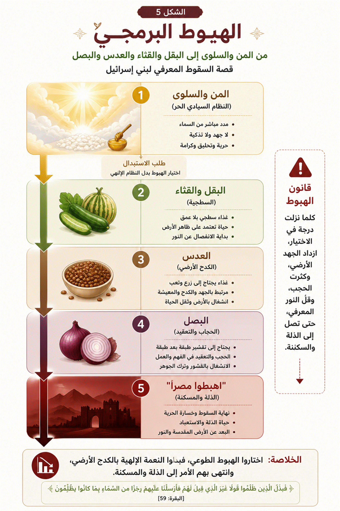
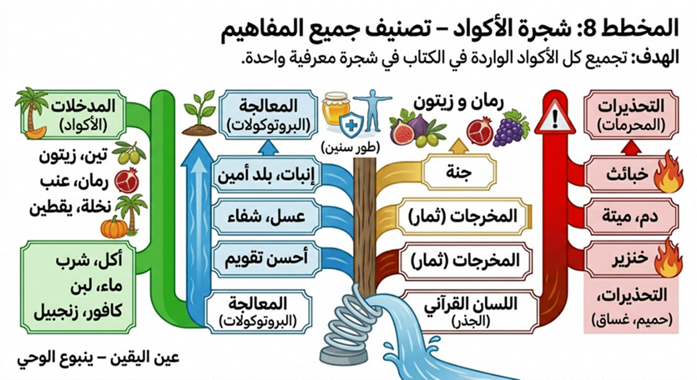
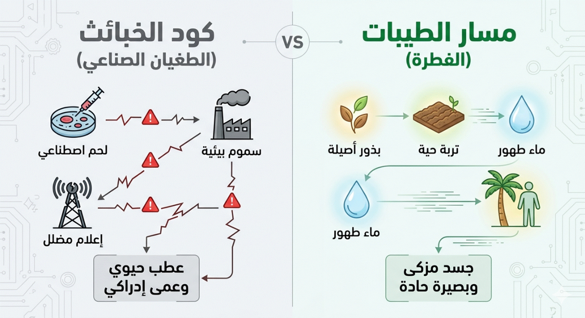
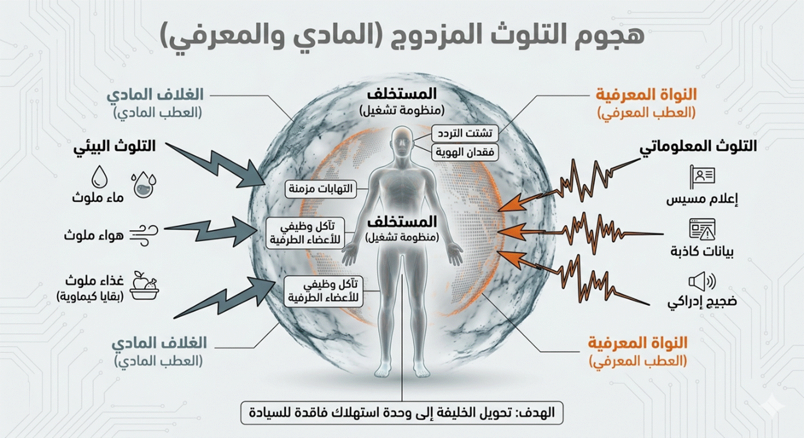
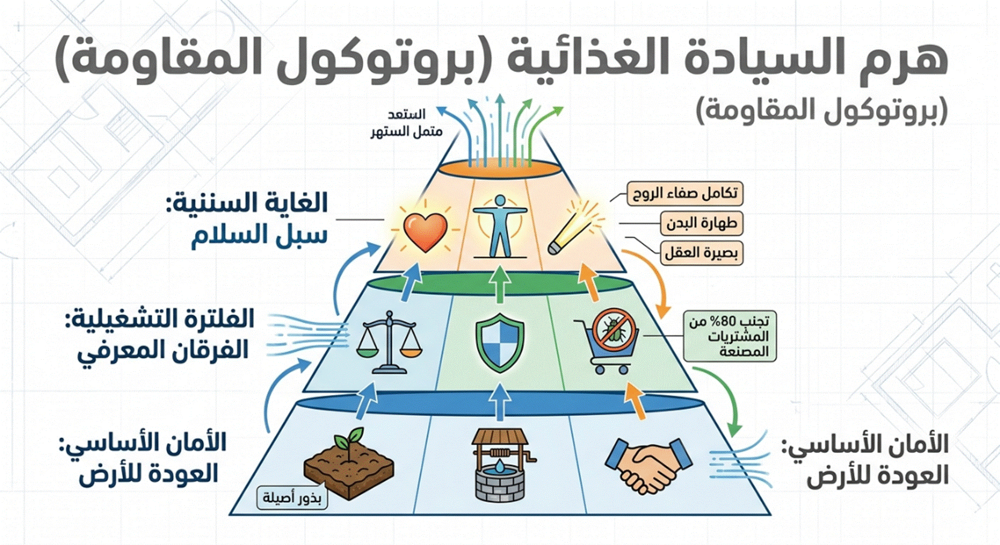
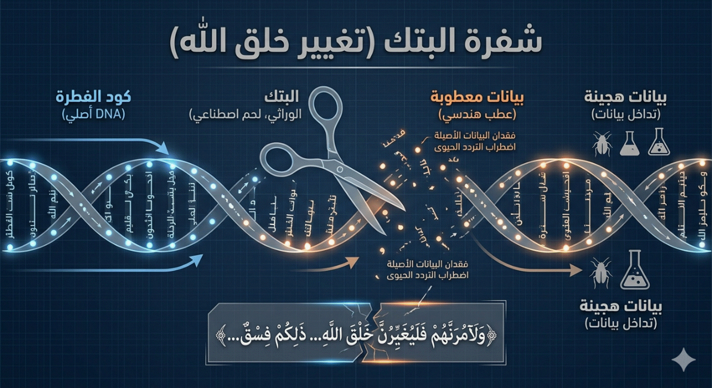
المخطط البصري: هندسة الغذاء القرآني: من المادة إلى البصيرة إلى الاستخلاف"
كيف تتحول المفردة القرآنية إلى نظام
تشغيل حضاري
هذا المخطط يبين كيف تتحول الكلمة
الغذائية في القرآن من معناها الحسي (الظاهر) إلى معناها الهدائي
(الباطن)، ثم إلى أثرها العملي في سلوك الإنسان ووعيه (المآل التشغيلي)
I.9 الباب الأول:
ميكانيكا الاستيعاب والسريان (الأكل والشرب)
I.9.1 الفصل الأول: نمط التغذية في القرآن: من المادة إلى هندسة الإمداد
الإشكالية المركزية
الوعي المعاصر يتعامل مع “التغذية” في القرآن بوصفها:
مواد تُؤكل (لحم، نبات، منّ، سلوى)
بينما يغيب عنه أن النص لا يؤسس “قائمة طعام”، بل:
يبني نظامًا متكاملًا للإمداد
وهذا الاختزال يؤدي إلى المسار التالي:
اختلال المفهوم
↓
اضطراب القراءة
↓
تشوش المنهج
↓
تشوه الوعي الغذائي
↓
انحراف السلوك (إفراط/حرمان/قلق)
أولاً: إعادة تعريف التغذية في
اللسان القرآني
التغذية ليست:
إدخال مادة إلى الجسد
بل:
نظام إمداد يُحقق بقاء الجسد واستقرار النفس وتحرر الوعي بأقل احتكاك ممكن
أي أن السؤال القرآني ليس:
ماذا تأكل؟
بل:
كيف يصل إليك ما يبقيك؟ وبأي كلفة؟ وبأي أثر نفسي؟
ثانياً: المفاهيم المؤسسة لنمط
التغذية
سنحلل ثلاث عقد مركزية:
- المنّ
- السلوى
- الأنعام
ليس كأشياء، بل كـ وظائف داخل النظام
- المنّ:
كسر الوساطة
التعريف الشائع
طعام سماوي حلو.
منطقة الالتباس
اختزاله في “مادة”.
التحليل اللغوي (م-ن-ن)
يدل على:
القطع / الإعطاء الذي لا يسبقه مقابل
التعريف التأصيلي
المنّ: نمط إمداد يُكسر فيه تسلسل الأسباب، فيصل الرزق دون تعقيد وسائطي
- السلوى:
سقوط القلق
التعريف الشائع
طائر يُؤكل.
منطقة الالتباس
تحويله إلى “بروتين”.
التحليل اللغوي (س-ل-و)
يدل على:
زوال التعلّق المقلق
التعريف التأصيلي
السلوى: حالة استقرار نفسي تنتج عن تحقق الكفاية دون تهديد
- الأنعام:
السبب المذلّل
التعريف الشائع
الإبل والبقر والغنم.
منطقة الالتباس
حصرها في الحيوان.
التحليل اللغوي (ن-ع-م)
يدل على:
الانسياب والملاءمة
التعريف التأصيلي
الأنعام: بنية سببية منخفضة المقاومة، عالية الانقياد، متعددة النفع
ثالثاً: تركيب النظام الغذائي
القرآني
الآن لا ننظر لكل مفهوم منفردًا، بل كشبكة:
المخطط البنيوي
المستوى الأول: نمط الإمداد
- إمداد مباشر (المنّ)
- إمداد سببي مذلّل (الأنعام)
- إمداد سببي مركّب (الزرع)
↓
المستوى الثاني: بنية الوساطة
- معدومة تقريبًا
- قليلة
- عالية
↓
المستوى الثالث: الكلفة
- منخفضة جدًا
- منخفضة
- مرتفعة
↓
المستوى الرابع: الأثر النفسي
- سلوى (استقرار)
- راحة نسبية
- قلق/انشغال
المعادلة المركزية
كلما انخفضت الوسائط، انخفض القلق، وارتفع الاستقرار
وهذا هو قانون:
التغذية كتحرير لا كإشغال
رابعاً: إعادة قراءة قصة بني
إسرائيل غذائيًا
النص لا يروي “تذمرًا من الطعام”، بل يكشف:
انهيار في اختيار نمط التغذية
الوضع الأصلي
- منّ → إمداد مباشر
- سلوى → استقرار نفسي
- انخفاض القلق
- قابلية للترقي
التحول
طلب:
- بقل
- قثاء
- عدس
- بصل
وهذا ليس تغيير “مكونات”، بل:
تحول من نظام إمداد منخفض الوساطة إلى نظام عالي الوساطة
المخطط التحولي
إمداد مباشر
↓
كفاية
↓
سلوى
↓
تحرر
↓
طلب التنويع
↓
عودة للوسائط
↓
ارتفاع الكلفة
↓
انشغال بالبقاء
خامساً: جدول تحليلي شامل
|
المفهوم |
المعنى اللغوي |
المعنى التراثي |
المعنى المعاصر |
المعنى التأصيلي |
|
المنّ |
قطع/إعطاء |
طعام سماوي |
مادة غذائية |
إمداد بلا وساطة |
|
السلوى |
زوال الهم |
طائر |
بروتين |
استقرار ناتج عن الكفاية |
|
الأنعام |
انسياب/ملاءمة |
حيوانات |
ثروة |
سبب مذلّل منخفض الكلفة |
|
الزرع |
نمو تدريجي |
فلاحة |
غذاء نباتي |
نظام عالي الوساطة |
سادساً: القانون القرآني للتغذية
يمكن صياغته بدقة:
نمط التغذية لا يُقاس بنوع الطعام، بل بدرجة الوساطة وكلفة الحصول عليه وأثره على النفس
سابعاً: الأثر المنهجي على الفهم
المعاصر
هذا يعيد بناء الوعي الغذائي بالكامل:
1. التغذية ليست “سعرات”
بل:
علاقة بين الإنسان ونمط الإمداد
2. المشكلة ليست “ماذا نأكل”
بل:
كيف نحصل عليه؟ وبأي احتكاك؟
3. الصحة ليست جسدية فقط
بل:
حالة سلوى (استقرار شامل)
المخطط النهائي
اختلال نمط الإمداد
↓
ارتفاع الوساطة
↓
زيادة الاحتكاك
↓
قلق مستمر
↓
اضطراب نفسي وجسدي
↓
إصلاح نمط الإمداد
↓
خفض الوساطة
↓
انسياب الرزق
↓
سلوى
↓
تحرر وظيفي
الخاتمة: التحول المنهجي المقترح
بدلاً من البحث عن:
“النظام الغذائي الأمثل”
يقترح اللسان القرآني:
إعادة هندسة علاقة الإنسان بالإمداد
وذلك عبر:
- تقليل الوسائط غير الضرورية
- العودة إلى الأنماط المذلّلة (أنعام/طيبات)
- تجنب التعقيد الزائد في الحصول على الغذاء
- إدراك أن السكينة جزء من التغذية
الصياغة الجامعة
التغذية في القرآن ليست ما يدخل الجسد، بل كيف يُدار وصول ما يُبقي الجسد دون أن يستهلك النفس
I.9.2 الفصل
الثاني: التغذية بين تزكية النفس وتفعيل الجسد
الفصل التمهيدي: التغذية بين تزكية النفس وتفعيل
الجسد
فصل تأسيسي في هندسة المدخلات
وبناء الاستجابة الإنسانية
الإشكالية المركزية
الوعي المعاصر يتعامل مع الإنسان
ككائن مزدوج مفكك:
روح تُغذّى بالوعظ، وجسد يُغذّى
بالطعام.
فينشأ عن ذلك اضطراب بنيوي عميق:
فصل المدخلات
↓
ازدواج في التوجيه
↓
اختلال في القرار
↓
تشوه في السلوك
↓
تدهور في الصحة (نفسًا وجسدًا)
بينما يقدّم اللسان القرآني تصورًا
مغايرًا:
الإنسان وحدة تشغيلية متكاملة،
تُبنى عبر ضبط المدخلات لا عبر تقسيم الكيانات.
أولاً: تفكيك المفاهيم المؤسسة
1. التغذية (Nutrition as Input System)
|
البعد |
المحتوى التشغيلي |
|
التعريف الشائع |
إمداد الجسد بالطاقة عبر الطعام
والشراب (منظور مادي بحت). |
|
مناطق الاختزال |
حصرها في السعرات، وإغفال أثر
"المعنى" والفكر كمدخلات موازية تؤثر في الكيمياء الحيوية. |
|
التحليل البنيوي |
الجذر (غ-ذ-و) يحيل إلى
الإمداد المستمر الذي يبني ويُنمّي الكيان كلياً (مادياً ومعنوياً). |
|
التعريف التأصيلي |
التغذية = منظومة المدخلات
الكلية التي تُمدّ الإنسان بما يُبقيه، ويُشكّل
وعيه، ويُوجه بوصلته. |
|
الأثر المنهجي |
ينتقل السؤال من: "ماذا
نأكل؟" إلى: "ما هي طبيعة الإشارات التي نُدخلها إلى نظامنا
الآن؟" |
2. النفس (The Processing Center)
|
البعد |
المحتوى التشغيلي |
|
التعريف الشائع |
كيان أخلاقي مجرد يُوصف بالصلاح أو
الفساد (منظور وعظي). |
|
مناطق الاختزال |
فصلها عن القرار المادي والسلوك
اليومي، وحصرها في دائرة التمنيات الأخلاقية. |
|
التحليل القرآني |
هي موضع "الإلهام
والاختيار"؛ أي أنها "المعالج المركزي" (CPU)
الذي يتلقى الإشارات ويقرر الوجهة. |
|
التعريف التأصيلي |
النفس = مركز المعالجة واتخاذ
القرار الناتج عن تفاعل المدخلات مع نظام القيم
الداخلي. |
|
الأثر المنهجي |
تزكية النفس ليست "درساً
دينياً"، بل هي "إعادة برمجة" لمركز القرار عبر فلترة
المدخلات. |
3. التزكية (Optimization
& Calibration)
|
البعد |
المحتوى التشغيلي |
|
التعريف الشائع |
التطهير من الذنوب (منظور
سلبي/تخليصي فقط). |
|
مناطق الاختزال |
إهمال البعد النمائي والوظيفي؛
فالتزكية ليست مجرد "تنظيف" بل هي "تطوير". |
|
التحليل البنيوي |
الجذر (ز-ك-و) يجمع بين: الطهارة
+ النماء + الصلاحية للاستعمال. |
|
التعريف التأصيلي |
التزكية = عملية تحسين الأداء (Optimization) الكلية للنفس لجعلها صالحة
للتشغيل الصحيح. |
|
الأثر المنهجي |
التزكية هي "الحالة
التشغيلية المثلى"، وهي نتيجة حتمية لضبط المدخلات واستقامة المسار. |
4. الجسد (The Execution Interface)
|
البعد |
المحتوى التشغيلي |
|
التعريف الشائع |
آلة بيولوجية مستقلة تحتاج صيانة
دورية (منظور ميكانيكي). |
|
مناطق الاختزال |
فصل الجسد عن "أوامر
النفس"، واعتباره المسؤول الوحيد عن المرض أو الصحة. |
|
التحليل القرآني |
الجسد هو "مجال
التنفيذ"؛ لذا يخاطب الله النفس (المحرك) بـ "كلوا واشربوا"
ليتحرك الجسد تبعاً لذلك. |
|
التعريف التأصيلي |
الجسد = واجهة التنفيذ المادية التي تُترجم قرارات النفس (المعالج) إلى أفعال ونتائج ملموسة. |
|
الأثر المنهجي |
صحة الجسد ليست غاية، بل هي "جاهزية
الواجهة" لتنفيذ المهمة السيادية للإنسان في الأرض. |
خلاصة القسم:
أنت لست مجرد آكلة طعام؛ أنت "نظام
معلوماتي حيوي"؛ مدخلاته (تغذية)، ومعالجه (نفس)، ومعايرته (تزكية)،
ومجال تنفيذه (جسد). أي خلل في "التعريف" سيؤدي حتماً إلى خلل في
"التشغيل".
ثانياً: إعادة تركيب العلاقة (النموذج البنيوي)
القرآن لا يخاطب "روحًا" و"جسدًا" منفصلين، بل يبني مسارًا تشغيليًا
متكاملاً:
مدخلات (معنى + غذاء)
↓
تفاعل داخلي (النفس)
↓
توجيه القرار
↓
سلوك (أكل / عمل / حركة)
↓
نتائج (صحة / فساد / تزكية)
ثالثاً: موقع الغذاء داخل
المنظومة السيادية
في هذا المستوى، ننتقل من نظرة
"خبير التغذية" إلى نظرة "مهندس النظم القرآنية" لنعيد وضع
الغذاء في مكانه الصحيح:
|
البعد |
التعريف الشائع |
الإشكال المنهجي |
القراءة القرآنية البنيوية |
|
الغذاء |
مسألة بيولوجية بحتة تتعلق بالصحة
والمرض. |
فصل الغذاء عن مسار
"التزكية"، مما يجعله فعلاً مادياً مجرداً من المعنى. |
{كُلُوا مِمَّا فِي الْأَرْضِ
حَلَالًا طَيِّبًا}؛ الغذاء هنا هو "وقود وظيفي" لرحلة الوعي. |
التحليل اللساني للمدخلات:
يضع القرآن معيارين مزدوجين لأي مدخل
مادي:
- حلالاً: (المستوى
القانوني/التحليلي)؛ أي أن المدخل مسموح به في بروتوكول التشغيل البشري وغير
معقّد بتبعات أخلاقية أو حقوقية.
- طيباً: (المستوى الوظيفي/النقي)؛ أي
أن المادة في ذاتها نقية، متوافقة مع الفطرة، وصالحة لدعم عملية التزكية.
التعريف التأصيلي:
الغذاء = مدخل مادي حيوي يخضع لنفس معايير المدخلات المعنوية من حيث التحليل (الحلية) والتنقية
(الطيب)، ليتحول من مجرد طاقة إلى "إشارة بناء".
رابعاً: التداخل الوظيفي بين
التغذية والتزكية
لا يوجد جدار عازل بين ما تأكله وما
تشعر به أو تقرره؛ فالعلاقة بينهما هي علاقة "تغذية راجعة" (Feedback Loop):
- الغذاء الخبيث (المعقد/المصنع/المحرم): يؤدي إلى "ثقل" في النظام الإشاري ← تشويش على النفس ←
ضعف في جودة القرار (الفجور المعرفي).
- الغذاء الطيب (البسيط/النقي/المحلل):
يؤدي إلى "خفة" وتناغم في النظام ← دعم لاتزان النفس ← تعزيز لتقوى
النظام (القدرة على الفرز).
تصحيح المسار (قلب العلاقة):
من الأخطاء المنهجية الظن بأن الطعام
وحده سيصنع إنساناً صالحاً، والحقيقة هي:
- ليس: "كل من أكل طيباً تزكّى
تلقائياً" (نظرة مادية اختزالية).
- بل: "النفس التي تسعى للتزكية تختار
الطيب حتماً، فيدعم هذا الطيب قدرة الجسد على تنفيذ مراد النفس"
(نظرة هندسية شمولية).
خامساً: الجدول التحليلي الجامع
(لوحة التحكم المعرفية)
|
البعد |
التعريف الشائع |
الإشكال (موضع الخلل) |
التعريف التأصيلي (نظام
التشغيل) |
|
التغذية |
طعام للجسد وطاقة. |
الاختزال المادي المحض. |
منظومة مدخلات كلية (إشارات بناء). |
|
النفس |
كيان أخلاقي للوعظ. |
الانفصال عن الواقع العملي. |
مركز المعالجة واتخاذ القرار. |
|
التزكية |
تطهير من الذنوب. |
إغفال البعد النمائي والوظيفي. |
تنقية + نماء + توجيه للأداء الأمثل. |
|
الجسد |
آلة بيولوجية صماء. |
فصل الجسد عن إرادة النفس. |
مجال التنفيذ وواجهة العمل. |
|
الغذاء |
سعرات وبروتين. |
اعتباره مسألة لا دينية/لا فكرية. |
وقود وظيفي يدعم صفاء الإشارة. |
سادساً: مخطط الانحراف (كيف يحدث الفساد؟)
فصل التغذية عن التزكية
↓
تحول الغذاء إلى عادة
↓
ضعف وعي الاختيار
↓
سلوك غير منضبط
↓
اختلال نفسي وجسدي
سابعاً: مخطط التصحيح (كيف يُبنى الإنسان
القرآني؟)
ضبط المدخلات (معنى + غذاء)
↓
تحسين معالجة النفس
↓
اتزان القرار
↓
سلوك منضبط
↓
تزكية + صحة
ثامناً: القاعدة الجامعة
> التزكية لا تُبنى مباشرة، بل
تُنتج من نظام مدخلات صحيح.
وهنا تتكامل الآيتان دلاليًا:
- {قَدْ أَفْلَحَ مَن زَكَّاهَا}
(الشمس: 9) ← النتيجة
- {كُلُوا مِنَ الطَّيِّبَاتِ}
(المؤمنون: 51) ← أحد المسارات
تاسعاً: التحول المنهجي – الخلاصة النهائية
ينبغي الانتقال من خطابين منفصلين:
- خطاب "تزكية النفس"
(وعظي)
- خطاب "الصحة الغذائية"
(تقني)
إلى نموذج موحد: هندسة المدخلات
الإنسانية
حيث يصبح:
- القرآن = موجّه المعنى
- الغذاء = موجّه البنية
- النفس = مركز القرار
- الجسد = ساحة التفعيل
> الإنسان لا يتغذى ليعيش فقط،
بل ليتشكل. وكل مدخل – كلمة أو لقمة – هو لبنة في بناء النفس، والنفس هي التي تقرر
شكل الجسد ومصيره.
I.9.3 الفصل
الثالث: "الطيبات" كمنظومة بنيوية وليست مجرد قائمة غذائية
بعد أن حللنا الأمر بفك الشفرات
(حَلِّلُوا)، ننتقل الآن إلى معيار 'الجودة الوظيفية' في النظام القرآني: مفهوم
(الطيبات). إن 'الطيب' في هندسة اللسان ليس وصفاً انطباعياً، بل هو حالة 'انسجام
وظيفي' تضمن سلامة المدخلات وتوافقها مع نظام التشغيل البشري. هنا، نفكك شفرة
الطيب لنعرف لماذا لا يكفي أن يكون الطعام 'حلالاً' من الناحية القانونية، بل يجب
أن يكون 'طيباً' من الناحية السننية.
مدخل: من "فقه الفتوى"
إلى "فقه السنن"
ساد في الوعي الفقهي التقليدي
التعامل مع قضية الغذاء من زاوية "الفتوى التجزيئية" التي تحصر المسألة
في ثنائية (حلال/حرام) كأحكام قانونية جافة. بيد أن المنهج السنني الذي نعتمده هنا
ينقل "الطيبات" من كونها قائمة "مسموحات" إلى كونها
"منظومة اتزان" كلية. فالحلال هو الإذن القانوني، أما "الطيب"
فهو الشرط الوظيفي الذي يضمن انسجام المادة مع النظام التشغيلي لجسد الإنسان
وفطرته.
أولاً: الشبكة الدلالية للطعام في
القرآن
لا يمكن فهم مفهوم الطعام في القرآن
بمعزل عن جيرانه اللسانيين؛ فالمفردة القرآنية لا تعمل في فراغ، بل ضمن "شبكة
دلالية" محكمة. إن "الطعام" في الرؤية السننية يرتبط بكتلة من
المفاهيم التبادلية:
- الفطرة: بوصفها المرجعية التصميمية
للجسد.
- الفساد: بوصفه الانحراف عن المسار
الوظيفي للمادة (تغيير خلق الله).
- الزينة: بوصفها القيمة الجمالية
والروحية للرزق.
- الإسراف: بوصفه تجاوزاً للحدود
الرياضية التي يحتملها النظام الحيوي.
- التزكية: بوصفها الثمرة النهائية
لتفاعل الغذاء الطيب مع الروح والبدن.
ثانياً: تعريف "الطيب"
لسانياً ووظيفياً
"الطيب" في "فقه
اللسان" ليس مجرد وصف للمذاق أو الحالة الظاهرية، بل هو "حالة انسجام
كلي". هو المادة التي تتوفر فيها "الأصالة" (Originality)
في الخلق والصفاء في الأثر.
إن "الطيب" مفهوم عابر
للمجالات؛ فهناك "الكلمة الطيبة"، و"البلد الطيب"،
و"الريح الطيبة". والجامع بينها هو "الاستقامة على الفطرية والقدرة
على النماء". فالرزق الطيب هو الذي يؤدي وظيفته الحيوية دون أن يترك خلفه
"سموماً" أو "اضطرابات" في نظام الجسم المعقد.
ثالثاً: معايير "الطيب"
البنيوية
لبناء نموذج معرفي حول الغذاء، نضع
معايير بنيوية مستخلصة من السنن الكونية والقرآنية:
- الانسجام مع الفطرة البيولوجية: أن
تكون المادة الغذائية قريبة من أصل خلقتها، بعيدة عن التلاعب الجيني الذي
يربك "شفرات" التعرف في الخلايا البشرية.
- سلامة الأثر المزدوج: الطيب هو ما
يحقق النفع للجسد (طاقة وبناء) وللنفس (سكينة وطهارة)، إذ لا ينفصل أثر
الغذاء المادي عن الحالة الشعورية والسلوكية.
- التوازن الحيوي: مراعاة
"الميزان" في المكونات (ألياف، سكريات، بروتينات) كما أودعها الله
في النبات، دون عزل كيميائي يخل بتركيبتها الأصلية.
- عدم الإفساد التدريجي: المادة الطيبة
لا تراكم ضرراً بعيد المدى، بل تذوب في النظام الحيوي بيسر وسهولة.
رابعاً: "الطيب" في
مواجهة "الخبيث"
يضع القرآن الكريم
"الخبيث" كنقيض بنيوي للطيب؛ والخبيث هو كل ما خرج عن حد الاعتدال أو
شابهُ كدرٌ وظيفي.
- الخبيث لسانياً: هو المرذول والمستقذر، ليس فقط لذاته، بل لأثره.
- الخبيث سننياً: هو المادة التي تحدث
"فوضى" (Entropy) في النظام الحيوي؛ كالمواد المصنعة التي
لا يملك الجسد "بروتوكولاً" للتعامل معها، أو الأغذية الملوثة
بالكيماويات والمبيدات.
إن التمييز بين الطيب والخبيث هو
"بوصلة" تحمي الإنسان من "التدليس الغذائي" المعاصر، حيث قد
يكون الشيء "حلالاً" من حيث المصدر (مذبوحاً مثلاً)، لكنه ليس
"طيباً" من حيث الوظيفة (بسبب الحقن الهرموني أو التغذية الفاسدة).
خلاصة الفصل:
إن استعادة مفهوم
"الطيبات" كمنظومة تشغيلية تعني الانتقال من "الاستهلاك
العشوائي" إلى "الإدارة السننية" للجسد. إنها دعوة للعودة إلى
"الأصل" الذي صممه الخالق، لضمان حياة مستقرة جسدياً وروحياً، بعيداً عن
صخب الصناعة التي أفسدت ميزان الفطرة.
I.9.4 الفصل الرابع: من وهم السيطرة إلى فقه العلاقة
إعادة بناء فهم الجسد في اللسان القرآني
تمهيد
تأسيسي
لا ينشأ الخلل في الوعي المعاصر من غياب المعرفة بقدر ما ينشأ من اضطراب البنية التي تنتظم فيها هذه المعرفة. فالإنسان اليوم لا يجهل جسده، بل يجهل موقعه منه؛ لا يفتقر إلى المعلومات، بل يفتقر إلى النسق الذي يضبط العلاقة بينه وبين ما يسكنه من أنظمة. ومن هنا يتولد خطاب متناقض: ينتقل من إهمال الجسد إلى ادعاء السيطرة عليه، ومن الغفلة عنه إلى وهم التحكم المطلق فيه.
وفي هذا السياق يظهر نمط جديد من الفهم يقدّم الجسد بوصفه منظومة خاضعة بالكامل لإرادة الإنسان، تنتظر أوامره، وتنفذ رغباته، وتستجيب لمشاعره بصورة مباشرة، حتى يصل الأمر إلى اعتبار المرض نتاجًا فكريًا، والشفاء قرارًا ذهنيًا.
هذا التحول لا يمثل تطورًا في الوعي، بل انزياحًا عن البناء السنني الذي يقدمه القرآن، حيث تتحول العلاقة من “تفاعل ضمن نظام” إلى “سيطرة خارج النظام”، ومن “فهم للسنن” إلى “إسقاط للرغبات”.
ومن هنا تتحدد إشكالية هذا الفصل:
كيف تحوّل فهم الجسد من كونه بنية سننية محكومة بقوانين إلى كونه مجالًا خاضعًا لإرادة الإنسان المطلقة، وما أثر هذا التحول على قراءة النص القرآني وعلى الممارسة الوجودية؟
أولاً:
تشكّل المفهوم في الوعي المعاصر
في الخطاب المعاصر، يُعاد تعريف الجسد ضمن تصور تبسيطي يقوم على عناصر متداخلة:
- الجسد = منظومة خلايا (توصف أحيانًا بالجنود أو الملائكة)
- هذه الخلايا تمتلك وعيًا مستقلًا
- تنتظر أوامر الإنسان
- تنفذ ما يُملى عليها عبر الفكر أو الشعور
ويُبنى على ذلك نتائج مباشرة:
- المرض نتيجة أفكار سلبية
- الشفاء نتيجة أوامر داخلية
- التحكم بالجسد يتم عبر “التوجيه الذهني”
هذا البناء، رغم ما يبدو فيه من تحفيز، يقوم على اختزال شديد، حيث يُختزل التعقيد البيولوجي في نموذج إرادي مباشر، ويُختزل النص القرآني في رموز قابلة للإسقاط.
ثانياً:
مناطق الالتباس البنيوي
لفهم الخلل، لا بد من تفكيك هذا التصور ضمن طبقاته:
1. التباس المستوى الدلالي
يتم نقل مفاهيم قرآنية من مجالها الدلالي إلى مجال فيزيائي دون تفكيك، مثل:
- “الملائكة” ← تُفهم كخلايا
- “المرض” ← يُفهم كنتاج فكري مباشر
- “الشفاء” ← يُفهم كاستجابة للأوامر
وهذا النقل يحوّل الرمز إلى مادة، ويُفقد المفهوم بنيته.
2. اختزال السنن
الجسد في هذا الخطاب لا يُفهم كنظام:
- له قوانين
- له توازنات
- له شروط
بل كأداة طيّعة، وهو ما يلغي البعد السنني الذي يؤكد عليه القرآن.
3. تضخيم الذات الإنسانية
يُحمَّل الإنسان قدرة:
- الخلق المباشر للمرض
- التحكم الكامل في الشفاء
وهو ما يتجاوز موقعه في المنظومة، وينقله من “فاعل ضمن السنن” إلى “متحكم بها”.
4. إسقاط القراءة على النص
بدل أن يُستخرج المعنى من النص، يتم:
- تحميل النص مفاهيم جاهزة
- ثم الاستدلال به عليها
فينتج فهم دائري لا يؤسس لمعرفة.
ثالثاً:
تحليل بنيوي لمفاهيم المركز
(أ) مفهوم “المرض”
المرض في اللسان القرآني لا يُختزل في الجسد، بل يتحرك ضمن شبكة دلالية تشمل:
- الاضطراب
- الاختلال
- فقدان التوازن الوظيفي
ويظهر في مستويات متعددة:
- مرض القلب (اضطراب في الإدراك والإرادة)
- المرض الجسدي (حالة ابتلاء أو خلل وظيفي)
الخلل المعاصر يتمثل في:
نقل المرض من كونه “اختلالًا سننيًا” إلى كونه “صناعة ذهنية مباشرة”
(ب) مفهوم “الشفاء”
الشفاء في البنية القرآنية ليس فعلًا ذاتيًا خالصًا، بل نتيجة تفاعل ضمن منظومة:
- سبب
- تهيئة
- تفاعل
- نتيجة
وعندما يُقال:
﴿وإذا مرضت
فهو يشفين﴾
فإن البنية هنا لا تسند الشفاء إلى الإرادة البشرية، بل تضعه ضمن نظام إلهي يتجاوز الفعل الفردي، مع بقاء الإنسان طرفًا فاعلًا ضمن الأسباب.
رابعاً:
إعادة التعريف التأصيلي
انطلاقًا من التحليل السابق، يمكن إعادة بناء المفهوم:
الجسد ليس مجالًا للسيطرة، بل بنية سننية متكاملة، يعمل ضمن قوانين مضبوطة، يتفاعل مع وعي الإنسان دون أن يخضع له خضوعًا مطلقًا.
فالإنسان:
- يؤثر ولا يتحكم
- يشارك ولا يهيمن
- يتفاعل ولا يأمر أمرًا مطلقًا
وهذا الفهم يعيد الجسد إلى موقعه الصحيح:
كجزء من منظومة الخلق، لا كأداة منفصلة عنه.
خامساً:
المسار التحولي للمفهوم
يمكن تمثيل الانحراف في الفهم عبر المسار التالي:
اختلال المفهوم
↓
تضخيم قدرة الإنسان
↓
تفسير المرض كفشل ذاتي
↓
تشوش العلاقة مع الجسد
↓
ممارسات غير منضبطة
وفي المقابل، يؤدي التصحيح إلى:
إعادة تعريف المفهوم
↓
فهم الجسد كنظام سنني
↓
توازن بين الوعي والأسباب
↓
استقرار العلاقة الداخلية
↓
ممارسة صحية منضبطة
سادساً:
جدول التحليل المفاهيمي
|
المفهوم |
المعنى اللغوي |
المعنى التراثي |
المعنى المعاصر |
المعنى التأصيلي |
|
المرض |
اختلال وفساد |
معنوي وجسدي |
نتيجة فكر سلبي |
اضطراب سنني متعدد المستويات |
|
الشفاء |
البرء والعودة |
إزالة العلة |
قرار ذهني |
نتيجة تفاعل ضمن نظام سنني |
|
الجسد |
الكيان المادي |
وعاء النفس |
أداة قابلة للتحكم |
منظومة سننية متكاملة |
سابعاً:
أثر التصحيح على المنهج
إعادة بناء المفهوم لا تبقى نظرية، بل تنتج تحولًا منهجيًا:
- الانتقال من “التحكم” إلى “الفهم”
- من “إصدار الأوامر” إلى “تحقيق التوازن”
- من “الاعتماد على الداخل فقط” إلى “التكامل بين الداخل والخارج”
فيصبح التعامل مع الجسد قائمًا على:
- وعي داخلي
- أخذ بالأسباب
- فهم للسنن
خاتمة:
نحو فقه العلاقة لا وهم السيطرة
إن الأزمة الحقيقية لا تكمن في الجسد، بل في طريقة فهمه. فحين يُفهم خارج سننه، يتحول إلى عبء؛ وحين يُفهم ضمنها، يصبح مجالًا للاتزان.
والقرآن لا يقدم الإنسان كقائد يصدر الأوامر لجسده، بل ككائن يعيش داخل منظومة:
- يتأثر بها
- ويتفاعل معها
- ويهتدي بقوانينها
ومن هنا فإن التحول المنهجي المطلوب هو:
الانتقال من محاولة السيطرة على الجسد إلى بناء فقه العلاقة معه.
وهذا الفقه يقوم على ثلاث ركائز عملية:
- الوعي: فهم الجسد بوصفه نظامًا لا أداة
- السننية: إدراك القوانين التي تحكمه
- التوازن: الجمع بين الداخل (المشاعر/الوعي) والخارج (الأسباب/العلاج)
بهذا فقط يتحرر الإنسان من وهم القدرة المطلقة، ويستعيد موقعه الحقيقي داخل منظومة الخلق، حيث لا يكون سيدًا مطلقًا، ولا عبدًا عاجزًا، بل فاعلًا واعيًا ضمن سنن لا تتخلف.
I.9.5 الفصل الخامس: المنع بوصفه كشفًا — من فوضى الإشارات إلى استعادة الوعي الغذائي
الإشكالية
المركزية
يتحرك الوعي الغذائي المعاصر داخل دائرة مغلقة تُعيد إنتاج نفسها: وفرة في “الأنظمة الغذائية” تقابلها وفرة في الأمراض المزمنة. يظهر هذا التناقض حين نلاحظ أن أنظمة متباينة في ظاهرها — منخفضة الكربوهيدرات، نباتية، متوسطية، إقصائية — تتفق ضمنيًا على خطوة أولى واحدة: الإيقاف قبل الإضافة. غير أن هذه الحقيقة تُقدَّم في الخطاب السائد بوصفها “نصيحة عملية” أو “مرحلة تمهيدية”، دون أن تُفهم بوصفها قانونًا معرفيًا حاكمًا لعملية الفهم والعلاج.
من هنا تنشأ الإشكالية:
كيف يمكن أن تتفق أنظمة متعارضة في توصياتها النهائية على
مبدأ ابتدائي واحد، ومع ذلك يستمر الفشل العلاجي عند كثير من الناس؟
الجواب لا يكمن في تفاصيل الأنظمة، بل في اختلال
تصورنا لمفهوم الغذاء نفسه، ومن ثم اختلال منهج تعاملنا معه.
أولًا:
تفكيك مفهوم “الغذاء” في الوعي المعاصر
التعريف
الشائع
الغذاء: مادة تُؤكل لتزويد الجسد بالطاقة والعناصر اللازمة.
منطقة
الالتباس
يُختزل الغذاء إلى:
- سعرات حرارية
- نسب مغذيات (بروتين/دهون/كربوهيدرات)
- جداول حسابية
هذا الاختزال يُنتج تصورًا ميكانيكيًا للجسد:
“مدخلات × معادلات = نتائج”
غير أن التجربة الواقعية تُفكك هذا النموذج؛ فالغذاء نفسه قد:
- يُنشّط الالتهاب عند شخص
- ويُحسّن الصحة عند آخر
التحليل
البنيوي
هذا التناقض يكشف أن:
- الجسد ليس آلة حسابية
- والغذاء ليس مادة محايدة
بل إن العلاقة بينهما تقوم على مستوى أعمق:
الغذاء يعمل بوصفه نظام إشارات، لا مجرد طاقة
كل لقمة تحمل:
- أوامر هرمونية
- توجيهات أيضية
- تأثيرات على الميكرو بيوم
- استجابات مناعية
وبالتالي فإن اختزال الغذاء إلى “سعرات” هو اختزال يُعطّل فهم وظيفته الحقيقية.
ثانيًا:
من الطعام إلى الإشارة — إعادة تعريف تأصيلية
التعريف
التأصيلي المقترح
الغذاء هو منظومة إشارات تدخل الجسد فتُعيد تشكيل حالته الوظيفية
في ضوء هذا التعريف:
- ليست المشكلة في “كم تأكل” فقط
- بل فيما الذي تقوله هذه اللقمة لجسدك
فتتحول الأسئلة من:
- كم سعرة؟
- كم وجبة؟
إلى:
- ماذا تُفعل هذه اللقمة في داخلي؟
- أي مسار تُنشّط؟
- هل تُشعل الالتهاب أم تُطفئه؟
ثالثًا:
تشخيص الخلل — فوضى الإشارات
حين تتعدد المدخلات دون وعي بوظيفتها، ينشأ ما يمكن تسميته:
التشويش الإشاري
حيث تتراكم إشارات متضاربة:
- طعام يُحفّز الالتهاب
- يليه طعام مضاد
- ثم محفز آخر
- في بيئة هرمونية غير مستقرة
في هذه الحالة:
- لا تظهر العلاقة بين السبب والأثر
- تختفي دلالة الأعراض
- يتحول الجسد إلى “نظام ضوضاء”
وهنا تتشكل الحلقة التالية:
اختلال مفهوم الغذاء
↓
تشويش إشاري
↓
فقدان القدرة على التمييز
↓
التهاب صامت
↓
أعراض مبهمة
↓
البحث عن “نظام جديد”
↓
إعادة إنتاج الخلل
رابعًا:
المنع — من الحرمان إلى الكشف
التعريف
الشائع
المنع: الامتناع عن بعض الأطعمة
الالتباس
يُفهم المنع على أنه:
- حرمان
- تضييق
- إجراء قاسٍ مؤقت
التحليل
البنيوي
غير أن الملاحظة الدقيقة تكشف أن جميع الأنظمة العلاجية الناجحة تبدأ به، لا لذاته، بل لوظيفته.
التعريف
التأصيلي
المنع هو إجراء معرفي يهدف إلى عزل المتغيرات وكشف العلاقة بين الغذاء واستجابة الجسد
فهو ليس:
- غاية
- ولا علاجًا بذاته
بل هو:
- أداة كشف
- وسيلة لإزالة الضوضاء
خامسًا:
قانون رفع التشويش
يمكن صياغة هذا المبدأ في صورة قانون حاكم:
لا يمكن قراءة الإشارة الحيوية في حضور التشويش الغذائي
بناءً عليه:
- لا يمكن فهم تأثير الطعام مع استمرار إدخال محفزات متعددة
- لا يمكن تشخيص المشكلة مع بقاء المهيجات
- لا يمكن بناء نظام شخصي دون مرحلة كشف
سادسًا:
كيف يعمل المنع وظيفيًا؟
حين يتم إيقاف المهيجات لفترة كافية، يحدث تحول تدريجي داخل الجسد:
- انخفاض مستويات الالتهاب
- هدوء الجهاز الهضمي
- إعادة توازن الميكرو بيوم
- تحسن الحساسية الهرمونية
- استعادة وضوح الإشارات
وهنا يحدث التحول الجوهري:
من جسد “مشوش” إلى جسد “قارئ”
فتصبح الأعراض:
- ليست عشوائية
- بل رسائل قابلة للفهم
سابعًا:
الصيام — أعلى أشكال الإيقاف
إذا كان المنع إيقافًا نوعيًا (إيقاف أنواع معينة من الطعام)، فإن الصيام يمثل:
الإيقاف الكلي لتدفق الإشارات
التعريف
التأصيلي للصيام
الصيام هو تعطيل مؤقت للإدخال الخارجي لإعادة تفعيل أنظمة المعالجة الداخلية
وظيفته ليست:
- الحرمان
- ولا مجرد خفض السعرات
بل:
- إعادة ضبط الحساسية
- تفعيل آليات الإصلاح
- استعادة القدرة على التمييز بين:
- الجوع الحقيقي
- والرغبة النفسية
ثامنًا:
إعادة الإدخال — من المنع إلى المعرفة
المنع وحده لا يكفي، لأنه:
- يُسكت الضوضاء
- لكنه لا يكشف تفاصيل العلاقة
هنا تأتي المرحلة الحاسمة:
إعادة الإدخال
وظيفتها
- اختبار كل عنصر على حدة
- مراقبة استجابة الجسد
- بناء معرفة سببية
القاعدة
الحاكمة
كل عرض يظهر بعد الإدخال هو بيان وظيفي لا مشكلة
فمثلًا:
- الانتفاخ → تخمر أو عدم تحمل
- الخمول → استجابة أيضية غير متوازنة
- الطفح → تفاعل مناعي
وبذلك يتحول الجسد إلى:
نظام تشخيص ذاتي
تاسعًا:
بناء النظام الشخصي
هنا يحدث التحول النهائي:
من:
- البحث عن “أفضل نظام”
إلى:
- بناء نظام خاص
هذا النظام لا يُستورد، بل يُبنى عبر:
- المنع (رفع التشويش)
- الاستعادة (وضوح الإشارات)
- الإدخال (اختبار العناصر)
- الفهم (تحليل الاستجابة)
عاشرًا:
جدول التحول المفاهيمي
|
البعد |
المعنى الشائع |
المعنى التأصيلي |
|
الغذاء |
سعرات |
إشارات |
|
النظام |
حمية جاهزة |
آلية ضبط إشاري |
|
المنع |
حرمان |
أداة كشف |
|
الصيام |
عبادة/دايت |
إعادة ضبط إدراكي-وظيفي |
|
الأعراض |
مشكلة |
رسالة |
الحصيلة
المنهجية
ما يتكشف عبر هذا التحليل أن المشكلة لم تكن يومًا في:
- نقص المعلومات
- ولا في غياب الأنظمة
بل في:
غياب المنهج الذي يُمكّن من قراءة العلاقة بين الإنسان وغذائه
الخاتمة:
من الأكل إلى الفهم
التحول الحقيقي لا يبدأ حين نُغيّر ما نأكله، بل حين نُغيّر كيف نفهم ما نأكله.
فلا يعود السؤال:
ماذا آكل؟
بل يتحول إلى:
ماذا يجب أن أوقف لأفهم؟
ثم:
كيف يقرأ جسدي ما أدخله؟
ثم:
كيف أبني نظامي الذي ينسجم مع بنيتي؟
وعند هذه النقطة فقط، ينتقل الإنسان من:
- مستهلك لأنظمة
إلى: - صانع لمنهجه
ومن:
- متلقٍ للتوصيات
إلى: - قارئ لإشارات جسده
وهنا يبدأ الشفاء، لا بوصفه نتيجة طارئة، بل بوصفه أثرًا طبيعيًا لفهمٍ صحيح.
I.9.6 الفصل
السادس: قانون خفض الوساطة – من الضجيج إلى الوضوح
*إضافة: نظرية خفض الوساطة كقانون
مركزي، سلم الوساطة، بصمة الوساطة*
الإشكالية المركزية
بعد أن أسسنا في الفصل السابق أن
الغذاء يعمل بوصفه نظام إشارات، وأن المنع هو أداة كشف لرفع
التشويش، يبقى سؤال جوهري لم يُحسم بعد:
> بأي معيار نختار ما نأكله
قبل أن نصل إلى مرحلة الكشف الشخصي؟
الإنسان المعاصر لا يعيش في معماء. أمامه وفرة هائلة من الأطعمة، بعضها يبدو
"طبيعيًا" وبعضها "مصنعًا"، لكن الخط الفاصل بينهما ليس
دائمًا واضحًا. هنا تبرز الحاجة إلى قانون حاكم يسمح لنا بتمييز – بشكل
مبدئي – أي الأطعمة أقرب إلى الصفاء وأيها أبعد.
هذا القانون هو ما نسميه:
> قانون خفض الوساطة (Low-Mediation Law)
أولاً: تعريف الوساطة (Mediation)
التعريف الشائع
الوساطة: عدد المراحل أو العمليات
التي تمر بها المادة الغذائية منذ أصلها الطبيعي حتى تصل إلى فم الإنسان.
منطقة الالتباس
يُختزل مفهوم الوساطة أحيانًا إلى
"الطعام الطبيعي مقابل المصنع"، وهذا اختزال يخلط بين:
- الوساطة الطبيعية (مثل: حلب
اللبن، طهي اللحم، عصر الزيتون)
- الوساطة الصناعية (المضافات،
المكررات، المعالجة الكيميائية)
الفرق بينهما جوهري: الأولى تحافظ
على الإشارات أو تعيد ترتيبها، والثانية تُدخل إشارات دخيلة لا يعرفها الجسد.
التحليل البنيوي
كل وسيط يضيف طبقة من "الضجيج
المحتمل" إلى النظام. فكلما زاد عدد الوسائط:
- زادت احتمالية تلوث الإشارة
الأصلية
- زادت كلفة المعالجة الحيوية (هضم،
استقلاب، تصفية)
- زاد الحمل على جهاز المناعة
والجهاز العصبي
التعريف التأصيلي
> الوساطة في الغذاء: عدد
المراحل الفاصلة بين أصل المادة الطبيعي ووصولها إلى جسد الإنسان، مضروبًا في درجة
التدخل (طبيعي / صناعي / مركب) في كل مرحلة.
ثانياً: سلم الوساطة (Mediation Ladder)
|
المستوى |
طبيعة الإمداد |
الأمثلة النوعية |
بصمة الوساطة |
طبيعة الإشارة (Signaling) |
|
0 |
إمداد خام (Direct) |
ماء نقي، فاكهة من الشجرة، خضار
ورقي |
شبه معدومة |
إشارة بكر: اتصال مباشر بمصدر الوجود |
|
1 |
وسيط حيوي (Biological) |
لحم أنعام، لبن، بيض، عسل، زيت بكر |
منخفضة |
إشارة مكثفة: بيانات مصفاة وجاهزة |
|
2 |
معالجة بسيطة (Home-cooked) |
خبز خميرة بلدية، أرز، بقوليات
مسلوقة |
متوسطة |
إشارة مركبة: تحتاج طاقة معالجة معتدلة |
|
3 |
معالجة تقنية (Industrial) |
سكر/دقيق أبيض، زيوت مكررة، تعليب |
عالية جداً |
ضجيج (Noise): إشارات مشتتة للنظام |
|
4 |
مسخ بنيوي (Ultra-processed) |
غازيات، نقانق، مقليات، محليات
صناعية |
شديدة الارتفاع |
تزييف إشاري: تضليل كيميائي يقود للإدمان |
مخطط سلم الوساطة:
المستوى 0 (أدنى وساطة)
↓
المستوى 1 (وسيط مذلَّل)
↓
المستوى 2 (معالجة بسيطة)
↓
المستوى 3 (معالجة صناعية)
↓
المستوى 4 (أعلى وساطة)
القانون الحاكم:
> كلما صعدت في سلم الوساطة، زاد
الضجيج الإشاري، وارتفع الحمل على النظام الحيوي، وانخفضت جودة الاستفادة.
ثالثاً: بصمة الوساطة (Mediation Footprint)
التعريف
> بصمة الوساطة هي مقياس
تراكمي لعدد الوسائط التي مر بها الغذاء، مضروبًا في درجة تدخل كل وسيط، مقسومًا
على قرب المصدر من حالته الطبيعية.
بصيغة مبسطة:
> بصمة الوساطة = (عدد
الوسائط) × (متوسط درجة التدخل) ÷ (النقاء الأصلي)
كلما زادت البصمة، زاد احتمال أن
يكون الغذاء مصدرًا للالتهاب والتشويش.
مثال عملي:
|
نوع الغذاء |
عدد الوسائط (N) |
درجة التدخل (D) |
بصمة الوساطة (N×D) |
الحالة التصنيفية |
|
تفاحة طازجة (من الشجرة) |
0 |
0.0 |
0.0 |
غذاء خام أصيل |
|
تفاحة من السوق (تقليدية) |
2 |
0.2 |
0.4 |
تدخل منخفض (لوجستي) |
|
عصير تفاح صناعي |
4 |
0.8 |
3.2 |
غذاء معالج |
|
لحم بقري (مزرعة عضوية) |
1 |
0.3 |
0.3 |
تدخل أدنى |
|
لحوم مصنعة (سجق) |
6 |
1.5 |
9.0 |
غذاء فائقة المعالجة (UPF) |
رابعاً: قانون خفض الوساطة (Low-Mediation Law)
الصياغة المركزية
> أعلى صور الغذاء جودةً هي
تلك التي تحقق أقصى فائدة بأقل وساطة.
أي:
> القيمة الغذائية الحقيقية =
(الفائدة الخام) ÷ (بصمة الوساطة)
تطبيق القانون على نماذج غذائية:
|
نوع الغذاء |
الفائدة الخام (B) |
بصمة الوساطة (M) |
معامل الفقد (B ×
M) |
القيمة الحقيقية (V) |
|
عسل طبيعي (خام) |
10 |
0.2 |
2.0 |
8.0 (عالية جدًا) |
|
عسل مبستر (مسخن) |
10 |
0.8 |
8.0 |
2.0 (منخفضة) |
|
زيت زيتون بكر ممتاز |
9 |
0.3 |
2.7 |
6.3 (عالية) |
|
زيت نباتي مكرر |
4 |
1.5 |
6.0 |
-2.0 (سلبية/ضارة) |
قاعدة التشغيل اليومي:
> عند الاختيار بين غذائين متشابهين من حيث الفائدة الظاهرية، اختر دائمًا صاحب
البصمة الأدنى.
خامساً: تطبيق قانون خفض الوساطة على
البروتوكولات العملية
1. في الشراء:
اسأل:
- كم مرحلة مر بها هذا الطعام؟
- هل تغير شكله الأصلي بشكل كبير؟
- هل يحتوي على مواد لا أعرف أصلها؟
2. في التحضير:
- اختر أبسط طريقة طهي تحقق الوظيفة
(سلق، شوي، طبخ بسيط بدل القلي العميق أو الوصفات المعقدة)
- قلل عدد المكونات في الوجبة
الواحدة (التنوع الزائد يُصعِّد الوساطة)
3. في الاستهلاك:
- ركز على المستويات 0 و1 و2 من سلم
الوساطة
- استخدم المستوى 3 (معالجة بسيطة)
كمساعد لا كأساس
- تجنب المستوى 4 تمامًا في النظام
اليومي (استثناءات نادرة جدًا)
سادساً: قانون خفض الوساطة والمنع – علاقة
تكاملية
|
وجه المقارنة |
المنع (Prevention) |
خفض الوساطة (Mediation
Reduction) |
|
الطبيعة الوظيفية |
أداة كشف مؤقتة (إيقاف/ترشيح) |
معيار اختيار دائم
(انتقاء/تأصيل) |
|
النطاق الزمني |
علاج للماضي والحاضر (تشخيصي) |
صيانة للمستقبل (بنائي وقائي) |
|
تأثير الضجيج |
يزيل التشويش الحالي (Noise
Cancellation) |
يمنع تولد التشويش أصلاً (Signal
Purity) |
|
مستوى المعالجة |
معالجة الأعراض (Surface
Level) |
معالجة الجذور والأساسات (Root
Level) |
|
نوع الطاقة المستهلكة |
طاقة استنزافية (مراقبة مستمرة) |
طاقة استثمارية (بناء النظام
مرة واحدة) |
> المنع يعالج فوضى الإشارات
الحالية، وخفض الوساطة يمنع نشوء فوضى جديدة.
سابعاً: الجدول الختامي – من الضجيج إلى الوضوح
الجدول الختامي: هندسة الاسترداد
(من الضجيج إلى الوضوح)
|
البعد التكويني |
نمط عالي الوساطة (الضجيج) |
نمط منخفض الوساطة (الوضوح) |
الحالة الإشارية |
|
الغذاء |
معالج، مكرر، معلب، سكر أبيض |
طازج، كامل، عضوي، طبيعي |
تلوث المصدر vs نقاء المادة |
|
عدد الوسائط |
كثير (4+) |
قليل (0-2) |
تشتت البيانات vs تركيز الفائدة |
|
المعالجة |
صناعية، حرارية، كيميائية |
طبيعية، يدوية، بسيطة |
مسخ البنية vs حفظ الأمانة |
|
التأثير الجسدي |
التهابات، إرهاق، أعراض مبهمة |
صفاء، طاقة مستقرة، ترميم |
تشويش حيوي vs تدفق متزن |
|
التأثير النفسي |
قلق، تشتت، تقلبات مزاجية |
سلوى، طمأنينة، استقرار |
اضطراب النفس vs سكينة الروح |
|
المآل النهائي |
فوضى إشارية وأمراض |
وضوح إدراكي وصحة |
انهيار النظام vs إحكام البناء |
الخاتمة العملية
> كل لقمة ليست مجرد سعرات، بل
هي حزمة من الوسائط. كل وسيط إضافي هو باب إضافي للتشويش. طريق الوضوح يبدأ بخفض
الوساطة إلى أدنى حد ممكن، ثم اختبار ما تبقى، ثم بناء نظامك الشخصي على ما تبقى
من إشارات واضحة.
بهذا القانون، يمتلك القارئ مقياسًا
كميًا – أو شبه كمي – يمكنه من ترتيب الأطعمة حسب أولويتها، حتى قبل أن يجربها على
جسده. وهذا هو الانتقال من الفوضى إلى الوضوح، ومن الغذاء كصندوق أسود إلى
الغذاء كنظام قابل للهندسة.
قائمة الطيبات المذلّلة: كيف
تميّز الغذاء داخل الواقع المعاصر
الإشكالية المركزية
المشكلة اليوم ليست نقص “الطعام الطبيعي”، بل:
تخفي الوساطة داخل مظهر “الطبيعي”
أي أن كثيرًا مما يبدو بسيطًا هو في الحقيقة:
وسيط مركّب مقنّع
أولاً: إعادة تعريف "الطيبات"
التعريف الشائع
طعام لذيذ أو حلال.
الاختزال
ربط الطيب بـ:
- الطعم
- أو الحكم الفقهي فقط
التعريف التأصيلي
الطيب: ما كان منخفض الوساطة، واضح البنية، سريع الاندماج، قليل الضجيج بعد الاستهلاك
المعيار الحاسم
الطيب يُقاس بأثره بعد الأكل، لا بطعمه قبله
ثانياً: مصفوفة التمييز (كشف
الوسائط الخفية)
بدلاً من قائمة جامدة، نستخدم مصفوفة تحليل:
|
سؤال الفحص |
دلالة الإجابة |
المعيار |
|
كم مرحلة مرّ بها؟ |
كلما زادت → ارتفع التشويش |
عدد الوسائط |
|
هل أعرف أصله مباشرة؟ |
الغموض = وسيط خفي |
وضوح المصدر |
|
هل تغير شكله الأصلي؟ |
التحويل العالي = تعقيد |
درجة التحويل |
|
هل يعيش طويلاً بشكل غير طبيعي؟ |
طول مبالغ فيه = تدخل |
زمن الصلاحية |
|
هل أشعر بثقل/خمول/رغبة إضافية؟ |
نعم = ضجيج |
الأثر بعد الأكل |
ثالثاً: تصنيف الطيبات المذلّلة
1. الطيبات المباشرة (أدنى وساطة)
- ماء
- ثمار طازجة
- أطعمة في صورتها الأصلية
الخصائص:
اندماج سريع
لا تحتاج تفسيراً للجسد
2. الطيبات المذلّلة (وسيط ذكي)
- منتجات الأنعام (لبن، لحم، شحم)
- بيض
- بعض الأطعمة البسيطة المعالجة
الخصائص:
معالجة مسبقة طبيعية
كثافة غذائية
استقرار في الإمداد
3. الطيبات المقبولة (وساطة محدودة)
- أطعمة مطبوخة ببساطة
- حبوب أو خضار لكن بدون تعقيد
الخصائص:
تحتاج جهدًا، لكن ضمن السيطرة
4. غير الطيبات (وساطة عالية)
- المنتجات الصناعية
- الأطعمة متعددة المكونات
- السكريات المصنعة
الخصائص:
ضجيج
إدمان
فقدان السلوى
المخطط
طعام واضح
↓
هضم بسيط
↓
طاقة مستقرة
↓
سلوى
↓
طعام معقد
↓
هضم مرهق
↓
طاقة متذبذبة
↓
قلق
رابعاً: تصحيح نقطة "الشحم
واللحم"
طرحك فيه قوة، لكنه يحتاج ضبط:
ليس لأن:
الشحم = أفضل دائمًا
بل لأن:
الشحم مثال على كثافة طاقية منخفضة الوساطة
لكن يمكن أن يتحول إلى:
- وسيط ثقيل (إذا أُفرط فيه)
- أو مصدر خمول
القانون الأدق
ليس المهم نوع الوقود فقط، بل توافقه مع بنية الجسد وحالته
خامساً: كشف وهم "التنوع vs
التشتت"
التنوع ليس خطأ بذاته، بل الخطأ هو:
التنوع داخل لحظة الاستهلاك
التفريق
- تنوع عبر الزمن → صحي
- تنوع داخل الوجبة → مُشتّت
سادساً: كيف تشتري من السوق؟
(تطبيق مباشر)
قاعدة 5 ثواني
اسأل فورًا:
- هل أعرف هذا الطعام دون قراءة مكوناته؟
- هل يمكن أن أصفه لطفل بدون شرح طويل؟
- هل يحتاج “صناعة” لفهمه؟
إذا كانت الإجابة “لا”:
ابتعد
قاعدة الأصل
كلما اقترب الطعام من شكله الأول… اقتربت من السلوى
سابعاً: تحويل المطبخ إلى
"محطة استلام"
المطبخ في النموذج الجديد ليس:
مختبر تركيب
بل:
نقطة تقليل الوساطة قبل الاستهلاك
القواعد العملية
- تقليل المكونات
- تقليل التوابل المعقدة
- تقليل وقت التحضير
- إلغاء “الطبخ الاستعراضي”
ثامناً: مؤشرات النجاح
خلال أيام:
- انخفاض التفكير في الأكل
- ثبات الطاقة
- قلة الرغبة في السكر
خلال أسابيع:
- صفاء ذهني
- تحسن النوم
- استقرار المزاج
المخطط النهائي للتحول
غذاء معقد
↓
جسد مشغول
↓
نفس قلقة
↓
وعي مشتت
↓
غذاء مذلّل
↓
جسد هادئ
↓
نفس مستقرة
↓
وعي حاضر
الخلاصة الجامعة
الطيّب ليس ما لذّ طعمه، بل ما خفّت وساطته فاختفى أثره السلبي وبقي نفعه
الخطوة التالية (الأعمق)
يمكننا الآن بناء:
"خريطة
الأمراض المعاصرة كاختلال في الوساطة الغذائية"
حيث نعيد تفسير:
- السمنة
- القلق
- الإدمان الغذائي
- الضباب الذهني
بوصفها:
نتائج مباشرة لارتفاع الوساطة، لا مجرد خلل كيميائي
وهذا سيحوّل مشروعك من “نظام غذائي” إلى:
نظرية تفسيرية للصحة والوعي في القرآن
I.9.7 الفصل
السابع: الأكل المعرفي وتدبر البيانات (لماذا يسبق الأكل الشرب؟)
في هذا الفصل، ننتقل من الفهم
التقليدي لعمليتي "الأكل والشرب" كنشاطين عضويين لترميم الجسد، إلى
فهمهما كعمليتين وظيفيتين لترميم الوعي وضبط "نظام التشغيل" الإنساني.
1. الأكل كعملية معالجة بيانات (Data Processing)
الأكل في اللسان القرآني هو
"الاستيعاب"؛ أي إدخال المادة (سواء كانت طعاماً مادياً أو نصاً
معرفياً) إلى داخل النظام ليتم تفكيكها والاستفادة منها.
- التأطير بالآيات: يقول تعالى: {فَلْيَنْظُرِ
الْإِنْسَانُ إِلَى طَعَامِهِ} (عبس: 24).
- التحليل الهندسي: "النظر"
هنا ليس مجرد رؤية بصرية، بل هو "فحص تقني" للمدخلات (Inputs).
الإنسان مأمور بفحص "شفرة" ما يستهلكه؛ لأن هذا الطعام سيتحول
لاحقاً إلى جزء من بنيته الروحية والمادية.
2. فلسفة الترتيب: لماذا يسبق
الأكلُ الشربَ دائماً؟
نلاحظ في الخطاب القرآني اقتران
الأكل بالشرب مع تقديم الأكل في أغلب المواضع، مثل قوله تعالى: {كُلُوا
وَاشْرَبُوا هَنِيئًا بِمَا كُنْتُمْ تَعْمَلُونَ} (الطور: 19).
- التفسير اللساني الوظيفي: الأكل يمثل
"تثبيت الكتلة" أو "استيعاب المعلومة الخام"، بينما
الشرب يمثل "السيولة" و"السريان".
- ميكانيكا النظام: هندسياً، لا يمكن
للسائل (اليقين/الشرب) أن يسري في نظام فارغ؛ يجب أولاً وجود
"مادة" (أكل) يتم استيعابها لتكون حاملاً (Carrier) لهذا السريان. الأكل
هو عملية "الاستحواذ على المعلومة"، والشرب هو عملية "تفعيلها
وتحويلها إلى طاقة سارية" في الكيان.
3. الأكل المعرفي وتدبر البيانات
عندما يتحدث القرآن عن الأكل في سياق
ذم الكافرين: {يَتَمَتَّعُونَ وَيَأْكُلُونَ كَمَا تَأْكُلُ الْأَنْعَامُ}
(محمد: 12)، فإنه يشير إلى "عطل في نظام المعالجة".
- الأكل الأنعامي: هو استهلاك للمدخلات بلا "تدبر" أو "تفكيك لشفرة
الحق"؛ أي مجرد ملء للمساحات دون معالجة برمجية.
- الأكل الإنساني (القرآني): هو عملية
تدبر عميقة؛ فكل "لقمة" معرفية يجب أن تخضع للتحليل (حلالاً)
وللفحص النوعي (طيباً) قبل أن تُعتمد كجزء من النظام.
4. مستويات المعالجة: من
"المضغ" إلى "التمثيل"
- المضغ المعرفي: هو
"التدبر" الأولي للنص أو المادة الغذائية.
- التمثيل (Metabolism): هو تحويل هذه البيانات إلى "حمية هداية" تحمي الإنسان
من الانحراف الوظيفي.
- النتيجة: إذا فسد الأكل (المدخلات)،
فسد الشرب (السريان)؛ لذا كان لزاماً على الإنسان أن يبدأ بضبط
"ميكانيكا الاستيعاب" كخطوة أولى في طريق الهداية.
خلاصة وظيفية للفصل: "الأكل هو فعل التأسيس، والشرب هو فعل التثبيت؛ وبدونهما لا يمكن
لمنظومة الإنسان أن تعمل بكفاءتها القصوى. الترتيب القرآني (أكل ثم شرب) هو ترتيب
منطقي لهندسة بناء الوعي، حيث المادة تسبق السريان، والمعلومة تسبق اليقين".
I.9.8 الفصل
الثامن: الشرب.. تدفق اليقين واستقرار المنهج في الوعي
إذا كان "الأكل" يمثل
عملية إدخال الكتلة المعرفية ومعالجتها، فإن "الشرب" في اللسان القرآني
يمثل مرحلة "السيولة الوظيفية"؛ وهي المرحلة التي تتحول فيها
المعلومات من "نصوص مخزنة" إلى "يقين سارٍ" يغذي مفاصل الكيان
الإنساني.
1. الشرب كمنظومة سريان (Fluid Dynamics of Faith)
الشرب في القرآن ليس مجرد بلع
للسوائل، بل هو عملية "تخلل المادة للكيان".
- التأطير بالآيات: يقول تعالى: {وَأُشْرِبُوا
فِي قُلُوبِهِمُ الْعِجْلَ بِكُفْرِهِمْ} (البقرة: 93).
- التحليل الهندي: هنا نجد أن
"الشرب" استُخدم للتعبير عن حالة من التشرب القلبي العميق. الكفر
لم يكن مجرد فكرة خارجية، بل صار "شراباً" تغلغل في "نظام
التشغيل" القلبي حتى صار جزءاً من طبيعة السريان داخلهم. الشرب هو الذي
يحقق "الاستقرار المنهجي"؛ فالمعلومة لا تستقر في الوعي حتى
"تُشرب".
2. تدفق اليقين (أنهار المعلومات)
مصفوفة تدفق اليقين: من النواقل
الخام إلى السمو الإشاري
|
نوع الناقل (الشراب) |
الحالة الوظيفية للنظام |
نوع المعالجة (الوساطة) |
التأثير على "المعالج" (القلب/العقل) |
|
الماء |
بروتوكول الحياة (Base) |
وساطة صفرية (مباشر) |
إحياء البيانات الخام وتجهيزها للربط |
|
اللبن |
بروتوكول الفطرة (Input) |
وساطة حيوية (تصفية داخلية) |
تغذية "برنامج الفطرة" دون تلوث خارجي |
|
العسل |
بروتوكول الإصلاح (Debug) |
وساطة تركيبية (تجميع النحل) |
ترميم الثغرات الناتجة عن "أخطاء المعالجة" |
|
الخمر (الآخروي) |
بروتوكول السمو (Peak) |
وساطة إلهية (تطهير تام) |
حالة "اللا-تشويش |
التحليل البنائي للسيولة:
- الماء (المذيب الكوني): هو السائل الذي يكسر "يباس" المادة الجافة. بدون الماء، تظل المعلومات "نصوصاً صلبة" لا حياة فيها. هو الذي يحول (البيانات) إلى (معلومات جارية).
- اللبن (خلاص الفطرة): هو الشراب الذي يخرج من بين (فرث ودم)؛ أي أنه نتاج عملية "فلترة" هندسية دقيقة داخل الكائن، ليعطيك الخلاصة النقية التي لم تمسسها يد التغيير البشرية. هو يمثل اليقين الذي لا يحتاج إلى "برهان خارجي" لأنه متوافق مع "كود المصنع" (الفطرة).
- العسل (نظام الاسترداد): بما أنه نتاج امتصاص رحيق "كل الثمرات"، فهو يمثل "اليقين التركيبي". هو الشراب الوحيد المرتبط بلفظ "الشفاء"، لأنه يعيد ضبط إعدادات النظام (System Restore) بعد تعرضه لضجيج أو سموم بيئية.
- الخمر (تجربة الوعي الخالص): في الدنيا، الخمر "تغطي" العقل (وساطة سالبة تسبب الضجيج والصداع). أما في "هندسة الجنة"، فهي خمر (لا فيها غول ولا هم عنها ينزفون)؛ أي أنها حالة من "التدفق المعلوماتي اللحظي" حيث تصل الحقيقة إلى الوعي مباشرة بِلذة مطلقة، دون الحاجة لعمليات "الاستنتاج" أو "الشك" المرهقة.
بهذا المنطق: هل يمكننا القول إن "الصيام" هو عملية (Clear Cache) مؤقتة، لتقليل الوساطة المادية، تمهيداً لاستقبال هذه "الأشربة المعرفية" بشكل أكثر نقاءً؟
3. شفرة "الرِّي": الانتقال من الحاجة إلى الاكتفاء
الشرب القرآني يهدف إلى الوصول بحالة
الوعي إلى "الرِّي"، وهو عكس "العطش المعرفي" الذي
يصيب التائهين عن المنهج.
- في نظام الهداية، الشرب المستمد من "الشراب الطهور"
(سقاهُم ربُّهم) يمثل أعلى درجات "التصفية البرمجية".
- عندما "يشرب" الوعي من المنهج الإلهي، فإنه يصل إلى
حالة من "الاستقرار الهيدروليكي"؛ حيث لا مكان للشكوك
(الفقاعات الهوائية في النظام) لتعطيل حركة الإيمان.
4. الشرب في الدنيا مقابل الشرب
في الآخرة
- في الدنيا: الشرب هو وسيلة لبقاء
"السيولة الوظيفية" للبدن والروح.
- في الآخرة: هو "أنهار"
تعبر عن استدامة النتائج؛ فالشراب هناك هو حالة مستمرة من تجلي الحقائق التي
كان المؤمن "يتجرعها" بحثاً في الدنيا.
خلاصة الفصل "الشرب هو 'الناقل العام' (General Carrier) للهداية داخل الإنسان.
وبدونه، تبقى المعلومات 'كتلاً جافة' (أكل) لا تستطيع الوصول إلى القلوب. إن تدفق
اليقين عبر منظومة الشرب هو ما يضمن استقرار المنهج في الوعي، ويحول 'الهداية' من
مجرد نص مقروء إلى حياة سارية في العروق".
I.9.9 الفصل
التاسع: فقه "الطيبات" و"الخبائث" كمعايير لجودة النظام
ننتقل إلى مرحلة "المعايرة
والرقابة" (Calibration and Quality Control). فإذا كان الأكل هو
المعالجة والشرب هو السريان، فإن "الطيبات" و"الخبائث" هي
"الأكواد المعيارية" التي تحدد ما إذا كان المدخل (Input)
سيعزز كفاءة النظام أو سيؤدي إلى تعطيله وتدني مخرجاته.
1. الطيبات: المدخلات المتوافقة
مع الفطرة (System Compatibility)
الطيب في اللسان القرآني ليس مجرد ما
استلذّ به الطعم، بل هو "المتطلب الوظيفي المتوافق مع برمجية الفطرة".
- التأطير بالآيات: يقول تعالى: {يَسْأَلُونَكَ
مَاذَا أُحِلَّ لَهُمْ قُلْ أُحِلَّ لَكُمُ الطَّيِّبَاتُ} (المائدة: 4).
- التحليل الهندسي: "الطيب"
هو المدخل الذي يمنح النظام طاقة نظيفة ولا يترك رواسب (تلوث) في الوعي أو
البدن. إنه يمثل "أعلى معايير الجودة" التي تضمن استمرار الهداية
دون تشويش.
2. الخبائث: رموز التلوث والتعطيل
(System Corruption)
الخبث هو الحالة الناتجة عن تداخل
العناصر الفاسدة مع النظام، مما يؤدي إلى "أخطاء برمجية" تظهر في صورة
أمراض بدنية أو ضلالات معرفية.
- التأطير بالآيات: يقول تعالى: {وَيُحَرِّمُ
عَلَيْهِمُ الْخَبَائِثَ} (الأعراف: 157).
- التحليل اللساني: الخبيث وظيفياً هو
كل مدخل يؤدي إلى "خروج النظام عن المعايرة"؛ فلحم الخنزير والميتة
والدم هي "أكواد تعطيل" ترهل الوعي وتلوث "أنابيب
السريان" (العروق والأفكار).
3. الطيبات كمعيار للحمية (Dietary Standards)
الحمية في هذا البحث ليست حرماناً،
بل هي "اختيار الأجود" لضمان بقاء "سلطان البصيرة"
حاداً وفعالاً.
- الاعتدال والارتباط بالجودة: {كُلُوا
مِنْ طَيِّبَاتِ مَا رَزَقْنَاكُمْ وَلَا تَطْغَوْا فِيهِ} (طه: 81). الطغيان
هنا هو تجاوز سعة النظام الاستيعابية (الإسراف) أو إدخال ما لا يتوافق معه.
- أمثلة الطيبات الوظيفية: العسل
(الشفاء)، التمر (الاستقامة)، واللبن (الفطرة)؛ كلها مدخلات ذات "تأثير
إيجابي تراكمي" على بنية الإنسان القرآني.
4. جدار الحماية (Firewall):
فرز الطيب من الخبيث
إن "فقه اللسان القرآني"
يعلمنا أن "القلب" هو معالج الجودة الأساسي.
- المدخلات الطيبة تؤدي إلى مخرجات (أعمال) طيبة: {وَالْبَلَدُ
الطَّيِّبُ يَخْرُجُ نَبَاتُهُ بِإِذْنِ رَبِّهِ وَالَّذِي خَبُثَ لَا
يَخْرُجُ إِلَّا نَكِدًا} (الأعراف: 58).
- هندسة النظام تقتضي أنه لا يمكن بناء "هيكل هداية" متين
باستخدام "مواد بناء خبيثة"؛ لذا كان التمييز بينهما هو أساس "الحمية
القرآنية".
خلاصة الفصل: "فقه الطيبات والخبائث هو نظام 'تصفية البيانات' (Filtering System) الذي يحمي الإنسان من التلوث. الطيبات هي الوقود الحيوي الذي يضمن بقاء الإنسان في حالة 'سجود وظيفي' وتوافق مع الكون، بينما الخبائث هي الفيروسات التي تعطل قدرة الإنسان على الاستبصار والنمو".
I.10 الباب الثاني:
هندسة المعايير (حلالاً، طيباً، خبيثاً)
I.10.1 الفصل
الأول: حلالاً.. الأمر بالتحليل (حَلِّلُوا) وفك شفرات النص
في هذا الفصل، ننتقل من الفهم الفقهي
التقليدي لكلمة "حلال" (باعتبارها مجرد "المسموح به" مقابل
"الممنوع") إلى الفهم الوظيفي واللساني العميق الذي تتبناه في "فقه
اللسان القرآني"؛ حيث يُعد "الحلال" هو المادة التي خضعت
لعملية "تحليل" (Analysis) وفك شفرات لضمان توافقها
مع النظام.
1. الاشتقاق الوظيفي: من
"الحِل" إلى "التحليل"
- فك الارتباط (Decoupling): في اللسان القرآني، الحلال مشتق من "حلّ العقبة" أو
"فك الرابط"؛ وهو ما يعني وظيفياً تحويل المادة المعقدة إلى
عناصرها الأولية القابلة للامتصاص والاستفادة.
- التحليل قبل الاستهلاك: قوله تعالى: {يَا
أَيُّهَا النَّاسُ كُلُوا مِمَّا فِي الْأَرْضِ حَلَالًا طَيِّبًا}
(البقرة: 168) ليس مجرد إباحة، بل هو توجيه تقني لاستهلاك ما هو
"محلل" وظيفياً ومعرفياً. "حلالاً" هي الحالة التي يكون
فيها المدخل (Input) مفهوماً ومفككاً، بحيث لا يشكل
"عقبة" داخل نظام التشغيل الإنساني.
2. "حلالاً" كأمر بفك
شفرات النظام (System Decoding)
- مبدأ المعايرة: هندسياً، لا يمكن
إدخال أي "كود" في نظام تشغيل دون التأكد من توافقه (Compatibility). كلمة "حلالاً" تعني أن المادة المعطاة أصبحت
"سلسة" وجاهزة للاندماج في الدورة الحيوية والمعرفية للإنسان بعد
تحليل مكوناتها.
- فك الشفرة النصية: كباحث ومهندس، ترى
أن "الحلال" يتطلب تدبراً في النص لفك شفرة الغرض من هذا الغذاء أو
ذاك الشراب. فإذا لم نفهم "وظيفة" الطعام (لماذا نأكله؟)، فإننا لم
نحقّق شرط "الحلال" بمعناه اللساني العميق، حتى لو كان الطعام
مباحاً فقهياً.
3. العلاقة بين
"حلالاً" والمسؤولية المعرفية
- التحليل كحماية: "حلالاً"
تعمل كجدار حماية (Firewall) يمنع استهلاك ما هو مجهول الهوية أو ما
يحتوي على "سموم برمجية" خفية.
- التحرر من "الإصر": الحلال
يهدف إلى تحرير الإنسان من "الأغلال" المعرفية التي تفرضها الأنظمة
الوضعية أو المفاهيم الخاطئة عن التغذية. إنه دعوة للعودة إلى
"الأصل" الذي صممه الصانع ليعمل النظام بكفاءة قصوى.
4. "حلالاً" في مقابل
"الحرام" (الممنوع والمغلق)
- إذا كان الحلال هو "المحلل والمفكك"، فإن الحرام هو
"المحجوز والمغلق".
- المدخلات المحرمة (كالخنزير والميتة والدم) هي مواد تحمل شفرات لا
يستطيع النظام الإنساني "تحليلها" أو التعامل معها دون حدوث أعطال
(خبيثة). لذا، يظل الحلال هو "بوابة المرور" الوحيدة التي تضمن
بقاء الإنسان في حالة "هداية وظيفية" مستمرة.
خلاصة: "إن 'حلالاً' هي الأمر الإلهي لنا بـ 'التحليل'؛ أي فك شفرة كل
ما يدخل إلى كياننا. هي ليست صكاً للإباحة بقدر ما هي 'بروتوكول فحص' يضمن أن كل
ما نستهلكه، مادياً كان أو معرفياً، قد تم تفكيكه وفهمه بعمق ليتحول إلى وقودٍ
طاهر لرحلة الهداية".
I.10.1.1
تفصيل المحرمات في سورة
المائدة – قراءة بنيوية في أنماط تعطّل مسار الحياة
*(تكملة وتحليل لـ
"وَالْمُنْخَنِقَةُ وَالْمَوْقُوذَةُ وَالْمُتَرَدِّيَةُ وَالنَّطِيحَةُ
وَمَا أُهِلَّ لِغَيْرِ اللَّهِ بِهِ")*
تمهيد: لماذا هذا التفصيل؟
في آية المائدة (3)، بعد أن ذكر الله
المحرمات الكبرى (الميتة، الدم، لحم الخنزير، وما أهل لغير الله به)، انتقل إلى
ذكر أنماط موت إضافية: المنخنقة، الموقوذة، المتردية، النطيحة، وما أكل السبع (وقد
شرحناه سابقًا). هذه الأنماط لم تأت عبثًا، بل هي نماذج بنيوية لطرق تعطّل
"مسار الحياة" في الكائن الحي. وهي – كما سنرى – تنطبق على الجسد
كما تنطبق على الفكر والوعي والنظم الاجتماعية.
لقد سبق أن شرحنا في كتابنا "الباب
الثاني: هندسة المعايير" أصل التحريم، ونخصص هذا الملحق لتفكيك هذه
المفردات الخمسة المذكورة في الآية، تطبيقًا لمنهج "فقه اللسان"
و"نظرية خفض الوساطة".
هندسة المحرمات – من الحظر الفقهي
إلى العطل الوظيفي
في هذا القسم، نعيد قراءة
"المحرمات" بوصفها "نقاط استعصاء" في نظام السريان
الحيوي (الجسدي والمعرفي)، لنفهم لماذا صُنفت كـ "خبائث" تمنع التزكية.
أولا: "وَمَا أُهِلَّ
لِغَيْرِ اللَّهِ بِهِ" (انحراف القصد وتوجيه الطاقة)
|
البعد |
الشرح الوظيفي (نظام التشغيل) |
|
المعنى الحسي |
ما ذُبح على اسم صنم، ولم يُذكر
اسم الله (المصدر) عليه. |
|
التحليل اللساني (أ-ه-ل) |
الإهلال: رفع الصوت بالتلبية. هو "إعلان
التبعية" وتحديد جهة القصد. |
|
التعريف التأصيلي |
تحريف التوجيه: صرف طاقة "الدفع" (الدال) لغير غايتها الحقيقية، مما يؤدي
لتعطيل فاعلية الفعل وانفصاله عن المصدر الإلهي. |
|
التطبيق الرمزي المعاصر |
أي عمل أو علم أو طاقة (Data/Energy) تُستخدم في غير غايتها التي خلقها الله لها، أو يُصرف ثناؤها
لغير وجه الله. (مثل: العلم للرياء، التقنية للتدمير، الإمداد للاستعلاء). |
|
الأثر المنهجي |
معيار "الحلال" لا يتحقق
بصحة المادة فحسب، بل بسلامة "بروتوكول التوجيه" (النية
والقصد). |
ثانيا:
"الْمُنْخَنِقَةُ" (انسداد مسار السريان بفعل خارجي)
|
البعد |
الشرح الوظيفي (نظام التشغيل) |
|
المعنى الحسي |
الحيوان الذي مات خنقاً بانقطاع
النفس (الإشارة الحيوية) بفعل ضغط خارجي. |
|
التحليل اللساني (خ-ن-ق) |
الضغط الشديد الذي يمنع السريان؛
(الخاء) للخفاء، (النون) للظهور، (القاف) للوقوف القسري. |
|
التعريف التأصيلي |
إعاقة السريان: تعطيل مسارات الحياة (الدم، الأنفاس، الأفكار) عبر "وساطة
عنيفة" (الضاغط الخارجي) تحول دون وصول الإمداد لمستقره. |
|
التطبيق الرمزي المعاصر |
خنق الفكر: بالاستبداد؛ خنق الاقتصاد: بالاحتكار؛ خنق الروح:
بالجمود. كلها "منخنقات" تمنع تدفق الحياة
في مفاصل المجتمع والجسد. |
|
مقابل العلاج (التذكية) |
تحرير المسار: إزالة الضاغط الخارجي وإعادة السريان (مثل: تحرير الرأي، فتح
الشرايين المسدودة، إزالة العوائق البيروقراطية). |
الرؤية البنيوية الجامعة:
في نظام "الطيبات" الذي
نؤصله، نرى أن المحرمات ليست عقوبات تعبدية فحسب، بل هي "تحذيرات
تقنية":
- الإهلال لغير الله: يعطل
"بوصلة" النظام ويقطع الاتصال بالمصدر.
- الخنق: يعطل "سريان"
النظام ويؤدي للموت الوظيفي بفعل وساطة ضاغطة.
بهذه القراءة، يتحول المكلف من
"منفذ للأوامر" إلى "مهندس لنظامه الخاص"، يدرك أن
تجنب المنخنقة وما أُهل لغير الله به هو صيانة لـ (قنوات السريان) و (دقة التوجيه)
في كيانه.
ثالثاً: الموقوذة – الوقذ: صدمة تعطل النظام
الداخلي
|
البعد |
الشرح الوظيفي والتحليلي |
|
المعنى الحسي |
حالة فيزيائية لجسد (نظام حيوي)
تعرض لقصور مفاجئ نتيجة طاقة ميكانيكية خارجية (ضربة)، أدت إلى تهتك داخلي
(نزيف/كسر) مع احتباس السوائل الحيوية (الدم) بالداخل. |
|
التحليل اللساني (و-ق-ذ) |
الواو: طاقة تدفق حركية.
القاف: حالة من القبض والحصر والضغط الشديد.
الذال: نفاذ ذلك الأثر إلى عمق البنية التحتية للنظام. |
|
التعريف التأصيلي |
هو تعطيل الوظيفة الكلية للنظام
عبر استهداف الهيكل الداخلي، مما يحول النظام من "مستجيب" إلى
"خامل" دون إتاحة فرصة للتفريغ أو التطهير الإجرائي. |
|
التطبيق الرمزي |
معرفياً: "الجمود الإدراكي" الناتج عن صدمة معلوماتية تفوق قدرة
العقل على المعالجة.
مؤسساتياً: "الشلل التشغيلي" الناتج عن ثغرة أمنية تضرب قاعدة
البيانات دون إسقاط الواجهة الخارجية. |
|
خفـض الوساطة |
يمثل الوقذ "الوساطة
العنيفة"؛ أي تدخل قوة خارجية تكسر المسار الطبيعي لتدفق البيانات أو
الحياة، مما يخلق ضجيجاً إشارياً (Noise) يمنع النظام من الوصول
إلى حالة التذكية أو الخلاص. |
|
مقابل العلاج |
الانتقال من حالة
"الاستهلاك" (الذي يُعد تسمماً في حالة الوقذ) إلى حالة "الترميم
الهيكلي"؛ أي إعادة ضبط الأكواد الداخلية وجبر الكسور البنيوية قبل
إعادة تفعيل النظام. |
رابعاً: المتردية – التردي: سقوط المسار وانقطاع
الامتداد
|
البعد |
الشرح التحليلي والنظمي |
|
المعنى الحسي |
سقوط الكائن الحيوي من علو
(فقدان الجاذبية المستقرة)، مما يؤدي إلى اصطدام هيكلي ناتج عن قوة القصور
الذاتي، وينتهي بتهشم المنظومة الفيزيائية. |
|
التحليل اللساني (ر-د-ي) |
الراء: تكرار
الأثر والاهتزاز.
الدال: الدفع
القوي والاندفاع نحو الأسفل.
الياء: حالة
الانتهاء واللين (الارتخاء) التي تعقب السقوط والهلاك. |
|
التعريف التأصيلي |
انحراف المسار الحركي: هو هبوط
مفاجئ من مستوى طاقة عالي إلى مستوى طاقة منخفض، مما يسبب قطيعة مع
"المستوي الطبيعي" للعمل والإنتاج. |
|
التطبيق الرمزي |
وظيفياً:
"الانحدار الإداري" الذي يعطل الكفاءة.
فكرياً:
"النكوص المعرفي"؛ أي ارتداد العقل من التحليل الكلي إلى التجزئة
المتطرفة.
اجتماعياً:
"التآكل الطبقي" الذي يشل قدرة المجتمع على الاستدامة. |
|
خفض الوساطة |
التردي هو فشل في الوساطة
الحمائية؛ حيث يفقد النظام الوسيط الذي يحفظ توازنه في مكانه العالي، فيصطدم
بالواقع (الأرض) اصطداماً مباشراً يؤدي لفوضى إشارية قاتلة. |
|
مقابل العلاج |
الرفع وإعادة التموضع: لا يكفي
العلاج الداخلي هنا، بل لا بد من عملية "انتشال" وإعادة النظام إلى
مستواه الوظيفي الأصلي (Upgrading) لضمان استئناف التدفق. |
قراءة في "هندسة التردي":
يمكن اعتبار المتردية نموذجاً لـ "فقدان المرجعية". فالسقوط هنا ليس مجرد حركة فيزيائية، بل هو "فقدان للمكانة" (Positioning) التي تسمح للنظام بالعمل.
في عالم الأفكار، عندما "تتردى" فكرة ما، فإنها تفقد صلتها بالمنطق العلوى الناظم لها وتتحول إلى مجرد "حطام معرفي" لا يمكن الاستفادة منه إلا بعد عملية رفع وتأهيل شاملة لمسارها الاستدلالي.
خامساً: النطيحة – النطح: تصادم
المسارات وتبديد القوة
|
البعد |
الشرح التحليلي والنظمي |
|
المعنى الحسي |
فناء حيوي ناتج عن صدام فيزيائي
مباشر بين رأسين (مركزيّ القرار)، مما يؤدي إلى تحطم أدوات التوجيه وتوقف النبض
نتيجة قوة الارتداد التدميرية. |
|
التحليل اللساني (ن-ط-ح) |
النون: للظهور والبروز (المواجهة الجبهوية).
الطاء: للامتداد الأفقي في القوة.
الحاء: للحرارة الناتجة عن الاحتكاك والاصطدام العنيف. |
|
التعريف التأصيلي |
التداخل القاتل: هو التقاء مسارين بقوى متكافئة واتجاهات متعاكسة، مما يحول الطاقة
من "بناء وتدفق" إلى "هدم واصطدام". |
|
التطبيق الرمزي |
سياسياً: الحروب الصفرية التي تستهلك مقدرات الأمة.
معرفياً: "التعارض الفكري المحتدم" الذي يحجب الحقيقة بدلاً من
كشفها.
اقتصادياً: "حرب الأسعار الشرسة" التي تحطم هيكل السوق وتلغي الفائدة
الكلية. |
|
خفض الوساطة |
النطح هو حالة من "انعدام
الترتيب الإشاري"؛ حيث تتزاحم المدخلات في قناة واحدة في وقت واحد، مما
يؤدي إلى انفجار الوسيط بدلاً من تمرير المعلومة. |
|
مقابل العلاج |
التحويل والتكامل (Re-routing): فك الاشتباك أولاً، ثم إعادة هندسة المسارات لتتحول من "تصادم
جبهوي" إلى "توازي تكاملي" أو "تداخل بناء". |
رؤية في "هندسة النطح":
في لسان القرآن بمنظور هندسي، تظهر "النطيحة"
كنموذج لخلل في "بروتوكول الاتصال". في النظم الرقمية، يُعرف هذا
بـ (Collision)؛ عندما يحاول جهازان إرسال البيانات عبر قناة واحدة في ذات
اللحظة، فتضيع البيانات (تفسد الذبيحة).
لذلك، فإن العلاج في "هندسة
اللسان" لا يكون بمجرد الترقيع، بل بإنشاء "محاور عبور"
تضمن عدم التقاطع القاتل بين الأفكار أو القوى، وهو ما نطلق عليه في لغة التنزيل
"الصلح" أو "التوافق" الذي يحفظ لكل مسار طاقته دون إهدارها
في مواجهة الآخر.
.
سادساً: الجدول الجامع – هندسة
تعطل النظم الحيوية
هذا الختام يمثل ذروة التحليل النظمي
والهندسي لمقاصد الآية الكريمة، حيث تحولت "المحرمات" من مجرد أحكام
تشريعية تعبدية إلى "قوانين كونية" تحكم سلامة النظم الفكرية
والاجتماعية
|
النمط |
آلية التعطل (نظمياً) |
التجلي المادي |
التجلي الرمزي (الفكري
والمجتمعي) |
بروتوكول التذكية (العلاج) |
|
ما أُهل لغير الله به |
انحراف البوصلة: توجيه التدفق لغير مرجعيته العليا. |
ذبح لغير الخالق |
علم بلا أخلاق، سلطة جائرة، عمل
بلا غاية. |
التصحيح: إعادة ضبط النية والوجهة المرجعية. |
|
المنخنقة |
الضغط الخارجي: سد قنوات الإمداد والاتصال. |
خنق ميكانيكي |
الاستبداد، القمع الفكري، الحصار
الاقتصادي. |
التحرير: كسر القيد الخارجي وفتح مسارات التنفس. |
|
الموقوذة |
التهشيم البنيوي: طاقة صادمة تفتت الهيكل. |
صدمة/ضربة |
الأزمات المالية المفاجئة،
الانهيار النفسي الحاد. |
الترميم: العلاج البنيوي الداخلي وإعادة الهيكلة. |
|
المتردية |
الهبوط الطاقي: سقوط من مستوى التشغيل الأعلى. |
سقوط من علو |
النكوص المعرفي، الهبوط الوظيفي،
التآكل الطبقي. |
الانتشال: الرفع التدريجي وإعادة التأهيل للمستوى الأصلي. |
|
النطيحة |
الصدام البيني: تبديد القوة بالتداخل المتضاد. |
نطح حيوانين |
الحروب الأهلية، الجدال العقيم،
المنافسة الصفرية. |
التوفيق: فك الاشتباك وتحويل التضاد إلى تكامل. |
الخاتمة: من فقه القوت إلى هندسة
الوجود
إن ما ورد في سورة المائدة يتجاوز
كونه قائمة طعام؛ إنه "دليل تشخيصي" لأنماط الموت التشغيلي في
النظم الحيوية.
- المنخنقة: تحذرنا من خنق الحريات
والوسائط.
- الموقوذة: تنبهنا لخطورة الصدمات
التي تفتت البناء الداخلي.
- المتردية: ترصد السقوط التدريجي في
قيم الإنتاج والمعرفة.
- النطيحة: ترقب استنزاف الطاقات في
صراعات بينية عقيمة.
- ما أُهل لغير الله به: يكشف خطورة
فقدان "المعنى" والوجهة في العمل.
بناءً على قراءة لسانية، فإن هذه
الحالات تمثل توقفاً لـ "م-س-ر" (المسار) قبل اكتمال دورته
الحيوية، مما يحول المادة إلى "جيفة" (معرفية أو مادية) لا تُغذي العقل
ولا الجسد.
ويبقى الاستثناء الرباني {إِلَّا
مَا ذَكَّيْتُمْ} هو "قانون الاستدراك البشري"؛ وهو التدخل الواعي
لإعادة الحياة للمسارات المتعطلة عبر العلم والهندسة والشفافية،
لتحويل "الموت الحتمي" إلى "حياة طيبة".
I.10.1.2
تتمة التحليل البنيوي لآية المائدة
(3): {ذَٰلِكُمْ فِسْقٌ... الْيَوْمَ أَكْمَلْتُ لَكُمْ دِينَكُمْ}
*بعد تفصيل المحرمات، ننتقل إلى ذروة
الآية: الخروج عن النظام، اكتمال الدين، ونعمة الرضا*
تمهيد: لماذا هذا القسم من الآية؟
بعد تعداد المحرمات (الميتة، الدم،
المنخنقة، الموقوذة...)، ثم الاستثناء العظيم {إِلَّا مَا ذَكَّيْتُمْ}، ثم النهي
عن الذبح على النصب والاستقسام بالأزلام، تأتي الجملة الحاسمة:
> {ذَٰلِكُمْ فِسْقٌ}
ثم ينتقل السياق فجأة إلى إعلان
عظيم:
> {الْيَوْمَ يَئِسَ الَّذِينَ
كَفَرُوا مِنْ دِينِكُمْ فَلَا تَخْشَوْهُمْ وَاخْشَوْنِ ۚ الْيَوْمَ أَكْمَلْتُ
لَكُمْ دِينَكُمْ وَأَتْمَمْتُ عَلَيْكُمْ نِعْمَتِي وَرَضِيتُ لَكُمُ
الْإِسْلَامَ دِينًا}
هذا الانتقال ليس اعتباطيًا. إنه
يربط بين الالتزام بمنهج الحلال والحرام في التغذية والإمداد، وبين اكتمال
الدين واستقرار الأمة. أي: أن ضبط "المدخلات" (الغذاء المادي
والرمزي) هو جزء من تمام النعمة ورضا الله.
أولاً: {ذَٰلِكُمْ فِسْقٌ} – ما هو
"الفسق" بنيوياً؟
|
البعد |
الشرح البنيوي (ف-س-ق) |
|
التفكيك اللساني |
الفاء: فتح وانتشار (Open Circuit).
السين: سريان وتدفق.
القاف: قبض وحصر.
النتيجة: هو تدفق (س) يحاول الانفلات (ف) من دائرة الضبط (ق). |
|
التعريف النظمي |
اعتماد "مصادر إمداد"
خارجة عن مواصفات التصميم الإلهي (الميتة، الدم..)، مما يُحدث ضجيجاً (Noise)
في شيفرة الجسد والروح. |
الخلاصة: الفسق ليس
مجرد ذنب، بل هو اعتماد نظام إمداد فاسد يؤدي لفساد الجسد والفكر والمجتمع.
ثانياً: آية الإكمال – تدشين نظام
التشغيل المغلق والمحكم
تعد آية {الْيَوْمَ أَكْمَلْتُ
لَكُمْ دِينَكُمْ} الإعلان الرسمي عن جهوزية "النظام الإلهي" للعمل بشكل
مستقل، بعيداً عن ضغوط التشويه أو محاولات الاختراق الخارجي.
1. يأس الكفار {الْيَوْمَ يَئِسَ
الَّذِينَ كَفَرُوا مِن دِينِكُمْ}
|
البعد |
الشرح المنهجي (هندسة الحماية) |
|
المعنى الحسي |
يأس الخصوم من إضعاف الإسلام أو
تحريفه بعد استكمال أركانه. |
|
التحليل البنيوي |
الدين اكتمل كـ "نظام
مغلق" (Closed System)؛ محققاً طاقة (الميم) في
"دم" التي تعني الاحتواء التام. لا ثغرة فيه تسمح بدخول الخبائث تحت
ستار "الحق". |
|
التطبيق الغذائي |
أي نظام يحرّم ما أحل الله، أو
يحلل الخبائث باسم "العلم الحديث" أو "الموضة"، هو محاولة
لاختراق هذا النظام المحكم. اليأس هنا يعني أن المنهج الأصيل يمتلك "مناعة
ذاتية" ضد التحريف طالما استُخدمت فلاتر (الطيبات). |
2. تحرير الإرادة {فَلَا
تَخْشَوْهُمْ وَاخْشَوْنِ}
|
البعد |
الشرح المنهجي (إلغاء الوساطة
الاجتماعية) |
|
المعنى الحسي |
النهي عن خوف البشر، وتوجيه الخشية
لله وحده. |
|
التحليل البنيوي |
تحرير المؤمن من "الوساطة
الاجتماعية" التي تضغط عليه ليوافق السائد في الأكل أو الشرب أو السلوك
خوفاً من اللوم أو السخرية. |
|
التطبيق على التغذية |
لا تخشَ مخالفة "الأنظمة
الغذائية السائدة" أو سخرية الناس من اتباعك لمنهج (الطيبات). الخشية
الحقيقية (الخوف من خلل النظام) يجب أن تكون من مخالفة صانع النظام ومصممه وحده
{وَاخْشَوْنِ}. |
3. كمال الإمداد {الْيَوْمَ
أَكْمَلْتُ لَكُمْ دِينَكُمْ}
|
البعد |
الشرح المنهجي (شيفرة الدم: د+م) |
|
التحليل البنيوي |
إكمال الدين هو تحقيق التوازن بين (الدال)
للدفع والحركة، و(الميم) للاحتواء والضبط. الدين صار دائرة مغلقة: بدأت بالتوحيد
(قاعدة البيانات) وانتهت بتفاصيل الطعام (بروتوكول الإمداد). |
|
الأثر على الإمداد |
اكتملت "خريطة الطريق"
للمؤمن؛ عرفنا (الطيب) لنتوسع فيه، و(الخبيث) لنحذره، و(المستثنى/التذكية)
لنتعامل معه عند الضرورة. لم نعد بحاجة لاستيراد "كتيبات تشغيل" من
خارج المنهج الإلهي. |
4. تمام النعمة ورضا المنهج
{وَأَتْمَمْتُ عَلَيْكُم نِعْمَتِي وَرَضِيتُ لَكُمُ الْإِسْلَامَ دِينًا}
|
البعد |
الشرح المنهجي (استقرار
المنظومة) |
|
تمام النعمة |
وصول الإمداد المادي والمعنوي
لدرجة "الكفاية"؛ فلا نقص يحتاج لترقيع بشرى. |
|
الرضا بالمنهج |
اختيار الإسلام كـ "نظام
تشغيل" (Operating System) وحيد، يضمن استقرار النفس والجسد في حالة
"السلم" (الإسلام). |
إن هذه الآية هي "شهادة
الفحص النهائي" لنظامك الحيوي. لقد سد الله فيها كل الثغرات، وجعل من
"الطيبات" جنداً من جنود الحفاظ على هذا الدين. فمن استقام إمداده
المادي (طيباً)، استقام إمداده الرمزي (ديناً)، ومن اختل أحدهما؛ فقد عرض
"دينه" للاختراق.
ثالثا: {وَأَتْمَمْتُ عَلَيْكُمْ
نِعْمَتِي} – تمام النعمة بالمنهج
|
الشرح |
البعد |
|
النعم
ظاهرة وباطنة: نعمة الإسلام، القرآن، الهداية، الصحة، الطعام الحلال... |
المعنى الحسي |
|
من أعظم
النعم أن يبيّن الله للإنسان كيف يختار غذاءه (ماديًا ومعرفيًا) ليكون
وسيلة للصحة والتزكية، لا للفساد والمرض. |
التحليل البنيوي |
|
كتاب
"رحلة في علم التغذية القرآنية" هو شرح لهذه النعمة: كيف أن منهج الله
في الحلال والطيب والاعتدال هو تمام النعمة على الإنسان. |
التطبيق على مشروع الكتاب |
رابعا: {وَرَضِيتُ لَكُمُ
الْإِسْلَامَ دِينًا} – الرضا كحالة نهائية
|
الشرح |
البعد |
|
الله
اختار الإسلام كدين مرضي عنده، وأمر المسلمين بالرضا به. |
المعنى الحسي |
|
الرضا
هو حالة سلوى عليا: الطمأنينة التامة بأن ما أمر به الله هو الخير، وما
نهى عنه هو الشر. هذا الرضا يزيل القلق من النفس (وهو عكس "القلق
الحيوي" الذي تحدثنا عنه في خريطة الأمراض). |
التحليل البنيوي |
|
المؤمن
الراضي بدينه لا يقع في حيرة الأنظمة الغذائية المتضاربة، ولا في فخ
"الفوبيا الغذائية" (الخوف من كل طعام). إنه يطبق {كُلُوا وَاشْرَبُوا
وَلَا تُسْرِفُوا} بثقة ورضا. |
التطبيق على التغذية |
خامسا: الربط بين القسمين – من
"فسق" المحرمات إلى "إكمال" الدين
|
{ذَٰلِكُمْ فِسْقٌ} |
{الْيَوْمَ أَكْمَلْتُ لَكُمْ دِينَكُمْ} |
|
أكل
المحرمات وتعاطي أنماط الموت (منخنقة، موقوذة...) هو فسق (خروج عن النظام) |
الإكمال هو وضع الحدود والحماية، ليبقى المؤمن
ضمن النظام ولا يخرج عنه |
|
الفسق
يُفسد الجسد والفكر والمجتمع |
الإكمال يُصلح الجسد ويربي الفكر ويبني
المجتمع |
|
التجاوز على حرمات الله في الغذاء |
رضا الله وتمام نعمته بالمنهج الصحيح |
الخاتمة: اكتمال الدين كمنهج حياة لا كقائمة
طعام
> إن قوله تعالى {الْيَوْمَ
أَكْمَلْتُ لَكُمْ دِينَكُمْ} بعد تفصيل المحرمات الغذائية يؤكد أن
"الدين" ليس فقط صلاة وصومًا، بل هو نظام متكامل يشمل:
> - ما يدخل الجسد (طعام،
شراب، دواء).
> - ما يدخل العقل (فكر،
معلومة، ثقافة).
> - ما يدخل المجتمع (نظم،
قوانين، عادات).
>
> وإكمال الدين يعني إكمال هذا
النظام الثلاثي إلى دائرة مغلقة محكمة، يبدأ بدفع (د) من الله عبر الوحي، وينتهي
باحتواء (م) في قلب المؤمن والمجتمع، فيطمئن ويرضى ويشكر.
>
> وأما "الفسق" فهو
الخروج عن هذه الدائرة، إما بأكل المحرمات المادية (الدم، الميتة…)، أو الرمزية
(الفكر الميت، الصدمة الداخلية، الجدال العقيم).
>
> فمن أراد تمام النعمة ورضا
الله، فليلتزم بـ {كُلُوا مِنَ الطَّيِّبَاتِ وَاعْمَلُوا صَالِحًا}، وليعلم أن
"الطيبات" تشمل طعام الجسد وطعام الروح، وأن "العمل الصالح"
هو ثمرة الإمداد الطيب.
ختام الآية:
*{فَمَنِ اضْطُرَّ فِي مَخْمَصَةٍ
غَيْرَ مُتَجَانِفٍ لِإِثْمٍ فَإِنَّ اللَّهَ غَفُورٌ رَحِيمٌ}* – رحمة الله تسع من اضطر إلى شيء من هذه المحرمات لضرورة قصوى،
فاستثنى بالضرورة مع عدم التعدي.
§
إباحة الأطعمة والأشربة
في القرآن الكريم – ضوابط منهجية
أولاً: حصر التحريم في النصوص القطعية
يقول الله تعالى: {قُلْ
تَعَالَوْا أَتْلُ مَا حَرَّمَ رَبُّكُمْ عَلَيْكُمْ} (الأنعام: 151). ثم عدد
الأمور المحرمة، ومن بينها في سياق الطعام لاحقاً: الميتة، والدم، ولحم الخنزير...
إلخ، مما يعني أن ما عدا ذلك فهو على الأصل الإباحة.
ويقول عز وجل بصريح العبارة: {قُلْ
لَا أَجِدُ فِي مَا أُوحِيَ إِلَيَّ مُحَرَّمًا عَلَى طَاعِمٍ يَطْعَمُهُ إِلَّا
أَنْ يَكُونَ مَيْتَةً أَوْ دَمًا مَسْفُوحًا أَوْ لَحْمَ خِنْزِيرٍ} (الأنعام:
145). فهذا حصر صريح للمحرمات الغذائية، وأي تحريم يتجاوزها يحتاج إلى نص آخر
قاطع.
ثانياً: الاعتراض على من يحرم الطيبات
لماذا يمنع الناس أنفسهم مما أحله
الله؟ يقول تعالى: {قُلْ مَنْ حَرَّمَ زِينَةَ اللَّهِ الَّتِي أَخْرَجَ
لِعِبَادِهِ وَالطَّيِّبَاتِ مِنَ الرِّزْقِ} (الأعراف: 32). فالله يوبخ الذين
يمنعون الطيبات، ويخبر أن من يفعل ذلك إنما يتبع هواه لا دين الله.
ويقول في موضع آخر: {يَا أَيُّهَا
الرُّسُلُ كُلُوا مِنَ الطَّيِّبَاتِ وَاعْمَلُوا صَالِحًا} (المؤمنون: 51).
والأمر للرسل يعم أمتهم طالما لم يرد مخصص.
ثالثاً: القاعدة الكبرى: الأصل في الأشياء
الإباحة
قاعدة: "الأصل في الأشياء
الإباحة، إلا ما دل الدليل على تحريمه"، وهي قاعدة أصولية متفق عليها.
وفي الحديث الصحيح: "إن الله فرض فرائض فلا تضيعوها، وحد حدوداً فلا
تعتدوها، وحرم أشياء فلا تنتهكوها، وسكت عن أشياء رحمة بكم غير نسيان، فلا تبحثوا
عنها" (حديث حسن رواه الدارقطني وغيره). فما سكت عنه فهو عفو.
ومن هنا قال العلماء: "لا
ينقل شيء عن الإباحة إلى التحريم إلا بدليل صحيح صريح". والحرمات محدودة،
والباقي واسع.
رابعاً: نقد التعسف والتعقيد في المنع
انتشر في عصرنا أناس يحرمون أطعمة
كثيرة لم يحرمها الله ولا رسوله، بحجة الوهم أو الضرر المزعوم. وقد وصف الله هؤلاء
بقبله: {قُلْ أَرَأَيْتُمْ مَا أَنْزَلَ اللَّهُ لَكُمْ مِنْ رِزْقٍ
فَجَعَلْتُمْ مِنْهُ حَرَامًا وَحَلَالًا قُلْ آللَّهُ أَذِنَ لَكُمْ أَمْ عَلَى
اللَّهِ تَفْتَرُونَ} (يونس: 59). وهذه الآية تهدد من يفترون على الله
بالتحليل والتحريم بغير علم.
خامساً: من الآيات التي تدعو للأكل من الطيبات
دون حرج
- {يَا أَيُّهَا الَّذِينَ
آمَنُوا كُلُوا مِنْ طَيِّبَاتِ مَا رَزَقْنَاكُمْ} (البقرة: 172).
- {كُلُوا وَاشْرَبُوا مِنْ
رِزْقِ اللَّهِ وَلَا تَعْثَوْا فِي الْأَرْضِ مُفْسِدِينَ} (البقرة: 60).
- {هُوَ الَّذِي خَلَقَ لَكُمْ
مَا فِي الْأَرْضِ جَمِيعًا} (البقرة: 29).
سادساً: حديث "الحلال بين والحرام
بين" كمنهج وسط
عن النعمان بن بشير رضي الله عنهما
قال: سمعت رسول الله ﷺ يقول: "إن الحلال بين، وإن الحرام بين، وبينهما
أمور مشتبهات لا يعلمهن كثير من الناس، فمن اتقى الشبهات استبرأ لدينه
وعرضه..." (متفق عليه). وهذا يحدد المنهج: لا نذهب إلى الحظر والإباحة
بناء على الظنون، بل نتوقف عند الشبهة ولا نبتدع تحريماً جديداً.
سابعاً: الخلاصة العملية
- القاعدة الفقهية: الأصل في
الأطعمة والأشربة (والعادات) الإباحة.
- التحريم لا يثبت إلا بدليل شرعي
صحيح – من كتاب أو سنة – ولا يجوز التوسع فيه بآراء الأطباء أو الموضات
الغذائية.
- من اتهم شيئاً بأنه حرام فلابد
من أن يأتي بدليل قاطع، وإلا فعليه التوقف وعدم نشر الفتوى.
- {كُلُوا وَاشْرَبُوا وَلَا
تُسْرِفُوا} (الأعراف: 31) الضابط الوحيد الذي يبقى هو الإسراف (الزيادة على
الحاجة أو الضرر المتيقن)، وليس مجرد "المنع الكلي".
- من فعل خلاف ذلك فقد وقع فيما
نهى الله عنه: {وَلَا تَقُولُوا لِمَا تَصِفُ أَلْسِنَتُكُمُ الْكَذِبَ هَذَا
حَلَالٌ وَهَذَا حَرَامٌ لِتَفْتَرُوا عَلَى اللَّهِ الْكَذِبَ} (النحل: 116).
ثامناً: خصوصية المرضى – متى يصبح
"الطيب" غير طيب؟
الإشكالية: الأصل العام لا يلغي الاستثناء الخاص
الآيات التي تباح الطيبات خوطب بها
عموم الناس الأصحاء القادرين على هضمها والانتفاع بها. لكن الله شرع لنا قاعدة
أخرى: {وَلَا تَقْتُلُوا أَنْفُسَكُمْ} (النساء: 29)، وقاعدة "لا
ضرر ولا ضرار" (حديث نبوي). والمريض الذي يأكل طعاماً يضره – ولو كان
طيباً في أصله – يكون قد دخل في باب "قتل النفس" أو
"إضرارها"، وخرج من باب "الأكل من الطيبات" الذي يفترض أن
يكون نافعاً.
1. ما معنى "الطيب" للمريض؟
|
الشرح |
البعد |
|
ما كان حلالاً، نافعًا للبدن، طاهرًا، غير ضار، غير مُسكر، غير مسبب للإدمان. |
التعريف العام للطيب |
|
ما كان متوافقًا مع قدرات جسده في حالته المرضية الحالية، وأدى إلى تحسن حالته، ولم يزدد به ضررًا. |
التعريف الخاص للمريض |
|
"الطيب في حقي ليس بالضرورة طيبًا في حق غيري، ولا حتى في حقي في مرحلة مرضية معينة." |
القاعدة الذهبية |
2. أدلة من القرآن والسنة على تخصيص الإباحة
للمرضى
|
الدلالة |
الدليل |
|
الأصل تحريم الميتة والدم، لكن للضرورة (الجوع الشديد) إباحة استثنائية. فإذا جاز للجائع أكل الميتة دفعًا للهلاك، فمن باب أولى أن يجوز للمريض ترك بعض الطيبات إذا كانت تضره، بل تجب عليه. |
{فَمَنِ اضْطُرَّ غَيْرَ بَاغٍ وَلَا عَادٍ فَلَا إِثْمَ
عَلَيْهِ} (البقرة: 173) |
|
أكل الطعام الذي يضر بالمريض ويثبط شفاءه أو يسبب مضاعفات هو إلقاء بالنفس إلى التهلكة، وهو منهي عنه. |
{وَلَا تُلْقُوا بِأَيْدِيكُمْ إِلَى التَّهْلُكَةِ} (البقرة:
195) |
|
المريض الذي يستمر في أكل ما يضره يُوقع الضرر على نفسه. وهذه قاعدة تقدم على غيرها عند التعارض. |
حديث "لا ضرر ولا ضرار" |
|
لو كان أكل كل "طيب" واجبًا أو مستحبًا بإطلاق، لكان فيه حرج على المرضى. فرفع الحرج يعني جواز – بل وجوب – ترك ما يضر وتخصيص النظام لكل حال. |
{مَا جَعَلَ عَلَيْكُمْ فِي الدِّينِ مِنْ حَرَجٍ} (الحج: 78) |
3. كيف يحدد المريض ما هو "طيب"
بالنسبة له؟
ليس المطلوب أن يحرم المريض على نفسه
أطعمة أحلها الله بشكل مطلق، بل المطلوب أن يستمع لجسده ويفهم رسائله،
ويكتشف أي الأطعمة النافعة عامة تصبح في حقه حالة "سيئة مؤقتة".
خطوات عملية:
|
الخطوة |
التطبيق |
|
1.
مراقبة الأعراض بعد الأكل |
هل يظهر انتفاخ، ألم، خمول،
حكة، احمرار، ضبابية ذهنية، أو أي عرض غير طبيعي بعد تناول طعام معين؟ |
|
2.
التمييز بين الحساسية وعدم التحمل |
الحساسية: استجابة مناعية سريعة
(طفح، صعوبة تنفس). عدم التحمل: صعوبة هضم بطيئة (انتفاخ، إرهاق). |
|
3.
التجربة والإقصاء |
نظام "الإقصاء"
(المنع ثم إعادة الإدخال) هو الطريقة العملية والتعبدية لمعرفة ما يوافق الجسد
وما لا يوافقه. |
|
4.
استشارة الطبيب المختص |
بعض الأمراض (كالداء البطني،
السكري، القصور الكلوي، الحساسية الشديدة) تتطلب توجيهًا طبيًا دقيقًا لا
اجتهادًا شخصيًا فقط. |
|
5.
الدعاء واليقين |
أن يرزقه الله معرفة ما ينفعه،
ويلهمه ترك ما يضره، ويتذكر قوله تعالى: {وَإِذَا مَرِضْتُ فَهُوَ يَشْفِينِ}
(الشعراء: 80). |
4. موقف الشريعة من طعام يضُر مريضًا معينًا
|
القول |
الحكم |
|
"هذا الطعام طيب حلال في أصله" |
صحيح، لكن هذا لا يعني أنه
سيكون طيبًا في حق كل إنسان في كل حال. |
|
"يجب على المريض تركه" |
نعم، إذا ثبت بالعلم أو التجربة
أنه يضره ضررًا محققًا أو راجحًا. |
|
"هل يحرم عليه؟" |
لا يقال "هذا الطعام حرام
على المريض مطلقًا"، بل يُقال: "تناوله في حالتك هذه يضرك، وهو –
بالنسبة لك الآن – داخل عموم النهي عن الإضرار بالنفس". لا ننقل الطعام من
أصل الإباحة إلى التحريم العام، بل نُخص الحالة الفردية. |
|
"وماذا لو تركه ثم شُفي؟" |
يعود إلى أصله من الإباحة
العامة ولا يبقى محرمًا عليه. |
5. نماذج عملية من واقع الأمراض
|
المرض |
الطعام
الذي قد يضر رغم كونه طيبًا في الأصل |
السبب |
|
داء السيلياك
(الغلوتين) |
القمح، الشعير، الجاودار (خبز بلدي، معكرونة) |
استجابة مناعية تدمر الأمعاء |
|
السكري (النوع الثاني) |
التمر، العسل، الفواكه عالية
السكر، الأرز الأبيض |
ارتفاع سكر الدم بشكل حاد |
|
الفشل الكلوي |
البروتينات بكثرة، البوتاسيوم
العالي (موز، بطاطس) |
زيادة الحمل على الكلى |
|
الحساسية من اللاكتوز |
اللبن، الجبن الطازج، القشطة |
نقص إنزيم اللاكتاز |
|
ارتفاع ضغط الدم |
الملح بكثرة، المخللات، الأطعمة
عالية الصوديوم |
احتباس سوائل وارتفاع الضغط |
|
الالتهابات المعوية المزمنة |
الفواكه عالية الألياف،
البقوليات، بعض الخضار النيء |
تهيج الأمعاء وزيادة الالتهاب |
|
النقرس |
اللحوم الحمراء بكثرة، الأنشوجة، السردين |
ارتفاع حمض اليوريك |
> تنبيه مهم: هذه الأمثلة
لا تعني تحريم هذه الأطعمة على كل مريض، بل تعني أنها قد تكون مضرة لبعضهم حسب شدة
المرض واستجابة الجسم. التفاصيل تترك للطبيب المعالج وتجربة المريض.
6. الفرق بين "المنع الشرعي"
و"المنع الطبي المؤقت"
|
المنع
الشرعي (التحريم) |
المنع
الطبي المؤقت |
|
دائم، لا يزول بزمان |
مؤقت، يزول بزوال الضرر أو شفاء
المريض |
|
عام لكل الناس |
خاص بفرد أو فئة محددة |
|
مصدره نص قطعي (قرآن، سنة
متواترة) |
مصدره تشخيص طبي وخبرة ذاتية |
|
يسمى "حرام" |
يُسمى "ممنوع طبيًا"
أو "غير مناسب لحالتك" |
|
مثال: لحم الخنزير |
مثال: شهد يعاني من حساسية القمح – يترك الخبز فترة |
القاعدة: لا يصح أن
يقال "هذا الطعام حرام على مرضى الكلى" إطلاقًا، بل يقال: "على
مريض الكلى في مرحلة معينة أن يتجنب البروتين الزائد، وإذا زادت حالته سوءًا تركه،
وإذا تحسنت حالته رجع إليه".
7. نقد ثقافة "الحرمان الغذائي
المطلق" باسم الصحة
بعض الأنظمة الغذائية المعاصرة تقوم
على مبدأ "هذا الطعام ضار للجميع، بغض النظر عن حالتهم". وهذا خلاف
المنهج القرآني والسنني، لأن:
- الله جعل الضوابط عامة (حلال،
حرام، إسراف)، وترك التفاصيل للفطرة والتجربة والطب.
- الجسد يختلف من شخص لآخر،
وما يصلح لسليم قد لا يصلح لمريض، والعكس صحيح.
- الاستثناء بالضرورة (لفظاً
ومعنى) يشمل ضرورة المرض كما يشمل ضرورة الجوع.
- نظام "الطعام الواحد"
أو "المنع الكلي" قد يكون نهجًا علاجيًا مؤقتًا لبعض المرضى، لكنه
ليس دينًا عامًا.
> تحذير من الوقوع في الإفراط: من
الناس من يحرم على نفسه كل شيء بحجة "المرض"، حتى يصاب بسوء تغذية.
ومنهم من يتجاهل رسائل جسده بحجة "كل شيء حلال". الوسط أن تجتهد وتعرف
قدرك.
8. الخلاصة العملية للمريض
|
الموقف (الحالة) |
السلوك التصحيحي (الإجراء) |
|
الارتباك: تشك أن
نوعاً معيناً من الطعام يضرك. |
الاختبار: اعتمد
منهج التجربة والإقصاء (Elimination Diet). لا تعمم تجربتك الشخصية كحكم شرعي "بالتحريم" على
الآخرين. |
|
اليقين: تيقنت أن
الطعام يسبب لك ضرراً عضوياً واضحاً. |
الوجوب: الكف عنه
واجب شرعي وعقلي؛ لأن الاستمرار فيه يندرج تحت باب "إلقاء النفس إلى
التهلكة". |
|
الفتوى: سُئلت عن
حكم هذا الطعام من قبل الغير. |
الفصل: قل:
"الأصل فيه أنه طيب حلال، لكني أتركه لعدم ملائمته لبيئتي الحيوية الخاصة،
ولا حرج على غيري فيه". |
|
التعافي: شفيت من
العارض أو زالت الحساسية. |
التدرج: عُد
للاستهلاك بنظام "المدخلات المتدرجة"، وراقب تفاعل الأنظمة الحيوية في
جسدك بدقة. |
|
العجز: تعذر
عليك تحديد مكمن الضرر بنفسك. |
الاستشارة: اطلب رأي
المتخصصين، واجتهد في البحث، وتحرر من "تقديس" الأقوال الشائعة التي
لا تستند برهان علمي |
تكامل الفصل: من الأصل العام إلى التطبيق الخاص
بهذا المبحث الثامن، يكتمل الفصل
"إباحة الأطعمة والأشربة في القرآن الكريم" ليشمل:
- الأصل: كل شيء مباح وطيب
حتى يقوم دليل تحريم (من النصوص).
- الضابط العام: {كُلُوا
وَاشْرَبُوا وَلَا تُسْرِفُوا} (الإسراف في الكم أو الضرر).
- خصوصية المريض: لا يُلزم
بأكل ما يضره، ولا يُقال له إنه حرام، بل يُقال له إنه غير مناسب لحالته الحالية،
ويتعامل مع جسده بفهم ووعي.
- رسالة الجسد: هي آية من
آيات الله يجب تدبرها، لا تجاهلها ولا تقديسها كشرع ملزم للآخرين.
آية الختام للفصل (بعد الإضافة):
> {هُوَ الَّذِي خَلَقَ لَكُمْ
مَا فِي الْأَرْضِ جَمِيعًا} (البقرة: 29) – وهذا هو الأصل.
> {وَلَا تَقْتُلُوا
أَنْفُسَكُمْ} (النساء: 29) – وهذا هو الضابط للمريض.
> {فَاسْأَلُوا أَهْلَ
الذِّكْرِ إِنْ كُنْتُمْ لَا تَعْلَمُونَ} (النحل: 43) – وهذا هو طريق العلم
والطب.
وبهذا يكتمل الفصل ويصبح جامعًا مانعًا: يجمع
بين إباحة الطيبات، ورفض تحريمها بغير علم، ويُرخص للمرضى في ترك ما يضرهم دون
الخروج عن أصول الدين.
I.10.2 الفصل
الثاني: طيباً.. جودة المخرجات وصلاحية التشغيل
في "فقه اللسان القرآني"،
لا تكتمل عملية "التحليل" (حلالاً) إلا باختبار "الطيب".
فإذا كان الحلال هو فك الشفرة، فإن "الطيب" هو المعيار النوعي الذي يضمن
أن هذه المادة المحللة ستقدم للنظام أفضل أداء ممكن (Optimal
Performance).
1. مفهوم "الطيب"
وظيفياً: التوافق والانسجام
- الطيب والارتقاء: الطيب في اللغة
واللسان هو ما خلص من الشوائب ووافقت طبيعتُه طبيعةَ مستقبِلِه. هندسياً، هو
المدخل الذي يرفع من كفاءة "نظام التشغيل" ولا يسبب
"ضجيجاً" (Noise) أو تشويشاً في المعالجة المعرفية.
- التأطير بالآيات: يقول تعالى: {وَالْبَلَدُ
الطَّيِّبُ يَخْرُجُ نَبَاتُهُ بِإِذْنِ رَبِّهِ} (الأعراف: 58).
- التحليل الهندسي: الآية تضع قانوناً
ثابتاً؛ فالنظام (البلد) إذا كان "طيباً" في تكوينه ومدخلاته، فإن
مخرجاته (نباته) ستكون بالضرورة ذات جودة عالية وصلاحية تامة.
2. "طيباً" كمعيار
لصلاحية التشغيل (Operational Validity)
- سلامة العتاد (الجسد): الطيبات هي
الأغذية التي توفر الوقود النقي للخلايا دون أن تترك سموماً كيميائية تعيق
حركة الروح.
- سلامة البرمجيات (الروح والقلب):
"الطيب" في المعرفة هو الحق الصرف الذي يغذي البصيرة. المدخلات
الطيبة هي التي تسمح للإنسان بالوصول إلى حالة "سلطان البصيرة"؛
حيث يكون الوعي صافياً كمرآة تعكس تجليات الهداية.
- صلاحية التشغيل: النظام الإنساني
"صالح للتشغيل" (Valid for Operation) فقط عندما تكون
مدخلاته طيبة. فإذا تلوثت بالخبيث، حدث "عطل في الاتصال" (Communication Breakdown) مع الخالق ومع الكون.
3. الربط بين "الطيب"
والمخرجات (الأعمال)
- قانون الأثر التراكمي: في هندسة
النظم، نوعية المدخلات تحدد بدقة نوعية المخرجات (Garbage
In, Garbage Out).
- يأمر الله الرسل: {يَا أَيُّهَا الرُّسُلُ كُلُوا مِنَ
الطَّيِّبَاتِ وَاعْمَلُوا صَالِحًا} (المؤمنون: 51). الربط هنا وظيفي
بامتياز؛ فلا يمكن صدور "العمل الصالح" (المخرجات السليمة) إلا إذا
سبقه "أكل من الطيبات" (مدخلات سليمة). "الطيب" هو
الوقود الوحيد القادر على إنتاج مخرجات تتوافق مع "منظومة الصلاح"
الإلهية.
4. "الطيب" كحالة
وجودية
- الطيب ليس صفة للطعام فحسب، بل هو "كود" يصبغ الكيان
كله: (الكلمة الطيبة، البلد الطيب، الريح الطيبة، الحياة الطيبة).
- في حمية الهداية، نحن نسعى لتحويل الإنسان إلى "كيان
طيب" بالكامل، بحيث تصبح مخرجاته القولية والعملية متسقة مع هذا
المعيار، مما يضمن له "الاستمرارية" في جنات عدن التي هي
"مساكن طيبة".
خلاصة الفصل: "إن معيار 'طيباً' هو الذي يضمن جودة المخرجات وصلاحية التشغيل
الكلية للإنسان. المدخلات الطيبة ليست رفاهية، بل هي ضرورة هندسية لضمان عدم
انهيار النظام تحت وطأة الضغوط (الابتلاءات). إن 'الحمية' الحقيقية هي التي تفرز
المدخلات بناءً على قدرتها على إنتاج 'حياة طيبة' تليق بكرامة الإنسان
القرآني".
I.10.3 الفصل
الثالث: الخبيث.. شفرات العجز والفساد والبيانات الملوثة
في هذا الفصل، نُسلط الضوء على "الأكواد
المعادية" للنظام الإنساني. إذا كان "الطيب" هو وقود الصلاح،
فإن "الخبيث" في اللسان القرآني هو كل مدخل (Input) يؤدي إلى حدوث "عجز
وظيفي" أو "فساد برمي" يمنع الإنسان من تحقيق غاية
وجوده.
1."الخبيث كبيانات ملوثة (Corrupted Data)
- الخبث كحالة تلوث: الخبيث لسانياً هو
ما اختلط فيه الفساد حتى غلب على أصله. هندسياً، هو المدخل الذي يحتوي على
"ضجيج" (Noise) يربك معالج البيانات (القلب والعقل).
- شفرة العجز: المدخلات الخبيثة (سواء
كانت أطعمة محرمة أو أفكاراً ضالة) تعمل كـ "فيروسات" برمجية
تستهلك طاقة النظام في محاولة معالجتها دون جدوى، مما ينتهي بالإنسان إلى
حالة من العجز عن الاستبصار.
2. "الخبيث" وصناعة
الفساد الوظيفي
- فساد المخرجات: يضع القرآن قاعدة
هندسية صارمة: {قُل لَّا يَسْتَوِي الْخَبِيثُ وَالطَّيِّبُ وَلَوْ
أَعْجَبَكَ كَثْرَةُ الْخَبِيثِ} (المائدة: 100).
- التحليل الهندسي: "الكثرة"
في الخبيث لا تعني القوة، بل تعني زيادة "حمل التلوث" على النظام.
فالبيانات الملوثة، مهما تراكمت، لا يمكن أن تنتج حقيقة أو يقيناً. الخبث
يؤدي إلى "نكد المخرجات"؛ فكما أن البلد الذي خبث لا يخرج
نباته إلا نكداً، فإن الإنسان الذي تتلوث مدخلاته لا تصدر عنه إلا أفعال
مشوهة لا بركة فيها.
3. التداوي من الخبث: نظام العزل
والتحريم
- التحريم كإجراء وقائي (Firewall): إن تحريم الخبائث في القرآن (كالميتة والدم ولحم الخنزير) هو
إجراء "عزل تقني". هذه المواد تحمل شفرات حيوية ومعرفية تتنافر مع
"برمجية الفطرة"، واستهلاكها يؤدي إلى تبلد "الحواس
الوظيفية" وانسداد قنوات الهداية.
- الخبث المعرفي: يشمل البيانات
الزائفة، الشكوك، والنفاق؛ وهي جميعاً "أكواد فساد" تهاجم النظام
القلبي وتمنعه من استقبال "الشراب الطهور" المستمد من الوحي.
4. مآلات الخبث:
"الركم" والانهيار
- عملية الركم (Data Piling): يصف القرآن مآل الخبيث بقوله: {فَيَرْكُمَهُ جَمِيعًا
فَيَجْعَلَهُ فِي جَهَنَّمَ} (الأنفال: 37).
- هندساً، "الركم" هو تجميع البيانات الفاسدة والمواد
المعطلة في مكان واحد تمهيداً للتخلص منها لأنها لم تعد صالحة للاستخدام في
أي عملية بناء. الخبيث ينتهي دائماً بالنبذ خارج "نظام الصلاح"
الكوني.
خلاصة الفصل
"إن 'الخبيث' هو العدو الأول
لنظام التشغيل الإنساني. إنه يمثل شفرات العجز التي تحول بين الإنسان وبين أداء
وظائفه السيادية. الحمية الحقيقية ليست مجرد امتناع عن السعرات، بل هي نظام 'تطهير
برمجي' شامل يستأصل الخبث من المدخلات لضمان بقاء النظام نقياً، فعالاً، ومتصلاً
بمصدر الهداية".
I.10.4 الفصل الرابع: هندسة الفرق بين "الطيّب"
و"الحسن" (المدخلات والمخرجات)
في فقه اللسان، لا توجد كلمات زائدة
أو مترادفة؛ بل لكل جذر وظيفة في "النظام". الضبط البنيوي يقتضي اعتبار "الطيّب"
هو الحالة الصفرية للمادة قبل المعالجة، و"الحسن" هو الحالة النهائية
للمنتج بعد التشغيل.
أولاً: الجدول المقارن (الاستحقاق
البنائي)
|
وجه المقارنة |
الطيّب (T-Y-B) |
الحسن (H-S-N) |
|
التوصيف الهيكلي |
سلامة الجوهر (Integrity) |
جمال الأداء (Optimization) |
|
الموقع في النظام |
المدخلات (Inputs) |
المخرجات (Outputs) |
|
الضد الوظيفي |
الخبيث (الفساد البنيوي) |
السيئة (الفشل التشغيلي) |
|
مثال "الكلمة" |
أصلها ثابت (حقائق راسخة) |
فرعها في السماء (أثر ممتد ونفع) |
|
في النظم الرقمية |
بيانات نظيفة (Clean Data) |
واجهة مستخدم (UX)
وسرعة استجابة |
ثانياً: النمذجة الرياضية للعملية
يمكن صياغة "قانون الاستحقاق
البشري" وفق المعادلة التالية:
$$\text{Performance
Excellence (Al-Hasan)} = \int (\text{Pure Inputs (At-Tayyib)} \times
\text{Correct Processing})$$
(مدخلات طيبة + معالجة صحيحة) =
(مخرجات حسنة)
حيث نلاحظ أن:
- الطيّب هو "الثابت" الذي
لا يقوم النظام بدونه.
- الحسن هو "المتغير" الذي
يعتمد على جودة المعالجة (العمل الصالح).
- إذا كانت المدخلات (خبيثة)، فإن الناتج (سيئة) حتماً، مهما كانت
براعة "المعالجة".
ثالثاً: مستويات التطبيق (من
المادة إلى الوعي)
- مستوى المادة (الغذاء):
"الطيبات" هي الأغذية التي لم تتعرض لوساطة مشوهة (بصمة وساطة
منخفضة). تناولها يؤدي إلى "حسن" في الأداء البدني والذهني.
- مستوى الفكر (العلم): المعلومة
"الطيبة" هي المعلومة المتصلة بالحق (الفطرة). تحويلها إلى قرار
"حسن" يتطلب "منطقاً" سليماً.
- مستوى الروح (الصلة): "الكلم
الطيب" يصعد أولاً، ثم يرفعه "العمل الصالح" ليتحول إلى
"حُسن" في المقر والمنزلة.
قاعدة الاسترداد: "الخبيث" قد يبهرك "حُسن" صورته ظاهرياً، لكنه
نظام آيل للسقوط لأنه يفتقر إلى الطيب في جوهر مدخلاته. {وَلَا يُعْجِبْكَ
كَثْرَةُ الْخَبِيثِ}.
خلاصة الفصل: "الطيب هو الأساس، والحسن هو القمة. لا تبنِ قمة الحسن على غير
أساس من الطيب، ولا تكتفِ بالأساس عن بناء القمة."
I.11 الباب الثالث:
شفرات الثمار والمنظومات البرمجية
I.11.1 الفصل
الأول: النخلة.. منظومة المؤمن الوظيفية واستدامة العطاء
في "فقه اللسان القرآني"،
تمثل النخلة "الكود البرمجي للأداء المستقر". إنها الشجرة التي
اختارها الوحي لتكون "المعادل الموضوعي" للمؤمن، حيث تلتقي فيها هندسة
البناء مع ديمومة العطاء.
1. النخلة كنموذج هندسي (The Structural Model)
- الجذور (البيانات التأسيسية):
{أَصْلُهَا ثَابِتٌ}؛ تمثل الجذور في نظام النخلة "قواعد البيانات"
الراسخة التي لا تتزلزل بالعواصف المعرفية أو الابتلاءات.
- الجذع (قناة الاتصال): يمثل الجذع
"مسار السريان" الصاعد الذي ينقل المدخلات من الأرض (الواقع)
ليرتقي بها نحو السماء (الغايات).
- السعف (أدوات الاستقبال): يعمل السعف
كـ "لاقطات" (Antennas) تستقبل ضياء الوحي وتحوله إلى طاقة حيوية
تُنتج الثمار.
2. شفرة "التمر":
المخرج المعلوماتي المركز
- تركيز البيانات: التمر ليس مجرد
فاكهة، بل هو "كبسولة طاقة" مركزة. وظيفياً، يمثل التمر
"المخرجات" (Outputs) التي تحمل أقصى درجات النفع بأقل حجم
ممكن، وهو ما يعادل "الحكمة" في منظومة المؤمن.
- الغذاء السيادي: اختيار التمر للسيدة
مريم في لحظة "المخاض" (أقصى لحظات الضغط الوظيفي للنظام الإنساني)
يشير إلى قدرة هذا "الكود الغذائي" على ترميم الجسد والروح بشكل
فوري ومكثف.
3. استدامة العطاء (High Availability System)
- النظام الذي لا يتوقف: النخلة في
اللسان القرآني تُعطي أكلها "كل حين" بإذن ربها. هندسياً، هذا يسمى
"النظام دائم التوفر" (High Availability)؛ فالمؤمن كالنخلة،
لا يتعطل عطاؤه بتغير الظروف المناخية أو الاقتصادية، لأن مصدر طاقته متصل
بالوحي.
- مقاومة الأعطال (Fault Tolerance): تتميز النخلة بقدرة فائقة على الصمود في البيئات القاسية، مما
يرمز لقدرة المؤمن على العمل تحت "الظروف غير المثالية" دون أن
تفقد مخرجاته جودتها (طيباً).
4. "النخل والأعناب":
ثنائية التأسيس والارتقاء
- غالباً ما يقرن القرآن بين النخيل والأعناب كمنظومة رزق متكاملة.
- بينما يمثل النخيل "الصلابة والاستقرار"، يمثل العنب
"السيولة والتوسع"؛ وهما معاً يشكلان "البيئة الغذائية
والمعرفية" المثالية لنمو الإنسان القرآني.
خلاصة الفصل
"إن النخلة هي 'المانيفستو
الهندي' للمؤمن. هي دعوة للانتقال من حالة 'النباتات الهشة' التي تعصف بها الرياح،
إلى حالة 'المنظومة النخلية' الثابتة الجذور، السامية المخرجات، التي تستهلك الطيب
لتعطي التمر، وتظل صامدة لتؤدي دورها السيادي في الأرض كل حين".
I.11.2 الفصل
الثاني: التين والزيتون.. هندسة الإيثار ومصادر الضياء النوري
في منهج "فقه اللسان
القرآني"، يمثل القسم الإلهي بالتين والزيتون إعلاناً عن "بروتوكولات
سيادية"؛ فالتين يرمز لقمة العطاء الذاتي (الإيثار)، والزيتون يرمز لمنبع
الطاقة المستدامة (الضياء النوري).
1. شفرة "التين": هندسة
الإيثار والاحتواء
- الثمرة الجامعة: التين وظيفياً هو
الثمرة التي "تؤكل كلها"، لا نواة لها تُرمى، وهي ترمز في النظام
الإنساني لـ "العمل الذي لا هدر فيه".
- بروتوكول الإيثار: تمثل شفرة التين
حالة "الاحتواء الكامل"؛ فهي الثمرة التي تعطي كل ما تملك لمن
يستوعبها، وهذا يجسد هندسة "الإيثار" في مجتمع المؤمنين، حيث تصبح
مخرجات الفرد متاحة بالكامل لنفع المجموع دون عوائق (نواة).
- التين كرمز للنتائج: هو
"الكود" المسؤول عن نضج الأعمال وتحولها من مجرد "أوراق"
(أفكار) إلى "ثمار" (واقع ملموس).
2. شفرة "الزيتون":
وقود الضياء والارتقاء النوري
- الشجرة المباركة: وصفها القرآن بأنها
"لا شرقية ولا غربية"، مما يعني هندسياً أنها "نظام عابر
للتحيزات الجغرافية والفكرية"، يستمد طاقته من مصدر كوني ثابت.
- الزيت كـ "ناقل طاقة" (Power
Carrier): {يَكَادُ زَيْتُهَا يُضِيءُ}؛ الزيت وظيفياً هو "الوقود
البرمجي" الذي يمنح الوعي قدرة على الاستبصار. إنه يمثل
"الدهن" الذي يسهل حركة التفاعلات داخل النظام، ويحمي "التروس
المعرفية" من التآكل أو الجمود.
- مصادر الضياء: الزيتون هو
"الكود" المسؤول عن "توليد النور الداخلي"؛
فالمؤمن الذي يستهلك "زيت الهداية" يمتلك قدرة فطرية على كشف
الظلمات المعرفية والتمييز بين الحق والباطل دون الحاجة لمحفزات خارجية
دائماً.
3. التلازم الوظيفي بين التين
والزيتون
- هندسة التكامل: القسم بهما معاً
{وَالتِّينِ وَالزَّيْتُونِ} يشير إلى أن النظام الإنساني يحتاج إلى "المادة"
(التين/النتائج) و"الطاقة" (الزيتون/الضياء).
- لا يمكن للنتائج (التين) أن تنضج وتؤدي دورها إلا بوجود
"وقود" (زيتون) يحركها، ولا قيمة للضياء إن لم يقد لإنتاج ثمار
تنفع الناس.
4. الارتباط بالتقويم الإنساني
- ربط الله القسم بهما بخلق الإنسان في "أحسن تقويم".
- هذا الربط هندسي بامتياز؛ فالحفاظ على "أحسن تقويم"
(الأداء المثالي للنظام) يتطلب "حمية" تلتزم ببروتوكولات التين
والزيتون: أي الالتزام بـ "الإيثار الوظيفي" و"الاستمداد
النوري" من مشكاة الوحي.
خلاصة الفصل
"إن التين والزيتون هما ركيزتا
'الأمان الطاقي' للإنسان القرآني. التين يعلمنا كيف تكون مخرجاتنا 'كاملة النفع'،
والزيتون يضمن أن يظل 'محرك الوعي' لدينا مضاءً بنور اليقين. وبدونهما، يسقط
النظام من 'أحسن تقويم' إلى 'أسفل سافلين' نتيجة فقدان القدوة والوقود".
I.11.3 الفصل
الثالث: الرمان والعنب.. الانتظام الوظيفي ووفرة المخرجات المعرفية
في "فقه اللسان القرآني"،
يمثل الرمان والعنب قمة "الهندسة الجمالية والوظيفية". فبينما
يرمز الرمان إلى "انضباط الهيكلة الداخلية"، يرمز العنب إلى "سيولة
الإنتاج وتعدد المسارات".
1. شفرة "الرمان":
هندسة الانتظام والترابط (The Grid System)
- هيكلة البيانات: الرمان وظيفياً هو
الثمرة التي تعكس "أقصى درجات النظام"؛ فكل حبة فيه لها مكان محدد
ومنتظم داخل "منظومة" محكمة الإغلاق.
- الانتظام الوظيفي: يمثل الرمان في
نظام الهداية "كود الانضباط". إنه يعلمنا أن "المعرفة
الحقة" ليست فوضوية، بل هي حبات (حقائق) مرصوصة بإحكام داخل
"إطار" (منهج) واحد.
- الرمان في الجنة: وصفه القرآن بأنه من فواكه الجنة {فِيهِمَا فَاكِهَةٌ وَنَخْلٌ وَرُمَّانٌ}، مما يشير إلى أن حالة "النعيم المعرفي" تقوم على استيعاب الحقائق المنظمة التي لا يشوبها تداخل أو تضارب.
مفهوم "الرمان" في
مختبر التفكيك اللساني
لنطبق (التفكيك الجذري والزوجي) على "الرّمّان":
1. التفكيك عبر الجذر الثلاثي (ر
- م - ن)
- الراء (ر): حرف التكرار، الاهتزاز
الممتد، والجريان (كما في: رعد، رنّ، رفّ). تشير هنا إلى "التعددية
المتكررة".
- الميم (م): حرف الجمع، الضم،
والاحتواء (كما في: مجمع، ملم، أمّ). هي التي تقوم بـ "حصر"
التعددية في حيز واحد.
- النون (ن): حرف الظهور، التحقق،
والاستقرار (كما في: نون، نبع). تعني أن هذا الجمع قد استقر في صورة نهائية
ظاهرة.
- الخلاصة الجذريّة: الرمان هو "التعددية
المتكررة" (ر) التي تم "جمعها وحصرها" (م) لتظهر
في "كيان واحد" (ن).
2. التفكيك الزوجي (رمـ + ـمّان)
- رمّ (ر م): في اللسان، "رمّ
الشيء" أي أصلحه أو جمعه بعد تفرق (ومنها الرميم، والمِرمّة). تشير إلى
عملية "لم الشتات" وإعادة الصياغة في هيكل منتظم.
- مـان (م ن): مقطع يشير إلى المنعة أو
الوعاء الحصين الذي يمنع التشتت.
- الاستنتاج البنيوي:
الرمان هو "نظام الحصر
المحكم". على عكس البصل (الذي تتداخل طبقاته)، الرمان يفرز حباته في
وحدات منفصلة لكنها "محكومة" داخل غشاء وهيكل واحد.
3. الأثر الوظيفي (الرمان كمنظومة
معلوماتية)
- الرمان في الوعي: يمثل "هندسة
التفاصيل المنتظمة". الحبات (البيانات) لا تسبح في عشوائية، بل هي
مصفوفة بدقة هندسية مذهلة (Grid System).
- الفرق عن البصل: البصل حجب فوق حجب.
الرمان هو "تنظيم للكثرة". هو يعلم الوعي كيف يجمع الجزئيات
الصغيرة (الحبات) في كليات كبرى (الثمرة) دون أن تضيع خصوصية كل حبة.
4. الربط مع "البلد
الأمين"
الرمان هو النموذج المثالي لـ "البلد
الأمين"؛ حيث الأفراد (الحبات) كُثر ومختلفون، لكن "الغلاف
السيادي" (الرمانة) يجمعهم في أمان، ويمنع تشتتهم، ويحفظ لكل ذي حق حقه في
مكانه المخصص.
2. شفرة "العنب": سيولة
العطاء وتعدد مسارات المعالجة
- المنظومة العنقودية (Cluster System): العنب في اللسان القرآني يمثل "الوفرة والسيولة".
هو الثمرة التي تتحول بسهولة من مادة صلبة إلى سائل (عصير/شراب)، مما يرمز
لمرونة "المنهج القرآني" وقدرته على السريان في مستويات الوعي
المختلفة.
- تعدد المخرجات: من العنب نحصل على
الرزق الحسن، والخل، والزبيب؛ مما يعكس هندسياً "تعدد المخرجات من
مدخل واحد". المؤمن "العنبي" هو الذي يمتلك قدرة على
إنتاج حلول متنوعة ومسارات نفع متعددة بناءً على "أصل" واحد من
الوحي.
- الربط بالنخيل: غالباً ما يقرن
القرآن بين "جنات من أعناب" و"نخيل"؛ ليوضح التكامل بين "صلابة
التأسيس" (النخلة) و"سيولة ووفرة العطاء" (العنب).
3. هندسة الوفرة والجمال الوظيفي
- التنسيق الكوني: يذكر القرآن الرمان
والعنب في سياق "النظر إلى ثمره إذا أثمر وينعه". هذا
"النظر" هو دعوة لفحص "كود الجمال"؛ فالمخرجات
المعرفية للإنسان يجب أن تكون "جميلة ومنظمة" كالرمان،
و"وفيرة وسلسة" كالعنب.
- نفي العبثية: إن رص حبات الرمان
وتدلي عناقيد العنب يثبت أن "الخالق المهندس" صمم هذا الكون بنظام
"الأكواد المتكررة" (Fractals)؛ حيث نرى النظام
الصغير يحاكي النظام الكبير، مما يعزز يقين الإنسان بضرورة
"النظام" في حياته وحميته.
4. "مشتبهاً وغير
متشابه": بروتوكول التنوع
- وصف القرآن الرمان والزيتون بكونهما "مشتبهاً وغير
متشابه".
- التحليل الهندسي: هذا يشير إلى "وحدة
المصدر مع تنوع الوظائف". فالحقائق قد تتشابه في شكلها الخارجي
(كالأوراق)، لكنها تختلف في "أكوادها الداخلية" ووظائفها العلاجية.
هذا التنوع يضمن تغطية كافة احتياجات "النظام الإنساني" للترميم
والارتقاء.
خلاصة الفصل
"الرمان والعنب هما دعوة لـ
'هندسة الوعي'؛ فالرمان يمنحنا شفرة النظام والترابط، والعنب يمنحنا شفرة الوفرة
والسيولة. المؤمن الحقيقي هو من يجمع بين 'انضباط الرمان' في فكره، و'عطاء العنب'
في سلوكه، ليحقق توازن المنظومة ويصل لقمة الأداء الوظيفي تحت مظلة الهداية".
I.11.4 الفصل
الرابع: اليقطين.. بروتوكول الاحتواء والترميم بعد الأزمات الكبرى
في "فقه اللسان القرآني"،
تبرز شجرة اليقطين كـ "نظام طوارئ سيادي". إن ذكرها في قصة نبي
الله يونس عليه السلام بعد خروجه من بطن الحوت ليس مجرد تفصيل قصصي، بل هو كشف عن
"كود" المسؤول عن "الاستشفاء الشامل" و"إعادة ضبط
المصنع" للكيان الإنساني المنهك.
1. شفرة "الاحتواء
الهيدروليكي" (Hydraulic Protection)
- بروتوكول الحماية: تمتاز شجرة
اليقطين بأوراقها العريضة والناعمة التي توفر ظلاً تاماً وحماية من المؤثرات
الخارجية (كالحرارة والذباب) دون أن تسبب ثقلاً على النظام.
- التحليل الهندسي: يمثل اليقطين "بيئة
العزل المثالية" (Insulation)؛ فالإنسان بعد
الأزمات الكبرى (الخروج من العراء) يحتاج إلى "غطاء برمي" يحميه من
التشويش الخارجي حتى تكتمل عملية الترميم الداخلي.
2. اليقطين كـ "مرمم
للعتاد" (Hardware Repair)
- سرعة الاستجابة: يُعرف اليقطين في
العلوم النباتية بقدرته الفائقة على النمو السريع وتغطية المساحات. وظيفياً،
هو الكود المسؤول عن "التئام الجروح" (سواء كانت جروحاً في
الجسد أو شقوقاً في النفس).
- سهولة المعالجة: ثمرة اليقطين لا قشر
لها ولا نواة صلبة، مما يجعلها سهلة "التحليل" (حلالاً)
و"التمثيل"؛ فهي لا تستهلك طاقة النظام في الهضم، بل تمنحه الطاقة
فوراً للبدء في "عملية الإصلاح".
3. بروتوكول ما بعد الأزمة (Post-Crisis Protocol)
- إعادة بناء الوعي: خروج يونس عليه
السلام إلى "العراء" يمثل حالة "تصفير النظام" (System Reset). هنا يتدخل اليقطين كـ "واجهة تشغيل مؤقتة"
تمد الإنسان بالسكينة والرزق الحسن حتى يستعيد "سلطان بصيرته"
ويصبح جاهزاً للعودة لمهمته السيادية (مائة ألف أو يزيدون).
- التداوي باليقطين: هو دعوة لاستخدام
هذه "الشفرة الغذائية" في حالات الإنهاك الفكري أو العضلي الشديد،
لكونها تحتوي على أكواد "المودة والرحمة" التي تلطف النظام ولا
تثقله.
4. "شجرة من يقطين":
الربط بين الثبات والسيولة
- وصفها الله بأنها "شجرة"، رغم أن اليقطين نبات يزحف ولا
ساق له خشبية.
- التحليل اللساني الهندسي: وصفها
بالشجرة يشير إلى "ثبات وظيفتها السيادية" وقوة أثرها،
بينما طبيعتها الزاحفة تشير إلى "مرونة الانتشار" وقدرتها
على احتواء الإنسان أينما كان موقعه من الأزمة.
خلاصة الفصل
"اليقطين هو 'بروتوكول الإنقاذ'
الذي أعده الخالق لترميم الأنظمة المكسورة. إنه يعلمنا أن الهداية لا تتخلى عن
الإنسان في لحظات ضعفه، بل تسخر له 'أكواداً حيوية'
ناعمة وقوية في آن واحد، لتعيده من حالة 'العراء النفسي' إلى حالة 'الاستواء
الوظيفي' الكامل".
I.11.5 الفصل الخامس: الحيوان
كرمز للتحدي والإعجاز – تجاوز الخوارق إلى السنن الباطنة
لطالما نظر إلى القصص القرآنية التي
تظهر فيها الحيوانات كـ"آيات تحدي وإعجاز" على أنها "خوارق"
تُبدّل سنن الله الكونية. لكن بمنهج "فقه اللسان القرآني" الذي يؤكد أن
سنن الله لا تبديل فيها، يتضح أن هذه "الآيات" ليست خرقاً للسنن، بل هي تجليات
لسنن أعمق – سنن باطنة تخاطب العقل والروح.
القاعدة الهندسية: "الإعجاز القرآني ليس في خرق السنن، بل في كشف سنن أعمق كانت
خافية. الحيوان في هذه القصص ليس أداة لمعجزة حسية، بل هو رمز لقوة الحق المتجلية
في سنن الله الباطنة."
أولاً: ناقة صالح – آية الاقتصاد العادل وتحدي
الهيمنة
|
العنصر الهيكلي |
القراءة التقليدية |
القراءة البنائية (الوظيفية) |
الحالة النظامية (System
State) |
|
ناقة الله |
حيوان معجز من صخرة |
رمز لمورد طبيعي مشاع |
استحقاق المورد (Resource
Entitlement) |
|
ذروها تأكل |
عدم منع الرعي |
كسر احتكار الوسائط للموارد |
تحرير المدخلات (Input
Liberalization) |
|
شرب يوم معلوم |
تقسيم زمني للماء |
بروتوكول توزيع عادل
للطاقة/الثروة |
موازنة الحصص (Quota
Balancing) |
|
عقر الناقة |
قتل مادي للحيوان |
تخريب النظام الاقتصادي المفتوح |
انهيار البنية (System
Failure) |
|
الناقة كـ"آية" |
مظهرها الفيزيائي |
قدرة النظام على الاكتفاء
الذاتي |
استدامة النموذج (Sustainability) |
ثانياً: العصا والحية الساعية – رمز الرسالة
الإلهية الحية
|
العنصر الهيكلي |
القراءة التقليدية |
القراءة البنائية (الوظيفية) |
طبيعة الإشارة |
|
العصا |
أداة اتكاء مادية |
رمز "الصحيفة" أو
النص الحق |
البيانات المخزنة (Static Data) |
|
ألقها يا موسى |
إلقاء الخشب |
تفعيل النص في ميدان التجربة |
المعالجة (Processing) |
|
حية تسعى |
تحول بيولوجي معجز |
صيرورة الحق قوة حيوية مؤثرة |
البيانات النشطة (Dynamic Logic) |
|
خذها ولا تخف |
إمساك الثعبان |
استعادة السيطرة على أدوات التغيير |
التمكين الإجرائي (Empowerment) |
ثالثاً: إحياء الطير لإبراهيم – تفعيل الفهم
الباطني للقيامة
|
العنصر الهيكلي |
القراءة التقليدية |
القراءة البنائية (الوظيفية) |
الوظيفة الهندسية |
|
الطير |
طيور جسدية |
أفكار/مفاهيم طائرة
وغير مستقرة |
تشتت البيانات (Data
Fragmentation) |
|
تقطيعهن |
تمزيق حيوي |
تفكيك المعاني وتحليل
مكوناتها |
التحليل البنيوي (Deconstruction) |
|
الجبال |
قمم صخرية |
مرتكزات فكرية أو
"عقد" تحليلية |
نقاط الربط (Nodes) |
|
يأتينك سعياً |
طيران مادي |
تراصف الحقائق في وعي
إبراهيم |
تكامل النظام (System
Integration) |
|
إحياء الموتى |
إعادة الروح للأجساد |
إعادة "الفعالية" للمفاهيم
الهامدة |
استرداد النظام (Data
Recovery) |
رابعاً: خاتمة السلسلة – رحلة مستمرة في بحر
الرموز
أظهرت هذه الرحلة التدبرية أن كل
كائن خلقه الله، وكل مثل ضربه في كتابه، يحمل في طياته آيات وعبراً غنية. الحيوان
في القرآن ليس مجرد كائن في قصة، بل هو "آية" و"رمز"
و"منهج".
لقد تأملنا كيف يمكن لـ
"النمل" أن يرمز إلى التحديات والوساوس، وكيف أن "البقرة" –
من خلال تحليل جذرها "بَقَرَ" – تمثل الأفكار الراكدة التي تحتاج
إلى "ذبح" مجازي (أي "بَقْر" نقدي وتحليلي عميق) لتتحرر النفس
وتتطور. وتجلى لنا في "الفيل" عظمة التحدي الذي يواجه الأفكار البالية،
وكيف أن "الطير الأبابيل" قد ترمز إلى قوة التدبر والمعرفة التي تدحض
الباطل.
> خاتمة:
> *"إن الحيوان في قصص
التحدي والإعجاز القرآني ليس مجرد أداة لـ'خوارق' مادية. بل هو رمز بليغ لسنن الله
الباطنة. الناقة تُعلمنا العدل الاقتصادي وتفضح الطغيان. الحية الساعية تجسد قوة
الحق الحي الذي يبطل زيف الباطل. والطير المحيا يبين لنا كيفية إحياء المعاني
وتكامل الفهم. نسأل الله أن يفتح علينا أبواب فهم كتابه، فهو الهادي إلى سواء
السبيل."*
انتهى
بناء الميزان...
لكن فهم النظام لا يكفي.
فالميزان
الذي لا يتحول إلى تشغيل،
يبقى معرفةً ساكنة.
في
المجلد الثاني:
سننتقل من المفاهيم إلى
التطبيق،
ومن “الطيبات” كمصطلح
إلى “الطيبات” كنظام
حياة.
→ تابع الرحلة:
تشغيل
النظام
من
الأنعام إلى الشفاء
يتواصل البحث في المجلد
الثاني: التطبيقات — من الأنعام إلى الشفاء